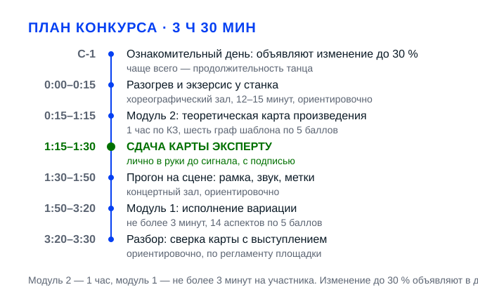
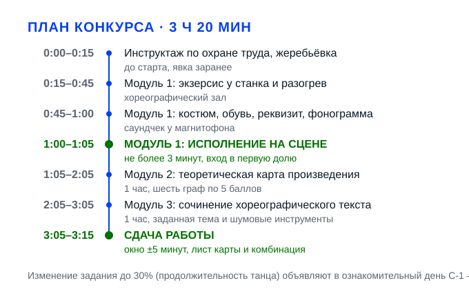
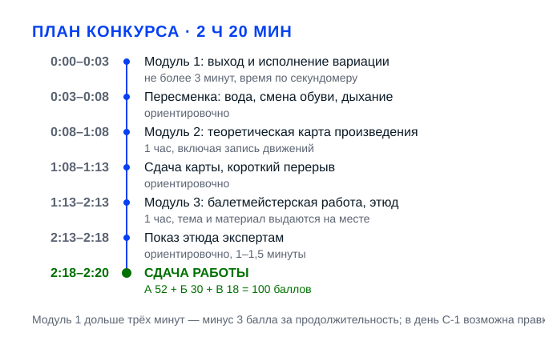

Исполнительское мастерство (хореография) (Р)
Задания ниже — официальные файлы «Абилимпикс» (источник: abilympics-russia.ru), разложенные по категориям. Решения написаны по тексту задания, регламенту и критериям оценки; в них указано, что именно проверяет эксперт.
Школьник
14–16 лет, базовый уровень заданияВ официальном файле категории не разделены отдельными разделами — приводим задание целиком; различия по категориям смотрите в таблице модулей.
Пошаговое решение
Перед вами разбор конкурсного задания чемпионата «Абилимпикс» 2026 по компетенции «Исполнительское мастерство (хореография)» для категории «Школьники». Два модуля и сто баллов. Модуль 1 — исполнение на сцене одного хореографического произведения или вариации, не более трёх минут, и он весит 70 баллов: четырнадцать аспектов по пять. Модуль 2 — теоретическая карта того же произведения, один час, 30 баллов: шесть аспектов по пять. Сцена дороже двух третей оценки, но карта пишется про тот же номер, поэтому готовить их нужно вместе. В ознакомительный день С-1 в задание могут внести до 30 процентов изменения — чаще всего это продолжительность танца, так что фонограмму и хронометраж проверяют заново в день соревнований. И помните: пять баллов модуля 1 отданы за охрану труда и технику безопасности, то есть часть оценки вы получаете до первого движения.

Задача 1. Разобрать задание и выбрать репертуар под критерииМодуль 1 · А: 70 баллов
До первой репетиции нужно получить на бумаге ответ на вопрос, за что именно ставят баллы, и проверить, что выбранный номер вообще способен их принести. Репертуар на этой компетенции оценивают не по сложности, а по совпадению: соответствует ли произведение своему названию, своей форме и виду, вашему возрасту, вашим индивидуальным особенностям, музыке, которая под него подложена. Номер, который технически блестящ, но поставлен не про то, что обещает название, теряет баллы сразу в четырёх аспектах. Поэтому сначала выписываем требования и только потом идём в зал, а не наоборот.
Действие 1.1. Выписать из задания требования и хронометраж
Шаг 1.1.1
Берём распечатку конкурсного задания и выписываем на отдельный лист три строки цифрами: модуль 1 — исполнение на сцене, не более трёх минут; модуль 2 — теоретическая карта, один час; в ознакомительный день С-1 возможна корректировка до 30 процентов, то есть в первую очередь изменение продолжительности танца. Тут же ставим сумму баллов: 70 плюс 30 равно 100, и рядом расшифровку — четырнадцать аспектов по 5 баллов в модуле 1 и шесть аспектов по 5 баллов в модуле 2. Лист крепим на папку-планшет, которая по перечню оборудования выдаётся участнику, чтобы он был под рукой и в зале, и за столом.
Три минуты — это не рекомендация, а граница: за продолжительность, соответствующую заявленному времени, дают 5 баллов, и они снимаются, если номер растянулся. Один час на карту тоже жёсткий: он идёт на анализ, а не на воспоминания о том, как называется вариация. Когда цифры выписаны на лист, вы перестаёте планировать на глаз и видите, что подготовка распадается на измеримые куски — примерно 70 баллов за сцену и 30 за текст.
На листе стоят все три числа из задания: три минуты, один час, тридцать процентов, и рядом разбивка баллов 70 и 30. Проверьте себя вопросом: если эксперт спросит, сколько аспектов в модуле 1, вы отвечаете сразу, не заглядывая в документ, — четырнадцать, по пять баллов каждый.
Самая частая ошибка — прочитать только описание задания и не дойти до таблицы критериев: тогда участник готовит красивый танец и узнаёт уже на разборе, что название не совпадает с содержанием, а форма заявлена неверно. Вторая — держать требования в голове: к третьему дню подготовки цифры путаются, и номер выходит за три минуты на двадцать секунд.
Эксперт сверяет заявленную продолжительность с фактической по секундомеру и фиксирует её в оценочном листе, поэтому выписанное время должно совпадать с тем, что вы реально танцуете.
Шаг 1.1.2
Переписываем четырнадцать аспектов модуля 1 по строке на каждый, напротив ставим галочку или вопрос. Аспекты: охрана труда и техника безопасности; соответствие названию; продолжительность против заявленного времени; соответствие виду и форме; музыкальное сопровождение; соответствие движений характеру и ритму музыки; репертуар и особенности участника; возрастная категория; умение передать кульминацию; целостность и законченность; пластичность и попадание в ритм; перевоплощение и образ; костюм и художественный образ; передача эмоциональной составляющей.
Каждый аспект — это ровно 5 баллов, и между собой они равны. Это значит, что мелкий на первый взгляд пункт про костюм весит столько же, сколько кульминация, которую вы репетируете месяц. Разложив критерии на строки, вы видите, где оценка набирается дешево, за счёт проверки и подготовки, а где требует настоящей работы над образом, и планируете время соответственно.
В списке ровно четырнадцать строк, ни одна не потеряна и не переписана как внешний вид вместо костюма, соответствующего внешнему имиджу и художественному образу. Проверьте по количеству: если строк меньше, вы случайно объединили два аспекта и потеряли из виду пять баллов.
Ошибка — читать критерии как общий список пожеланий и не связывать их с репетицией: тогда к конкурсу отработаны вращения, а костюм подобран из того, что было, и пять баллов уходят просто так. Вторая — считать, что все критерии про технику, и не готовить драматургию с кульминацией.
Эксперт заполняет оценочный лист именно по этим аспектам, поставив от 0 до 5 баллов в каждой строке, поэтому ваша карта критериев должна совпадать с его листом один к одному.
Шаг 1.1.3
Отдельно разбираемся с тридцатипроцентным изменением. В задании сказано, что оно вносится в ознакомительный день С-1 перед соревнованиями и на практике означает изменение продолжительности танца. Готовим два варианта фонограммы: полный, на три минуты, и урезанный, с точной меткой, какой фрагмент музыки вырезается, чтобы при требовании сократить номер вы не резали на слух и не теряли кульминацию. Метку записываем в секундах по времени звукозаписи, например убрать с 0:48 до 1:02, а не убрать второй куплет.
Изменение объявляют за день, и переучивать номер за вечер невозможно, но подрезать фонограмму по заранее размеченной партитуре реально. Если метки нет, вечером начнётся арифметика на слух: вы вырежете восемь тактов, номер развалится на стыке, и вы потеряете и целостность, и кульминацию — по 5 баллов за каждый аспект.
Есть два файла фонограммы, и в урезанном варианте стык слушается без щелчка и без провала в темпе: вы прогоняете его дважды и не сбиваетесь. Урезанный вариант тоже укладывается в три минуты, с запасом семь-десять секунд на поклон.
Типичная ошибка — приехать без готового сокращённого варианта и на месте решать, что вырезать: время уходит на монтаж, репетиция срывается. Ещё хуже — сократить номер механически, вырезав середину, и оставить кульминацию висеть без подготовки.
В ознакомительный день эксперт объявляет изменение задания и проверяет, что участник понял новую продолжительность; на выступлении он слушает секундомер, а не ваши объяснения.
Действие 1.2. Подобрать вариацию под себя и под критерии
Шаг 1.2.1
Проверяем репертуар по двум связанным аспектам — соответствие возрастной категории и соответствие индивидуальным особенностям. По возрасту: школьник не должен танцевать вариацию с драматической зрелостью взрослой партии, а детская игровая вариация на подростке выглядит пустой. По особенностям смотрим на свои данные честно: выворотность, шаг, прыжок, координацию, устойчивость, а при нарушениях опорно-двигательного аппарата — на доступность движений без риска. Из двух-трёх номеров оставляем тот, где сильная сторона попадает в кульминацию.
За каждый из этих двух аспектов дают по 5 баллов, и снимают их не за слабую технику, а за несовпадение: взрослая вариация на ребёнке читается как чужой костюм, а номер, где сложное движение приходится на вашу слабую сторону, вы просто не дотянете физически. Репертуар должен быть таким, чтобы ваши лучшие качества были видны в самом выигрышном месте номера.
Возьмите лист и разделите его на две колонки: что я делаю сильно и что делаю нестабильно. Кульминация выбранной вариации должна стоять в первой колонке. Проверьте и по возрасту: покажите видео своему педагогу и спросите прямо, не выглядит ли номер старше или младше вашего возраста.
Классическая ошибка — выбрать вариацию по красоте видеозаписи, а не по своим данным: на репетиции выясняется, что диагональ вращений не держится, и участник начинает прятать слабое место, ломая рисунок. Вторая — взять взрослый репертуар ради впечатления: два аспекта по 5 баллов уходят сразу.
Эксперт смотрит на соответствие репертуара возрасту и возможностям в первые тридцать секунд выступления, ещё до того, как оценит технику, — это видно по посадке корпуса и по тому, насколько свободно участник дышит.
Шаг 1.2.2
Сверяем название с содержанием. Выписываем название вариации на лист и рядом одной фразой формулируем, что происходит в номере: кого вы изображаете, что меняется от начала к концу. Если название обещает лирику, а номер построен на трюках, аспект не сойдётся. Дальше проверяем простым тестом: показываем номер человеку, который его не видел, и просим после просмотра назвать своими словами, о чём он; если ответ расходится с названием больше чем на одну ступень, меняем либо название в заявке, либо акценты в номере, но не оставляем расхождение.
Соответствие произведения названию — отдельные 5 баллов, и это один из самых дешёвых аспектов, потому что он решается не работой тела, а согласованностью документов и смысла. Эксперт смотрит номер с заявкой в руках: несовпадение видно сразу и воспринимается как небрежность, из-за которой дальше оценивают строже.
После просмотра сторонний зритель пересказывает сюжет словами, близкими к названию. Название в заявке и название в теоретической карте написаны одинаково — вплоть до кавычек и заглавных букв. Проверьте и по объёму: пересказ укладывается в две-три фразы, и в нём нет слов «просто красивый танец».
Ошибка — назвать номер Весенний ветер и танцевать абстрактную композицию без образа: зритель не понимает, при чём тут ветер, и балл уходит. Вторая, ещё более обидная — перепутать название в заявке и в карте: два документа расходятся, и оба аспекта, на сцене и в тексте, теряют вес.
Эксперт держит перед собой заявленное название и сверяет с ним происходящее на сцене, отмечая в листе, соответствует ли образ и характер движений заявленному сюжету.
Шаг 1.2.3
Определяем вид и форму произведения и записываем их теми же словами, которые потом пойдут в теоретическую карту. Вид — направление: народный танец, классический, современная хореография, бальный. Форма — как построен номер: сольная вариация, дуэт, массовая композиция, танцевальный этюд. Для школьника чаще всего это сольная вариация или танец в одном-двух исполнителях. Записываем так: вид — народный танец, форма — сольная вариация, и дальше проверяем, что лексика в номере действительно из этого вида, а не смесь всего подряд.
Соответствие выступления виду и форме — 5 баллов на сцене и ещё 5 баллов в карте за корректное определение. Это два разных аспекта в разных модулях, и они бьют по одному и тому же месту: если вы заявили народный танец, а танцуете современную лексику с народными вставками, теряете оба. Точная формулировка вида и формы — это ещё и способ проверить сам номер на стилистическую чистоту.
Лексика номера на девяносто процентов принадлежит заявленному виду: у народного танца читаются характерные положения рук, корпуса, работа стопы, у классики — выворотность и позиции. Посмотрите видео без звука: по одним движениям вид должен определяться.
Ошибка — заявить народно-стилизованный танец, чтобы не выбирать, и получить претензию к обеим частям: стилизация требует явного народного первоисточника, которого в номере нет. Вторая — назвать формой композицию, хотя танцует один человек.
Эксперт определяет вид и форму по лексике, а не по костюму: если в заявке классика, а стопы не выворотны и руки идут по народному, соответствие будет оценено низко.
Шаг 1.2.4
Слушаем фонограмму отдельно от танца, трижды подряд, и оцениваем её как звук, а не как аккомпанемент: качество записи, отсутствие щелчков и обрывов, громкость, читаемость музыкальной фразы. Затем проверяем драматургическое развитие музыки — есть ли в ней вступление, нарастание, кульминация и спад. Если музыка ровная от начала до конца, номер на ней обречён быть ровным, и аспект про умение передать кульминацию закрыть будет нечем. Файл сохраняем в двух форматах и на двух носителях, на флешке и в телефоне, с названием из букв и цифр, без пробелов и кавычек.
Соответствие исполняемого произведения музыкальному сопровождению — 5 баллов, а соответствие движений характеру и ритму музыки — ещё 5. И то и другое оценивают на слух: если в записи слышны щелчок и обрезанный финал, эксперт фиксирует небрежность раньше, чем увидит первое движение. Драматургия музыки — это каркас, на который вы накладываете драматургию танца.
Фонограмма прослушана на той аппаратуре, которая будет на площадке, или похожей по мощности: щелчков нет, финал не обрезан, громкость не прыгает. В музыке слышны минимум три точки — начало, вершина, спад — и вы можете назвать их по времени.
Самая частая ошибка — принести файл с обрезанным финалом, где музыка рушится за секунду до поклона: последние такты уходят в тишину, и целостность произведения рассыпается на глазах. Вторая — тихая или перегруженная запись: движения перестают совпадать с акцентами, потому что акцентов не слышно.
Эксперт слушает музыку как отдельный критерий и отмечает, совпадает ли характер движения с характером музыки в каждом разделе формы, а щелчки и обрывы записи фиксирует сразу, ещё до первого движения участника.
Действие 1.3. Собрать паспорт номера — заготовку для карты
Шаг 1.3.1
Заводим лист под названием паспорт номера и выписываем туда шесть строк, по числу аспектов модуля 2: название, продолжительность, форма и вид, автор, историческая справка, либретто. Продолжительность ставим не примерно три минуты, а измеренную: включаем фонограмму и засекаем секундомером от первого звука до последнего, с точностью до секунды, и записываем в формате 2 мин 47 с. Название, автора и вид переписываем дословно из заявки.
Теоретическая карта — это 30 баллов, шесть аспектов по 5, и заполняется она по этому же листу: за час в незнакомом помещении вы не вспомните точную цифру. Измеренная продолжительность нужна дважды: в карте за неё дают 5 баллов, а на сцене за неё же отвечает аспект модуля 1, и данные в двух модулях должны совпадать.
В строке продолжительности стоит число с секундами, и оно совпадает с реальным хронометражем прогона. Проверьте измерением дважды: первый раз на репетиции, второй — за день до конкурса, потому что темп под волнением меняется.
Ошибка — написать в карте три минуты, потому что так разрешено заданием: эксперт сверяет с фактом, и завышенное или заниженное время читается как неточность. Вторая — не записать автора полностью и потом полчаса вспоминать инициалы.
В модуле 2 эксперт проверяет карту по пунктам шаблона и сравнивает указанную продолжительность с фактическим хронометражем выступления, поэтому цифра должна быть измеренной, а не взятой из головы.
Шаг 1.3.2
Собираем материал для исторической справки заранее, до конкурса: когда и где произведение поставлено, кто балетмейстер, на какую музыку, в каком театре или коллективе, к какому направлению относится. Источники берём минимум два и записываем их в черновик — книгу, статью, сайт театра. На каждый факт ставим дату или имя; всё, в чём нет уверенности, помечаем карандашом и на конкурс не тащим. Справку укладываем в 1200–1800 знаков: этого хватает, чтобы рассказать происхождение и контекст и не утонуть в пересказе сюжета.
Историческая справка — 5 баллов, и её оценивают именно как справку: факты, даты, имена. Пересказ своими словами в духе этот танец пришёл к нам из глубокой древности баллов не даёт, потому что проверить нечего. Заранее собранный материал ещё и экономит время в часе, который отведён на карту: вы не ищете, а записываете.
В справке есть минимум три проверяемых факта — год, имя, место, — и каждый вы можете показать в источнике. Объём уложился в 1200–1800 знаков при рукописном изложении, то есть примерно в одну страницу А4.
Типичная ошибка — написать справку по памяти и перепутать балетмейстера с композитором: эксперты эту подмену видят сразу, и аспект закрывается низко. Вторая — скопировать длинный абзац из интернета и не суметь объяснить написанное.
Эксперт читает справку на предмет конкретики и достоверности: наличие имён, дат и названий для него важнее литературного блеска, а общие слова о богатом наследии народного творчества баллов не приносят.
Шаг 1.3.3
Разводим в паспорте трёх разных авторов, которых постоянно путают: автор хореографии, то есть балетмейстер, поставивший танец; автор музыки, то есть композитор или народная мелодия в обработке; автор литературной основы, если она есть. В графе автор произведения пишем того, кто нужен по шаблону, и в скобках уточняем: хореография — такой-то, музыка — такого-то. Если танец народный и персонального автора нет, так и формулируем: народный танец, редакция и постановка — такой-то.
Аспект про указание автора произведения стоит 5 баллов, и потерять их легко именно на смешении ролей: участники пишут композитора в строке автора хореографии и теряют балл при формально правильных данных. Точная формулировка показывает, что вы понимаете устройство номера, а это видно и в разговоре с экспертом.
В паспорте каждая роль подписана отдельно, и вы можете назвать три имени, не заглядывая в записи. Проверьте, что имя автора хореографии совпадает с тем, что указано в заявке и на афише вашего коллектива.
Ошибка — написать в строке автора композитора, потому что его имя чаще звучит в разговорах о музыке. Вторая — оставить строку автора пустой, считая, что для народного танца автора не существует: балл за аспект при этом не начисляется.
Эксперт смотрит, различает ли участник автора хореографии и автора музыки, и если в графе стоит композитор вместо балетмейстера, он отмечает подмену и снижает балл за этот аспект.
Задача 2. Подготовить тело и площадку без риска травмыМодуль 1 · ОТ и ТБ: 5 баллов
Пять баллов за соблюдение норм охраны труда и техники безопасности — это единственный аспект, который можно получить или потерять до первого движения, и одновременно единственная страховка от того, что номер вообще не состоится. Работа идёт в три слоя: сначала разогреваем тело так, чтобы связки и суставы выдержали нагрузку, потом осматриваем площадку и убираем риски — скользкий пол, кабели, длинные завязки, — и только после этого прогоняем номер в полную силу. По заданию в распоряжении участника есть хореографический зал для репетиций, концертный зал и магнитофон, и всё это нужно использовать до выхода на сцену, а не во время него.
Действие 2.1. Разогреть тело и сделать экзерсис у станка
Шаг 2.1.1
Начинаем с двенадцати-пятнадцати минут общего разогрева, и ведём его сверху вниз: шея, плечевой пояс, локти и кисти, поясница, тазобедренные суставы, колени, голеностопы. Каждое вращение делаем по восемь счётов в одну сторону и по восемь в другую, без рывков и без боли. После суставной части добавляем три-четыре минуты лёгкого кардио — бег на месте с высоким подниманием бедра, прыжки на двух ногах, — до состояния, когда становится тепло и появляется лёгкая испарина.
Холодная мышца не тянется, а рвётся: на сцене это означает либо срыв номера, либо травму, и в обоих случаях баллы за модуль 1 теряются целиком. Разогрев по принципу сверху вниз нужен ещё и потому, что он готовит не только мышцы, но и нервную систему: координация после него точнее, а вращения устойчивее. Пятнадцать минут здесь окупаются дольше, чем любая другая четверть часа в конкурсный день.
К концу разогрева вы чувствуете тепло в мышцах, дыхание участилось, но не сбилось, а пульс поднялся примерно до ста двадцати ударов в минуту. Пальцы рук и стопы тёплые, кожа на ощупь горячая — значит, кровоток пошёл.
Самая частая ошибка — сделать два наклона и выйти на сцену, считая, что разогреетесь в первом движении: мышцы в этот момент ещё эластичны только на бумаге, и первая же глубокая растяжка заканчивается растяжением связки. Вторая — начать с растяжки вместо разогрева и тянуть холодное тело.
Эксперт по технике безопасности смотрит, проводит ли участник подготовку тела осознанно, и отмечает в листе, была ли она вообще, — это часть пяти баллов модуля 1.
Шаг 2.1.2
Переходим к экзерсису у станка по методике: плие по позициям, батман тандю, батман жете, рон де жамб ан деор и ан дедан, адажио, гран батман. Каждое движение — по восемь тактов в одну сторону и восемь в другую, темп от медленного к быстрому, спина держится вертикально, колени направлены по носку. Станок держим кончиками пальцев, а не висим на нём. Если зала со станком нет, роль станка выполняет устойчивая опора или спинка стула в комнате участников.
В требованиях к квалификации для школьников прямо записано умение самостоятельно применить экзерсис у станка для разогрева тела, и это же делает разогрев управляемым: вы прогреваете именно те группы мышц, которые потом работают в вариации. Плие и адажио готовят колени и бедро, батманы и жете — подъём ноги и стопу, гран батман разгоняет кровь и включает прыжок.
После экзерсиса подъём ноги вперёд идёт выше, чем в начале, а колени и голеностопы не дают неприятных ощущений в нижней точке. Ноги натянуты, позиции не разъезжаются. Если какое-то движение отозвалось болью, значит, сустав или связка ещё не готовы — это движение убираем из разогрева.
Ошибка — гнать экзерсис в быстром темпе и до полной амплитуды с первого такта: связки не успевают, а «дорабатывать» приходится уже под музыку. Вторая — выкинуть экзерсис и заменить его парой трюков из номера: тело разогрето пятнами, а к середине вариации силы кончаются.
Владение методикой исполнения и умение самостоятельно разогреваться по экзерсису указаны в требованиях к квалификации, поэтому техника разогрева оценивается как часть профессионализма.
Шаг 2.1.3
Отдельно готовим стопы и зоны риска. Стопа: подъёмы на полупальцы двадцать повторений, перекаты с пятки на носок, круговые движения голеностопом по десять в обе стороны, растяжка икроножной мышцы у опоры по тридцать секунд на каждую ногу. Затем мягкая растяжка тех групп, которые работают в вариации: шпагатные позиции, наклоны, раскрытие плеч. При нарушениях опорно-двигательного аппарата объём движений и точки опоры проверяем с тренером и не выходим за границу, за которой начинается боль.
Голеностоп — самое частое место травмы в танце, потому что он держит каждый прыжок и каждый выход на полупальцы, а концевой аппарат перед выходом на сцену должен быть прогретым до последнего пальца. Растяжка нужна не для красоты, а для того, чтобы амплитуда движений в номере была для тела привычной: если вы тянетесь только в танце, каждая крайняя точка — стресс.
Лестничная проверка: подъём на полупальцы двадцать раз подряд без дрожи и без заваливания внутрь. Растяжка не даёт боли, только натяжение. Стопы сухие, обувь сидит плотно, пальцы в ней не сжаты. Перед выходом повторите подъёмы ещё раз: если дрожь вернулась, стопа не готова.
Ошибка — прыгать в номер без подготовки стоп: на первой же диагонали подворачивается голеностоп, и участник либо снимается с конкурса, либо танцует остаток с травмой и без баллов. Вторая — тянуть холодные мышцы до шпагата «чтобы потом было легче».
Эксперт по охране труда фиксирует не только отсутствие травм, но и то, насколько участник управляет нагрузкой: разумная подготовка видна по свободе движений в первой же комбинации.
Действие 2.2. Осмотреть зал и сцену, снять риски
Шаг 2.2.1
Заходим в концертный зал до начала выступления и обходим сцену по периметру: проверяем настил на швы и провалы, смотрим, где стоит световое оборудование и лежат кабели, где кулисы и задник, где граница сцены и край планшета. Отдельно проверяем зону, где будете танцевать: поводите стопой по полу, если скользит — просим протереть или используем канифоль. Замерьте шагами диагональ и ширину свободной площадки, чтобы понимать, влезает ли ваш рисунок в реальные размеры, а не в размеры зала для репетиций.
Осмотр площадки — часть пяти баллов за охрану труда, и одновременно способ спасти рисунок танца: диагональ, отработанная в репетиционном зале, на меньшей сцене превращается в тесноту, и движения начинают сбиваться. Кабели и швы — это падения, а падение на сцене означает не только снятие балла, но и остановку номера.
Вы можете перечислить три вещи: где заканчивается сцена, где лежат кабели и насколько скользкий пол в вашей зоне. Ваш рисунок укладывается в замеренную площадку, и на краю остаётся минимум полтора метра запаса до кулис.
Ошибка — выйти на сцену впервые в момент выступления: пол оказывается скользким, свет бьёт в глаза, и первый же поворот уводит к кулисе. Вторая — игнорировать кабели у задника и наступить на них в прыжке.
Соблюдение норм охраны труда и техники безопасности — отдельный аспект на 5 баллов, и его оценивают по тому, подготовился ли участник к работе на конкретной площадке.
Шаг 2.2.2
Проверяем экипировку на безопасность: шнурки заправлены и завязаны двойным узлом, длинные завязки от костюма подшиты или подколоты, тяжёлые украшения сняты, очки при необходимости закреплены резинкой, волосы убраны так, чтобы не хлестали по глазам при вращении. Костюм проверяем на движение: приседаем, поднимаем руки, делаем наклон — ничего не тянет, не сползает и не цепляется. Если в номере есть юбка или широкие рукава, проверяем, что они не попадают под ногу в прыжке.
Пять баллов за охрану труда снимаются за конкретные вещи, и развязанный шнурок — самая быстрая из них: за три минуты номера он успевает развязаться и оказаться под стопой на прыжке. Кроме того, костюм влияет на аспект соответствия внешнему имиджу и художественному образу: если одежда мешает двигаться, это видно в каждой позе.
Тест на движение: три приседания, два поворота, наклон вперёд и назад — ничего не съехало, ничего не давит. Шнурки спрятаны в обувь, а не болтаются. Проверьте себя перед выходом ещё раз, уже за кулисами, потому что костюм надевают в последний момент.
Ошибка — надевать сценический костюм впервые на выступлении: дома он казался удобным, а на сцене в нём не поднять руку. Вторая — оставить длинные завязки на рукавах, которые при вращении попадают в лицо и сбивают ориентацию.
Эксперт смотрит на участника целиком, включая экипировку, и оценивает, соответствует ли костюм образу и безопасен ли он в движении: сползающие завязки и обувь не по ноге он замечает в первые секунды.
Шаг 2.2.3
Уточняем у технического эксперта три вещи до старта: кому сообщать о травме или неисправности оборудования, где находится аптечка и как подать сигнал об остановке номера. В задании прямо сказано, что о случаях травмирования и обнаружения неисправностей нужно немедленно сообщать техническому эксперту, поэтому имя и место этого человека надо знать заранее. Там же уточняем, как подаётся фонограмма — с ноутбука эксперта, с флешки или с вашего носителя, и кто нажимает play.
Помимо пяти баллов за технику безопасности, это чистая практика: на конкурсе аппаратура и порядок запуска музыки отличаются от репетиции, и выяснять их в момент выхода поздно. Вопрос про аптечку и сигнал остановки занимает минуту, а в случае растяжения экономит те самые минуты, когда решается, продолжится номер или нет.
Вы знаете, к кому идти с травмой, где аптечка, как остановить музыку и с какого устройства она пойдёт. Свой носитель проверен на чужой технике, файл открывается и играет с первой секунды. Переспросите имя технического эксперта вслух: если не можете его назвать, инструктаж не отработан.
Ошибка — не спросить порядок запуска и обнаружить, что ваш файл не открывается, за десять секунд до выхода. Вторая — считать, что про травму «и так все поймут»: без сигнала номер продолжается, и участник танцует через боль.
Технический эксперт проводит инструктаж до старта и потом отмечает, обращался ли участник с вопросами и как действовал в нештатной ситуации, — это часть оценки за охрану труда и технику безопасности.
Действие 2.3. Прогнать номер технически
Шаг 2.3.1
Прогоняем номер по частям, разбив его на три-четыре фрагмента по музыкальным фразам, и после каждого фрагмента возвращаемся к началу. Работаем медленнее сценического темпа, на семьдесят процентов, но с полной амплитудой и точными положениями рук и корпуса. Снимаем себя на телефон с одной точки, лучше сбоку или спереди, и смотрим запись сразу: так видно, где линия руки провисает, а где вы теряете центр тяжести.
Медленный прогон — единственный способ увидеть, откуда берётся ошибка: в темпе тело проскакивает проблемное место на мышечной памяти, а на замедлении видно, что вы не доводите стопу или не держите плечи. Аспекты про пластичность движения и чёткое попадание в ритм стоят по 5 баллов, и оба растут именно из этой работы.
На записи линии рук и ног читаются одинаково в зеркальном и в прямом исполнении, корпус не заваливается, стопа натянута в каждой фразе. Фрагменты стыкуются без провала: последнее движение первого фрагмента переходит в первое движение второго.
Ошибка — гонять номер только целиком и в полную силу: ошибка повторяется сорок раз и закрепляется, а вы её не видите, потому что смотрите изнутри. Вторая — прогонять по частям, но в темпе, тогда на замедлении ничего не находится.
Эксперт оценивает пластичность движения и чёткость попадания в ритм отдельными аспектами по 5 баллов, и на сцене видно, отработан ли номер по фрагментам.
Шаг 2.3.2
Делаем полный прогон под фонограмму, с магнитофона или колонки, и засекаем время от первого до последнего звука, включая выход и поклон. Прогонов нужно минимум три, и в каждом фиксируем одно и то же: уложились ли в три минуты и где именно «съедается» время. Если номер выходит за границу, сокращаем не темп, а повторяющиеся куски — обычно это второй повтор основной комбинации в середине.
За продолжительность, соответствующую заявленному времени, дают 5 баллов, и проверяют её секундомером, а не на слух. Три прогона нужны потому, что первый всегда длиннее: тело ещё ищет точки, а к третьему появляется стабильный хронометраж, по которому можно планировать запас на поклон.
Три прогона подряд дают разброс не больше пяти секунд, и самый длинный укладывается в три минуты с запасом пять-семь секунд. Время каждого прогона записано на листе рядом с номером задачи, и вы видите, растёт оно или падает от попытки к попытке.
Ошибка — репетировать без музыки и счёт в голове: на конкурсе фонограмма идёт в своём темпе, и номер растягивается на двадцать-тридцать секунд. Вторая — сокращать номер за счёт темпа, из-за чего движения становятся суетливыми и теряют качество.
Эксперт включает секундомер на первом звуке музыки и останавливает на последнем, и любой выход за три минуты фиксируется в листе как несоответствие заявленному времени, за которое снимают 5 баллов.
Шаг 2.3.3
Берём два-три самых рискованных места — обычно это диагональ вращений, прыжок в кульминации и выход из него — и отрабатываем их отдельно, до трёх чистых повторений подряд. Три чистых подряд, а не «одно получилось»: это критерий, по которому понятно, что тело запомнило, а не угадало. Если на каком-то повторении появляется боль, движение останавливаем, а не «дотанцовываем через неё», и заменяем на более простое, сохраняя рисунок.
Кульминация — это аспект на 5 баллов, и провал именно там читается как потеря всего номера: зритель и эксперт ждут вершину и видят сбой. Правило трёх чистых повторений защищает от случайного успеха, а правило остановки при боли — от травмы, которая обнулит модуль целиком.
Три повторения подряд без сбоя, без опоры на соседей и без смещения точки приземления больше чем на полшага. На видео трудное место выглядит так же уверенно, как простая часть номера. Третье повторение делайте после короткой паузы, а не сразу: так проверяется устойчивость, а не разогретость.
Ошибка — оставить трудное место «на удачу», потому что один раз получилось: на сцене волнение меняет координацию, и именно там происходит сбой. Вторая — дотанцовывать через боль, чтобы не выпасть из рисунка.
Эксперт смотрит на кульминацию как на отдельный аспект и отмечает, доведено ли движение до конца, сохранилась ли устойчивость на выходе и не появилось ли паузы там, где её быть не должно.
Задача 3. Собрать драматургию, образ и совпадение с музыкойМодуль 1 · А: 70 баллов
На сцене оценивают не набор движений, а произведение: у него должны читаться этапы действия, своя вершина, характер и целостность. Из четырнадцати аспектов модуля 1 восемь прямо называют то, что нельзя доработать в последний день, — кульминацию, целостность, перевоплощение, эмоцию, совпадение с музыкой, пластичность, соответствие образу. Эта задача про то, как из выученной комбинации сделать вещь, у которой есть начало, поворот и финал, и как при этом попадать в музыку не «примерно», а в каждую сильную долю.
Действие 3.1. Выстроить драматургию по музыкальным фразам
Шаг 3.1.1
Раскладываем фонограмму на фразы, обычно по восемь тактов, и подписываем каждую своим смыслом: где экспозиция и знакомство с образом, где завязка, где развитие, где кульминация, где развязка и уход. Разметку делаем на бумаге по времени записи, ставя метки на секундомере: 0:00–0:22 экспозиция, 0:22–1:05 развитие и так далее. Затем смотрим, какие движения у вас стоят в каждой фазе, и переносим акценты так, чтобы самая сильная лексика попала в кульминацию, а не в начало.
В задании прямо сказано, что драматургия произведения должна соответствовать всем этапам, и это оценивают в аспектах про кульминацию, целостность и создание драматургического образа. Разметка по времени превращает это требование в проверяемое: вы видите, что первые двадцать секунд у вас сильнее, чем середина, и сразу понимаете, почему номер «выдыхается» к финалу.
На листе пять подписанных фаз с временными границами, и каждая фаза содержит хотя бы одно смысловое событие, а не просто продолжение движений. Кульминация стоит ближе к трём четвертям номера, а не в первой половине.
Ошибка — поставить весь эффектный материал в первые тридцать секунд, чтобы сразу понравиться: дальше номер идёт по инерции, и аспекты про кульминацию и целостность теряют вес. Вторая — не размечать время вовсе и обсуждать драматургию «на словах», не привязывая её к секундам.
Эксперт отмечает в листе, читаются ли этапы действия — завязка, развитие, кульминация, развязка, — и насколько ясно видна вершина номера: за драматургию отвечают три отдельных аспекта по 5 баллов.
Шаг 3.1.2
Выбираем точку кульминации и делаем её физически сильнее всего остального: самое высокое или самое широкое движение, самый резкий акцент, пауза перед ним и полная тишина дыхания в зале. Приём простой: за два-три такта до вершины чуть замедляемся и уменьшаем амплитуду, а на самой вершине даём максимальный размах и задерживаем взгляд в зал на один-два счёта. После вершины обязательно оставляем спад — три-четыре такта на выдох, иначе зритель не чувствует, что что-то произошло.
Умение передать кульминацию — отдельные 5 баллов, и они не начисляются за сложность движения: балл дают за то, что вершина выделена и зритель её заметил. Замедление перед вершиной нужно потому, что без контраста акцент читается как ещё одно движение в ряду, а пауза после — потому что восприятие работает на перепаде, а не на громкости.
Покажите номер человеку, который его не видел, и спросите, в какой момент, по его мнению, было самое главное. Если он называет вашу кульминацию, а не начало и не финал, вершина выстроена верно. Второй вопрос — что происходило перед вершиной: ответ «стало тише и медленнее» подтверждает, что контраст работает.
Ошибка — держать максимальную громкость движения весь номер: тогда кульминации нет, потому что не с чем сравнивать, и пять баллов уходят. Вторая — сделать вершину в прыжке без подготовки, так, что зритель не успевает её заметить.
Эксперт ждёт кульминацию в конкретном месте номера и отмечает, была ли она подготовлена и отделена от остального текста; сбой именно на вершине он читает как потерю всего произведения.
Шаг 3.1.3
Проверяем целостность: смотрим номер от первого движения до ухода и ищем места, где действие распадается на куски — обычно это стыки между комбинациями, где вы «переключаетесь» и на секунду замираете. На каждом стыке добавляем связку из двух-трёх движений, которая переводит одну часть в другую, и следим, чтобы направление движения и уровень (верх, середина, пол) менялись плавно. Финал должен закрывать номер: последняя поза держится не меньше двух счётов, уход со сцены продолжает образ, а не обрывает его.
Целостность и законченность произведения — это 5 баллов, и их снимают за неровности, которые участник обычно не замечает: онемевшие паузы, смену настроения между частями, финал, после которого непонятно, закончилось ли. Целостность — это то, что делает из четырёх комбинаций один номер, и она же держит внимание зрителя до конца.
На видео нет остановок между фрагментами и нет мест, где вы «ищете музыку». Последний кадр номера — осмысленная поза, а не разворот спиной в поисках кулисы. Номер можно показать без объяснений, и он понятен целиком.
Ошибка — оставлять стыки комбинаций «как получится»: в каждом таком месте номер провисает, и эксперт видит набор упражнений вместо произведения. Вторая — обрывать номер на последнем движении без финальной точки, из-за чего он выглядит недоделанным.
Эксперт оценивает целостность как отдельный аспект на 5 баллов и смотрит прежде всего на стыки между комбинациями и на финал: провисания и онемевшие паузы в этих местах он отмечает отдельно.
Действие 3.2. Сделать образ и эмоцию
Шаг 3.2.1
Определяем для себя, кого или что вы исполняете, одной фразой, и держим этот образ всё время номера: у него есть взгляд, температура, вес, направление внимания. Работаем с лицом отдельно, без ног: садимся перед зеркалом и повторяем три состояния из номера — начало, момент перед кульминацией и финал, — добиваясь, чтобы глаза и брови менялись вместе с корпусом. Затем вставляем эти состояния в танец и следим, чтобы взгляд не уходил в пол в паузах между движениями.
Перевоплощение и создание драматургического образа — 5 баллов, и это единственный аспект, который невозможно изобразить механически: эксперт видит, живёт ли участник в образе или отсчитывает движения. Взгляд в пол в паузе мгновенно разрушает образ, потому что зритель читает лицо раньше, чем ноги.
Попросите кого-то снять крупный план лица во время прогона: в начале, в кульминации и в финале выражение должно различаться. В паузах между движениями взгляд направлен туда, куда требует образ, а не в пол и не в кулису.
Ошибка — танцевать с «вежливым» лицом на всём протяжении: технически чисто, но образ отсутствует, и балл снижается. Вторая — наоборот, играть лицом заранее, до того как тело сделало движение, из-за чего возникает разрыв между выражением и действием.
Эксперт смотрит на лицо и корпус вместе и оценивает, создан ли образ или исполнена только лексика; взгляд, уходящий в пол в паузах, он читает как потерю перевоплощения.
Шаг 3.2.2
Выстраиваем эмоциональную линию так, чтобы она шла от содержания, а не от громкости: определяем, что персонаж чувствует в каждой из пяти фаз — и меняем не количество эмоции, а её качество. В начале допустима сдержанность, к кульминации напряжение растёт, в финале появляется новое состояние, а не просто «ещё сильнее». Переигрывание убираем простым способом: уменьшаем амплитуду мимики вдвое и добавляем её в дыхание и в спину.
Передача эмоциональной составляющей произведения — 5 баллов, и оценивают её по развитию, а не по интенсивности: ровно «страстное» лицо от первой до последней секунды читается как маска. Эмоция, идущая через дыхание и спину, выглядит достоверно и не сбивает технику, тогда как гримасы отвлекают и ломают линии.
На записи видно, что состояние в финале отличается от состояния в начале, и это отличие объяснимо словами. Дыхание не сбивается на эмоциональных местах, плечи не поднимаются к ушам. Проверьте по кадрам: в трёх разных точках номера выражение лица должно быть разным.
Ошибка — включить максимальную эмоцию с первых секунд и держать её до конца: зрителю некуда расти вместе с вами, и аспект оценивают низко. Вторая — менять лицо, но не менять тело, из-за чего эмоция выглядит приклеенной.
Эксперт оценивает эмоциональную составляющую в связке с драматургией: важно, развивается ли состояние по ходу номера, а не держится ли одна и та же эмоция от первой до последней секунды.
Шаг 3.2.3
Собираем костюм как часть образа, а не как одежду: цвет и силуэт должны читаться из последнего ряда, ткани — держать форму и не блестеть под сценическим светом, обувь — соответствовать виду танца. Проверяем костюм на сцене при том свете, который будет на выступлении, а не дома: холодный или тёплый свет меняет цвет, и любимый бордовый может стать почти чёрным. Всё лишнее убираем: бижутерию, которая звенит, принты, спорящие с образом, детали, которые цепляются за руки.
Соответствие костюма внешнему имиджу и художественному образу — 5 баллов, и это аспект, который решается до выхода на сцену, но виден всё выступление. Костюм работает на образ только тогда, когда он про тот же характер, что и движения: лиричная вариация в жёсткой спортивной форме читается как ошибка, даже если танец хорош.
Снимите себя на видео с расстояния, имитирующего последний ряд, и посмотрите без звука: понятно ли, кто вы и в каком настроении. Цвет не сливается с задником и не «выключается» под светом, силуэт читается.
Ошибка — надеть то, что удобно и есть в наличии, и надеяться, что эксперт не заметит: пять баллов уходят за несоответствие образа, причём это заметнее всего именно на общем плане. Вторая — перегрузить костюм деталями, которые мешают движению и отвлекают от лексики.
Эксперт оценивает костюм вместе с образом в самом начале выступления и дальше смотрит на участника уже на этом фоне: несоответствие силуэта и цвета характеру номера видно из любого ряда.
Действие 3.3. Соединить движение с музыкой
Шаг 3.3.1
Работаем с попаданием в ритм на сильных долях: включаем фонограмму и, не танцуя, прохлопываем сильную долю в каждом такте, вслух считая раз и два и три и четыре и. Затем соединяем хлопки с шагами — шаг на сильную долю, и только после этого вставляем движения. Отдельно проверяем акценты: те места, где в музыке удар или пауза, должны совпадать с самой выразительной точкой движения, а не приходиться на середину амплитуды.
Пластичное движение и чёткое попадание в ритм музыки — отдельные 5 баллов, а соответствие движений характеру и ритму — ещё 5. Оба аспекта проверяются на слух и на глаз одновременно: если акцент музыки попадает в момент, когда нога ещё не дошла до точки, зритель чувствует фальшь, даже не понимая, в чём дело.
Прогон под музыку и прогон под счёт дают одинаковый ритмический рисунок. На записи видно, что акценты совпадают с ударами, а не опаздывают на полтакта. Вы можете назвать, на какой счёт приходится кульминация.
Ошибка — разучить движения без музыки, а потом «наложить» их на фонограмму: рисунок движений и рисунок музыки живут отдельно, и попадание всё время съезжает. Вторая — ускорять движения к концу номера, потому что волнуетесь, и обгонять музыку.
Эксперт слушает музыку и смотрит на ноги одновременно и фиксирует расхождения в двух аспектах — про ритм и про характер музыки; опоздание акцента на полтакта он замечает даже при чистой технике.
Шаг 3.3.2
Сверяем характер движений с характером музыки, раздел за разделом: если музыка плавная, амплитуда широкая и непрерывная, движения идут легато; если музыка острая, добавляем акценты, остановки, чёткую работу стопы и локтя. Пройдите по каждой фазе и скажите вслух, какая там музыка — тягучая, маршевая, игровая, — и посмотрите, совпадает ли это слово с тем, как вы двигаетесь. Найденные расхождения исправляем не силой, а качеством движения: смена уровня, скорости и направления.
Соответствие движений характеру и ритму музыки — 5 баллов, и именно здесь чаще всего теряют оценку те, кто выучил технику: движения правильные, но одинаковые по качеству на всей протяжённости номера. Музыка почти всегда меняется, и танец обязан меняться вместе с ней, иначе произведение выглядит собранным из разных источников.
Для каждой фазы у вас есть одно слово, описывающее музыку, и одно, описывающее ваши движения, и они совпадают. На видео без звука характер номера меняется в тех же местах, где меняется музыка. Если слова совпадают, а на записи этого не видно, значит, тело не выполняет задуманное.
Ошибка — танцевать всю вариацию с одной динамикой, потому что так проще держать технику: совпадение с музыкой теряется, и пять баллов уходят. Вторая — реагировать на музыку только лицом, оставляя тело ровным.
Эксперт оценивает соответствие движений характеру музыки как отдельный аспект и смотрит, меняется ли качество движения вместе с музыкальными разделами.
Шаг 3.3.3
Доводим пластику: убираем углы в локтях и коленях, следим за непрерывностью перехода от движения к движению — точка должна не ставиться, а продолжаться. Полезное упражнение: прогон «на связках», где вы намеренно замедляетесь на переходах и следите, чтобы движение не замирало между позами. Отдельно проверяем руки: они движутся от плеча и от спины, а не от кисти, и не висят в паузах.
Пластичное движение и чёткое попадание в ритм — 5 баллов, и пластика напрямую влияет на восприятие образа: угловатость читается как незаконченность, даже когда техника верна. Непрерывность перехода — это то, что отличает танец от гимнастической комбинации, и её видно на любом плане.
На замедленной записи нет остановок в переходах, локти и колени сохраняют округлость, кисти не висят. Руки приходят в позу одновременно с корпусом, а не после него. Посмотрите на себя в профиль: линия от плеча до кисти должна быть непрерывной на всём движении.
Ошибка — собирать номер из отдельных поз, между которыми тело «перезагружается»: пластика теряется, и аспект закрывается низко. Вторая — держать руки в напряжении всё время, из-за чего они выглядят деревянными.
Эксперт смотрит на пластику как на отдельный аспект и отмечает, продолжаются ли движения одно в другое или распадаются на точки: угловатость в переходах он читает как незаконченность номера.
Действие 3.4. Выйти на сцену и уложиться в три минуты
Шаг 3.4.1
Собираем рамку номера: выход, первое положение, последняя поза, поклон, уход. Выход делаем частью образа, а не технической необходимостью — те же четыре-шесть счётов, что в музыке до первой фразы, идут на появление в характере. Поклон ставим после финальной паузы, длиной в один-два счёта: сначала зафиксировать последнюю позу, потом поклон, потом уход. Всю рамку прогоняем с секундомером и добавляем её время к трём минутам заранее.
Продолжительность выступления проверяют от первого до последнего звука, и выход с поклоном входят в эти три минуты: если вы добавили десять секунд рамки, а хронометраж не пересчитали, номер выходит за границу и теряет 5 баллов. Рамка влияет и на целостность: без фиксации финальной позы номер обрывается, а без поклона выглядит неоконченным.
Полный прогон с рамкой укладывается в три минуты, финальная поза держится два счёта, поклон идёт после паузы. На записи видно, где начинается и заканчивается номер, и эти точки совпадают с музыкой. Проверьте отдельно последний кадр: там должна быть поза, а не разворот к кулисе.
Ошибка — не считать рамку в хронометраж и выяснить на сцене, что музыка кончилась, а вы ещё кланяетесь: выход за три минуты фиксируется. Вторая — начинать движение с первых звуков, без выхода, из-за чего пропадает экспозиция образа.
Эксперт включает секундомер до первого звука и выключает после последнего, поэтому рамка целиком входит в оцениваемое время, а выход и поклон считаются вместе с танцем, а не отдельно.
Шаг 3.4.2
Готовим поведение на случай сбоя, потому что он случается чаще, чем кажется: музыка заиграла не с начала, фонограмма прервалась, реквизит уехал, вы забыли фрагмент. Правило одно: не останавливаться и не показывать залу, что что-то пошло не так. Если музыка пошла не с того места — продолжаете с того фрагмента, который соответствует звучащей музыке. Если музыка прервалась — держите последнюю позу и образ до восстановления, а не ходите по сцене. Забытый фрагмент заменяете связкой из уже отработанных движений в том же характере.
Остановка номера обнуляет впечатление целиком: теряются и целостность, и образ, и эмоция, то есть до пятнадцати баллов сразу. Умение продолжить в характере, наоборот, читается как мастерство, потому что эксперт видит владение материалом, а не заученную последовательность.
Вы репетировали хотя бы один прогон с намеренным сбоем — например, с музыкой, включённой с середины, — и дотанцевали до конца без остановки. План действий на каждый из четырёх случаев сформулирован одной фразой.
Ошибка — остановиться и начать заново: время уходит, три минуты заканчиваются, и номер не оценивают полностью. Вторая — выйти из образа и начать объяснять что-то жестами в зал. Третья, самая обидная, — дотанцевать как получится и потерять кульминацию, а вместе с ней целостность произведения.
Эксперт отмечает, как участник держит произведение при сбое, и для него это показатель целостности и владения образом: продолжение в характере он оценивает выше, чем остановку и разговор с залом.
Задача 4. Заполнить теоретическую карту: анализ произведенияМодуль 2 · Б: 30 баллов
Модуль 2 — это справка о собственном номере, и пишется она по шаблону, который выдают на площадке. Шесть пунктов, за каждый по 5 баллов: название, продолжительность, форма и вид, автор, историческая справка и либретто в форме рассказа. Ни один из них не требует вдохновения — все требуют точности и умения распределить час так, чтобы последний пункт не дописывался в спешке. Логика работы простая: сначала читаем шаблон и размечаем минуты, потом заполняем короткие графы, потом пишем два связных текста, и в конце проверяем всё глазами эксперта.
Действие 4.1. Разобрать шаблон и распределить час
Шаг 4.1.1
Получив шаблон, читаем его целиком до того, как взять ручку, и выписываем на черновик шесть граф в том порядке, в котором они стоят в бланке. Смотрим на объём каждой графы: под название, продолжительность, форму и автора отведены строки, под историческую справку и либретто — блоки по несколько строк. Сразу отмечаем, какие графы заполняются одним предложением, а какие требуют связного текста, и только после этого начинаем писать.
Шаблон задаёт и порядок, и объём ответа, а за каждую графу дают по 5 баллов независимо от того, насколько красиво она написана. Если начать с длинного либретто, на историческую справку останется пять минут, и вместо фактов появится общая фраза — пять баллов уйдут. Просмотр бланка целиком занимает две минуты и экономит потом двадцать.
На черновике шесть граф в том же порядке, что в бланке, и напротив каждой стоит пометка «строка» или «абзац». Вы можете сказать, сколько примерно слов требуется в каждый блок, не пересчитывая бланк заново.
Ошибка — начать писать сразу в бланк, с первой графы, не посмотрев, что впереди: к либретто место заканчивается, и его приходится ужимать до перечня движений. Вторая — заполнять графы в произвольном порядке и забыть одну.
Эксперт проверяет карту по пунктам шаблона сверху вниз, и незаполненная или перепутанная графа сразу означает потерю пяти баллов из тридцати; порядок пунктов он держит перед собой.
Шаг 4.1.2
Расписываем час по минутам и держим этот план на виду: десять минут на короткие графы — название, продолжительность, форма и вид, автор; пятнадцать минут на историческую справку; двадцать минут на либретто; десять минут на проверку и переписывание начисто; пять минут резерва. Время отмеряем по настенным часам, которые есть в перечне оборудования площадки, и записываем на черновике момент, когда переходим к следующему блоку.
Один час — жёсткая граница модуля 2, и он же самый опасный: кажется, что времени много, поэтому первые двадцать минут уходят на обдумывание названия. План по минутам нужен потому, что либретто — самый дорогой по времени блок и самый весомый по впечатлению, а проверка в конце ловит ошибки, которые дороже любой спешки.
На черновике написаны пять временных отрезков, вы знаете, во сколько начинаете справку и во сколько либретто. К моменту проверки у вас есть текст, а не пустые строки. Сверьтесь с настенными часами на середине модуля: если прошло больше тридцати минут, а справка не начата, план нужно ускорять.
Ошибка — потратить полчаса на первые четыре графы, потому что они короткие и кажется, что их надо сделать идеально: на либретто остаётся десять минут, и оно превращается в список движений. Вторая — не оставить времени на проверку и сдать карту с пропущенной графой.
Эксперт следит за временем модуля и забирает карту по истечении часа, поэтому план должен быть рассчитан на пятьдесят пять минут, а не на все шестьдесят.
Действие 4.2. Заполнить название и продолжительность
Шаг 4.2.1
В графе названия пишем название произведения точно так, как оно заявлено, — без сокращений, в кавычках, с заглавной буквы, если это имя собственное. Если название длинное, например с указанием на регион или на героя, переписываем его полностью, а не по памяти. Рядом, если в бланке есть место, добавляем одну строку пояснения: что это за произведение и к какому направлению относится.
Аспект про название, соответствующее тематике, стоит 5 баллов, и это самая простая графа из шести: она не требует анализа, только точности. Расхождение между названием в карте и названием в заявке читается экспертом как небрежность, и дальше он смотрит карту строже, потому что видит, что участник не сверялся с документами.
Название в карте посимвольно совпадает с названием в заявке и в вашем паспорте номера. Проверьте кавычки и заглавные буквы: именно на них чаще всего расходятся два документа. Прочитайте название вслух — если вы спотыкаетесь на слове, значит, там ошибка.
Ошибка — сократить длинное название до двух слов «для аккуратности»: тематика в графе остаётся неопределённой, и балл снижается. Вторая — перепутать название произведения с названием музыкальной пьесы, на которую оно поставлено.
Эксперт сверяет название с заявкой и оценивает, соответствует ли оно тематике конкурсного произведения: расхождение в кавычках или заглавных буквах он отмечает как небрежность участника.
Шаг 4.2.2
В графе продолжительности пишем измеренное значение в минутах и секундах, например 2 мин 47 с, и рядом, если позволяет место, указываем формат: от первого звука музыки до последнего, включая выход и поклон. Значение берём из паспорта номера, а не придумываем заново: если с момента последнего прогона прошло время, лучше перепроверить по фонограмме на телефоне, чем писать по памяти. Никаких «около трёх минут» — только число.
За указанную продолжительность выступления дают 5 баллов, и проверяют её сравнением с фактическим хронометражем. Точное значение с секундами показывает, что участник измерял, а не округлял; кроме того, оно помогает самому себе: если карта говорит 2:47, а фактически вы танцуете 3:05, вы видите расхождение до выступления.
Число в карте совпадает с числом в паспорте номера и с результатом последнего прогона по секундомеру. Формат записи единый: минуты и секунды, без слов «примерно» и «почти». Пересчитайте по фонограмме на телефоне, если с последнего измерения прошло больше двух дней.
Ошибка — написать 3 минуты, потому что это разрешённый максимум: фактический хронометраж может быть меньше, и тогда цифра в карте не соответствует произведению. Вторая — указать время только музыки, забыв про выход и поклон.
Эксперт сравнивает заявленную продолжительность в карте с реальным хронометражем выступления и расхождение отмечает в оценочном листе: карта и сцена должны говорить одно и то же.
Действие 4.3. Определить форму, вид и автора
Шаг 4.3.1
В графе формы и вида пишем два разных ответа и не смешиваем их: вид — направление хореографии, например народный танец, классический танец, современная хореография, бальный танец; форма — способ построения, например сольная вариация, дуэт, танцевальная композиция, этюд. Формулируем так: вид — народный танец, форма — сольная вариация. Если произведение стоит на стыке, указываем основное направление и через запятую уточнение, но не пишем три вида подряд.
Аспект про определение формы и вида стоит 5 баллов, и он пересекается с таким же аспектом на сцене: если в карте написано одно, а в танце видно другое, обе оценки снижаются. Разделение вида и формы — это ещё и проверка собственного понимания: многие путают направление с построением и пишут в графе форму «народный», а вид «вариация».
В графе два разных слова, и оба можно объяснить одной фразой, не заглядывая в учебник. Лексика номера соответствует указанному виду, а число исполнителей — указанной форме. Спросите себя, что вы написали бы в графе вида, если бы танцевали то же самое в другом костюме: ответ не должен меняться.
Ошибка — написать «народно-сценический танец, вариация, стилизация», то есть перечислить всё, что приходит в голову: графа становится неопределённой, и балл снижается. Вторая — указать форму «дуэт», танцуя соло.
Эксперт читает определение вида и формы и сверяет его с тем, что видел на сцене: расхождение он отмечает и в карте, и в исполнительском мастерстве, потому что это два разных аспекта по 5 баллов.
Шаг 4.3.2
В графе автора разводим роли и пишем их явно: автор хореографии — балетмейстер, поставивший танец; автор музыки — композитор или указание на народную мелодию с обработкой. Если произведение народное и персонального балетмейстера нет, пишем: народный танец, редакция и постановка — имя. Инициалы и фамилию указываем полностью, без «и др.» и без сокращений, а если точное имя постановщика неизвестно, указываем коллектив и руководителя.
Аспект про указание автора произведения — 5 баллов, и потерять их легче всего именно здесь: участники уверенно пишут композитора, потому что его имя звучит чаще. Точное разведение ролей показывает владение материалом и совпадает с тем, что требует от участника квалификационный блок задания.
В графе есть имя и роль, и вы можете объяснить, кто из перечисленных что сделал. Имя автора хореографии совпадает с заявкой и с афишей коллектива, а не взято из памяти. Если имён два, между ними стоит явное разделение: хореография и музыка.
Ошибка — указать композитора в строке автора произведения, а балетмейстера не указать вовсе: эксперт видит подмену и снижает балл. Вторая — написать только фамилию без инициалов, когда в источниках их несколько.
Эксперт проверяет, различает ли участник автора хореографии и автора музыки, и считает это признаком работы с первоисточником, а не формальностью: подмена ролей видна ему сразу.
Действие 4.4. Написать историческую справку и либретто
Шаг 4.4.1
Историческую справку пишем по заранее собранному материалу, в связном изложении, начиная с происхождения произведения: когда и где оно появилось, кто его поставил, на какую музыку, в каком театре или регионе оно исполняется. Дальше — одна-две фразы о том, как произведение связано с направлением, к которому вы его отнесли, и чем оно отличается от других в этом жанре. Объём держим в пределах 1200–1800 знаков, то есть примерно страница рукописного текста, и обязательно ставим имена и даты, если они известны.
Историческая справка — 5 баллов, и оценивают её по конкретике: даты, имена, места. Общие слова про богатое наследие народного творчества проверке не поддаются и баллов не приносят. Связка с направлением нужна потому, что справка должна объяснять именно ваше произведение, а не рассказывать про танец вообще.
В справке есть минимум три проверяемых факта и ни одного утверждения, которое вы не сможете подтвердить источником. Текст читается как связный рассказ, а не как набор строк через тире. Прочитайте первый абзац и скажите, о каком произведении речь: если ответа нет, начало нужно переписать.
Ошибка — переписать своими словами общую статью о народном танце, не сказав ничего о конкретном произведении: аспект остаётся формально заполненным, а балл низким. Вторая — перепутать даты и поставить премьеру раньше, чем написана музыка.
Эксперт ищет в справке конкретику и достоверность, а не литературность, и отмечает, есть ли в ней сведения именно об этом произведении: годы, имена и место постановки он сверяет с известными ему данными.
Шаг 4.4.2
Либретто пишем как рассказ, а не как перечень движений: кто герой, где он находится, что происходит в начале, что меняется в середине, чем всё заканчивается. Начинаем с одной фразы о герое и обстоятельствах, дальше три-четыре фразы о развитии действия с привязкой к музыке, и финал — одна-две фразы о том, чем закончилось. Названия движений в либретто не перечисляем: они относятся к хореографическому тексту, а не к сюжету; вместо «батман тандю и поворот» пишем, что делает герой и почему.
Либретто — 5 баллов, и требование в задании сформулировано прямо: краткое описание произведения в форме рассказа. Перечень движений этому не соответствует: эксперт видит, что участник описал технику, а не содержание, и балл снижается. Рассказ заодно проверяет, есть ли у номера сюжет, — если пересказать его нечем, значит, драматургия не выстроена.
Либретто можно прочитать вслух как короткий рассказ, и слушатель понимает, о ком и о чём он. В тексте нет названий движений, зато есть завязка, поворот и финал, совпадающие с фазами, размеченными в задаче 3.
Ошибка — написать «исполняется вариация, состоящая из комбинаций на середине зала и по диагонали»: это описание урока, а не произведения, и балл уходит. Вторая — пересказать сюжет чужого балета, а не своего номера.
Эксперт оценивает, написан ли текст в форме рассказа и соответствует ли он тому произведению, которое участник исполняет на сцене: перечень движений вместо сюжета он читает как невыполненное требование.
Задача 5. Проверить карту, сдать её и настроиться на выходМодуль 2 · Б: 30 баллов и сдача
Последние двадцать минут перед сдачей решают, дойдут ли до эксперта те тридцать баллов, которые вы уже заработали текстом. Проверка идёт по трём линиям: все ли шесть граф заполнены, читается ли написанное без напряжения, нет ли ошибок в именах, датах и терминах. Дальше — сдача в срок и короткая настройка перед выходом на сцену: не репетиция, а приведение дыхания и внимания в рабочее состояние, чтобы три минуты модуля 1 прошли на том уровне, который вы наработали за неделю.
Действие 5.1. Проверить карту по чек-листу
Шаг 5.1.1
Берём бланк и проходим по шести графам сверху вниз, называя вслух то, что должно в каждой стоять: название, продолжительность, форма и вид, автор, историческая справка, либретто. Пальцем ведём по строкам и отмечаем каждую заполненную галочкой на черновике. Отдельно смотрим те графы, где ответ короткий: пустая строка там заметна сразу, а в длинном абзаце её можно не увидеть.
Каждая из шести граф — это 5 баллов, и незаполненная графа стоит ровно столько же, сколько написанная плохо: система оценки не делает скидок за забывчивость. Проверка по шести пунктам занимает три минуты, а возвращает до тридцати баллов, если что-то пропущено. Это самая выгодная процедура за весь модуль 2.
Шесть галочек на черновике, и против каждой — то, что реально стоит в бланке. Вы можете перечислить все шесть пунктов по памяти, не подглядывая в шаблон. Пройдите бланк второй раз в обратном порядке, снизу вверх: так находятся графы, пропущенные по привычке.
Ошибка — проверять карту «по диагонали», останавливаясь на длинных абзацах: именно короткие строки, вроде автора или продолжительности, остаются пустыми. Вторая — проверять по памяти, а не по шаблону, и пропустить графу, которой в вашем черновике не было.
Эксперт оценивает карту по тем же шести пунктам, и пустая графа означает ноль в соответствующем аспекте без обсуждения, поэтому проверка идёт по шаблону, а не по памяти.
Шаг 5.1.2
Проверяем читаемость: пишем черновик разборчиво, без сокращений и без «звёздочек» со сносками, а на чистовик переносим только то, что уже проверено. Поля оставляем не меньше сантиметра, между блоками — пустая строка, чтобы эксперт видел, где кончается справка и начинается либретто. Если почерк мелкий, пишите крупнее: эксперт читает много карт подряд, и неразборчивый текст оценивают хуже, даже когда содержание верное.
Оценка ставится по прочитанному, а не по задуманному: если абзац не читается, аспект закрывается как неполный. Разделение блоков нужно потому, что эксперт ищет в карте конкретные пункты шаблона, и ему должно быть видно, где какой. Это не придирки к оформлению — это способ не потерять баллы, которые уже набраны содержанием.
Карту можно прочитать, не приближая к глазам, и каждый блок начинается с новой строки. Человек, который не видел вашего черновика, находит все шесть пунктов за минуту. Отойдите на два шага от листа: если текст расплывается, эксперт за столом увидит то же самое.
Ошибка — писать мелко, чтобы всё уместилось на одном листе: эксперт тратит время на разбор и ставит ниже. Вторая — оставлять сокращения вроде «т.д.» и «хор.» там, где нужно полное слово. Третья — переносить на чистовик непроверенный текст и вместе с ним перетаскивать ошибки.
Эксперт читает карту последовательно и отмечает, легко ли найти в ней обязательные пункты шаблона: неразборчивый текст он оценивает ниже, даже когда содержание верное.
Шаг 5.1.3
Проверяем имена, даты и термины: фамилию балетмейстера сверяем с заявкой, название произведения — с заявкой и паспортом номера, термины направления — с тем, как они пишутся в учебнике, а не на слух. Пробегаем текст на ошибки в словах, которые обычно пишутся неверно: названия танцев, имена, годы. Если в карте есть цифра, проверьте её дважды: год премьеры и продолжительность — самые частые места ошибок.
Ошибка в имени или годе бьёт по аспектам про автора и про историческую справку сразу, то есть до десяти баллов за одну опечатку. Аккуратность в терминах показывает владение материалом: если вид танца назван неверно, эксперт сомневается и в определении формы. Проверка цифр занимает минуту, потому что их в карте немного.
Все имена и названия совпадают с заявкой посимвольно, годы сверены с источником, термины написаны так, как в учебной литературе. В карте нет ни одного слова, написанного на слух. Прочитайте имена вслух по слогам: так ловятся перестановки букв.
Ошибка — писать фамилию по памяти и переставлять буквы: эксперт видит небрежность в самом чувствительном месте — там, где указан автор. Вторая — оставить год премьеры, взятый из головы, и разойтись с источником на десять лет.
Эксперт проверяет достоверность имён и дат, и для него это прямой показатель того, работал ли участник с первоисточником, а не пересказывал общие сведения по памяти.
Действие 5.2. Сдать карту в срок
Шаг 5.2.1
Сдаём карту до истечения часа, а не в последнюю минуту: за пятнадцать минут до конца модуля вы уже должны держать бланк в руках и идти к эксперту. При сдаче называем свои данные, показываем заполненные графы и уточняем, нужно ли что-то подписать или дописать на обороте. Если шаблон предполагает подпись участника, ставим её сразу, а не «потом подойду».
Модуль 2 длится один час, и карта, оставшаяся на столе после сигнала, к оценке не принимается, сколько бы баллов в ней ни было. Сдача заранее даёт запас на формальности: подпись, уточнение графы, поиск нужного эксперта. Это те минуты, которые обычно и оказываются решающими.
Карта у эксперта, ваши данные записаны, подпись стоит, время сдачи зафиксировано. Вы выходите из зоны модуля 2 без бланка в руках — значит, действительно сдали, а не оставили на столе. Если бланк остался у вас, вернитесь и передайте его лично.
Ошибка — дорабатывать последний абзац до сигнала и сдать через минуту после окончания: работу не принимают. Вторая — оставить карту на столе на видном месте и уйти, решив, что её заберут. Третья — сдать бланк без подписи и потом доказывать, что он ваш.
Эксперт принимает карту лично и фиксирует время сдачи, поэтому передача должна быть в руки, а не на стол, и бланк, оставшийся после сигнала, к оценке не принимается.
Шаг 5.2.2
Перед сдачей фотографируем или переписываем себе ключевые строки черновика: название, продолжительность, форму и вид, автора. Если шаблон разрешает оставить черновик, оставляем его у себя. Это нужно не для споров, а для собственной памяти: после модуля 2 сразу идёт выход на сцену, и нет времени вспоминать, что именно вы заявили в карте — а сцена и карта должны совпадать по названию, виду и хронометражу.
Расхождение между картой и выступлением заметно эксперту, который смотрит оба модуля: если в карте заявлена одна продолжительность, а на сцене другая, страдают аспекты сразу в двух модулях. Кроме того, сверка перед выходом помогает настроиться: вы выходите танцевать именно то, что описали, а не другое.
У вас есть точные строки из карты, и перед выходом вы сверяете с ними название и хронометраж. Если в карте написано 2 мин 47 с, а фонограмма идёт 3 мин 05 с, вы замечаете это до выступления, а не после.
Ошибка — сдать карту и забыть, что в ней написано: на сцене выясняется, что вид танца заявлен один, а исполняется другой. Вторая — держать в голове приблизительные цифры и потом сомневаться, что именно указано в графе.
Эксперт смотрит оба модуля одного участника и легко сопоставляет заявленное в карте с исполненным на сцене: название, вид и хронометраж должны совпадать и в документах, и в танце.
Действие 5.3. Настроиться перед выходом
Шаг 5.3.1
За пятнадцать минут до выхода уходим в тихое место и делаем короткую настройку: пять медленных дыханий с удлинённым выдохом, лёгкая встряска рук и ног, проверка осанки у стены. Затем три-четыре минуты «прокрутки» номера в голове от первого движения до последнего, в темпе музыки, без физического исполнения. Воду пьём маленькими глотками заранее, а не за минуту до выхода, и обязательно посещаем туалет до, а не после объявления.
Физическая разминка закончилась раньше, и перед выходом нужна не нагрузка, а регуляция: удлинённый выдох снимает избыточное возбуждение, при котором руки начинают дрожать, а темп ускоряется. Прокрутка в голове нужна, чтобы первое движение пошло без поиска: на сцене нет времени вспоминать, с какой ноги начинается вариация.
Дыхание ровное, ладони не влажные, пульс ощущается спокойнее, чем пять минут назад. Вы можете мысленно назвать первые четыре движения и точку кульминации, не задумываясь. Проверьте голос: скажите одну фразу вслух, и если он срывается, сделайте ещё пять медленных выдохов.
Ошибка — «дотанцевать» номер в полную силу перед выходом, чтобы успокоиться: силы уходят, и на сцене к кульминации их уже нет. Вторая — выйти с задержанным дыханием и начать номер на вдохе, из-за чего первая фраза идёт скомканно.
Эксперт видит состояние участника в первые секунды выступления, и ровное дыхание с подготовленной первой позой читается как готовность к работе, а суета за кулисами — как неподготовленность.
Шаг 5.3.2
За пять минут до выхода проверяем всё, что нельзя поправить на сцене: шнурки и застёжки, крепление реквизита, если он есть, отсутствие посторонних предметов в карманах, метку на полу, если вы её ставили. Уточняем у технического эксперта, что фонограмма стоит на нужном треке и запускается с первой секунды. Дальше стоим за кулисами в первой позе и дышим, а не переговариваемся: голос и внимание должны быть направлены внутрь номера.
Всё, что проверяется за пять минут, уже невозможно исправить на сцене: развязавшийся шнурок и незапущенная фонограмма стоят баллов, а иногда и всего номера. Первая поза за кулисами нужна, чтобы тело вошло в образ до выхода и первые четыре счёта не ушли на «включение». Тишина перед выходом — приём, который экономит внимание.
Вы стоите в первой позе, фонограмма согласована, реквизит на месте, метка под ногой. За кулисами ничего не звенит и не свисает, дыхание ровное. Проверьте ещё раз обувь: пятки сидят плотно, шнурки убраны внутрь, подошва не скользит по полу сцены.
Ошибка — обсуждать с соседями порядок выступлений за минуту до выхода: внимание уходит наружу, и первый такт вы пропускаете. Вторая — не уточнить трек и услышать вместо своей музыки чужую. Третья — выйти с реквизитом в руках, не проверив крепление, и потерять его в первом же повороте.
Эксперт и технический эксперт видят выход целиком, и подготовленная первая поза читается как владение ситуацией, а поиск места на сцене в первые секунды — как потеря образа.
Студент
учащиеся колледжей и техникумовВ официальном файле категории не разделены отдельными разделами — приводим задание целиком; различия по категориям смотрите в таблице модулей.
Пошаговое решение
Студентам на чемпионате «Абилимпикс» по компетенции «Исполнительское мастерство (хореография)» предстоит пройти три модуля: исполнить на сцене хореографическое произведение не более трёх минут, за час заполнить теоретическую карту этого произведения и ещё за час сочинить хореографический текст — танцевальную комбинацию на заданную тему. Сто баллов распределены так: 52 за исполнение, 30 за карту, 18 за балетмейстерскую работу, и почти половина набирается до выхода на сцену — выбранным репертуаром, разогревом, фонограммой и хронометражем. Ниже весь путь по шагам: от чтения конкурсного задания и арифметики баллов до экзерсиса у станка, выхода на сцену, письменной карты и сочинения комбинации. Для каждого шага объяснено, что и как делать, зачем это нужно по критериям, как проверить результат, что обычно идёт не так и в какой момент на это смотрит эксперт.

Задача 1. Разобрать конкурсное задание и разложить сто баллов по модулямМодули А–В · 100 баллов
Студенческая категория по хореографии отличается от школьной третьим модулем и весом баллов: на сцене нужно исполнить произведение не более трёх минут и получить за это 52 балла, потом за час написать теоретическую карту произведения ещё на 30 баллов и ещё за час сочинить хореографический текст на заданную тему на 18 баллов. Почти половина итога набирается до первого выхода на сцену — правильно выбранным репертуаром, внятным регламентом на листе и планом репетиций. Поэтому работа начинается не с разминки, а с чтения задания и с арифметики, в которой видно, за что именно дают баллы.
Действие 1.1. Выписать регламент трёх модулей на лист
Шаг 1.1.1
Берём лист А4 из пачки на столе площадки и шариковой ручкой выписываем регламент тремя строками: модуль 1 — исполнительское мастерство, не более трёх минут, результат — исполнение произведения на сцене; модуль 2 — теоретическая карта, один час, результат — справка о произведении; модуль 3 — балетмейстерская работа, один час, результат — сочинение хореографического текста на заданную тему. Слева от каждой строки оставляем поле шириной в ладонь — туда потом лягут баллы. В голове регламент не держим: время модулей объявляют один раз.
Регламент — единственная часть задания, которая не обсуждается и не подгоняется под участника: три минуты сцены стоят 52 балла, час на карту — 30, час на балетмейстерскую работу — 18. Перераспределить это время между модулями нельзя, а потерять можно легко: если номер выучен на четыре минуты, то лишняя минута не станет запасом, она станет нарушением пункта «продолжительность выступления соответствует заявленному времени» и снимет 3 балла из 52.
Проверяем лист по трём признакам: в каждой строке есть название модуля, его время и результат, между строками осталось место для пометок, а всего строк ровно три. Если какой-то модуль записан без времени — вы переписали не регламент, а его пересказ, и начинайте заново, пока не стёрли карандаш.
Типичная ошибка — выписать только своё выступление, а модули 2 и 3 отложить «на потом»: на площадке они идут сразу после сцены, и полтора часа письменной работы сваливаются на разогретого, но выдохшегося участника. Вторая ошибка — записать «примерно три минуты» вместо «не более трёх»: допуск односторонний, короче — можно, длиннее — нельзя.
Эксперт видит ваш лист мельком, но по первым минутам модуля 2 ему становится понятно, разбирался участник в структуре задания или писал по памяти. Лист он не читает, но вопросы по регламенту задаёт именно тем, кто в нём разбирался.
Шаг 1.1.2
Под названиями модулей выписываем критерии с весом, чтобы видеть, где лежат дорогие баллы. В исполнительском мастерстве 52 балла: по 5 — соответствие движений характеру и ритму музыки, умение передать кульминацию, целостность и законченность, пластичное движение с попаданием в ритм и перевоплощение в драматургический образ; по 3 — охрана труда, название, продолжительность, вид и форма, музыкальное сопровождение, индивидуальные особенности и возрастная категория, костюм и эмоциональная составляющая. Карта — 30 баллов шестью пунктами по 5, балетмейстерская работа — 18 баллов по 3.
Арифметика критериев меняет стратегию подготовки: пять баллов за кульминацию и пять за целостность нельзя «добрать» гладким исполнением, а три балла за костюм берутся одним вечером и без репетиций. Участники, которые знают расклад, в первую очередь чинят пятибалльные позиции — драматургию, ритм, образ, — и только потом возятся с мелочами. Кроме того, сумма 52 + 30 + 18 = 100 позволяет на месте прикинуть, сколько стоит каждая потеря.
Складываем числа на листе: 52, 30 и 18, в сумме ровно 100. Внутри первого модуля проверяем, что пятибалльных пунктов пять, а трёхбалльных девять, иначе вы что-то потеряли при переписывании. Если сумма не сходится — возвращайтесь к шаблону, а не к своей памяти.
Самая частая ошибка — считать, что всё решает «техника», и готовить только лексику: пятибалльные пункты по кульминации, целостности и образу остаются недобранными, хотя тело работает. Вторая — переписать критерии и не смотреть на них ни разу: лист нужен как карта для каждой репетиции.
На площадке эксперт заполняет протокол ровно по этим аспектам, и его оценка идёт построчно: за кульминацию и за костюм он будет искать разные признаки.
Шаг 1.1.3
Внизу листа отдельной строкой записываем: «С-1, ознакомительный день — возможно изменение задания до 30 процентов, а именно продолжительности танца». В ознакомительный день, до жеребьёвки и до первой репетиции на сцене, подходим к главному эксперту и уточняем коротко: изменилась ли продолжительность, если да — на сколько и в какую сторону. Ответ записываем рядом той же ручкой, с временем и фамилией того, кто сказал.
Изменение до 30 процентов — это не слух, а пункт задания, и касается он именно продолжительности, то есть того единственного параметра, который вы выстраивали под три минуты. Если танец сократили до двух с половиной минут, а вы об этом узнали за десять минут до выхода, придётся резать драматургию на ходу и терять кульминацию с целостностью, а это сразу 10 баллов из 52.
Признак того, что всё сделано: в листе стоит дата и время уточнения, зафиксированное значение продолжительности и понятно, кто его подтвердил. Если вы услышали «вроде без изменений» от соседа, а не от эксперта, считайте, что информация не получена.
Ошибка новичка — решать, что «изменения меня не коснутся», и не спрашивать вовсе. Вторая, более обидная — услышать об изменении и не перестроить фонограмму и рисунок: тогда номер обрезается на середине кульминации, финал комкается, и пункты «целостность и законченность» и «умение передать кульминацию» закрываются нулём.
Главный эксперт объявляет изменение один раз и считает, что участник о нём знает; переспросить можно до старта, но не после выхода на сцену. Запишите его фамилию: при спорной ситуации это единственное основание для уточнения.
Действие 1.2. Перевести критерии в личный чек-лист подготовки
Шаг 1.2.1
Разносим критерии по трём корзинам на том же листе. В первую — то, что тренируется каждый день и требует тела: соответствие движений характеру и ритму, пластика, кульминация, драматургический образ, целостность. Во вторую — то, что делается один раз, но заранее: репертуар под свои особенности и возраст, костюм под образ, фонограмма, название и форма произведения. В третью — то, что проверяется в день конкурса за пятнадцать минут: техника безопасности, обувь, разогрев, папка с шаблоном, ручка и карандаш. Каждой корзине назначаем свой день недели и своё время.
Без такого разбора подготовка идёт как получится: участник неделями доводит прыжок, который стоит часть одного критерия, и приходит на конкурс без проверенной фонограммы, теряя баллы за соответствие музыкальному сопровождению и за продолжительность. Корзины дают простую защиту — дорогие и частые вещи в первой, одноразовые во второй, пятнадцатиминутные в третьей, и ни одна не забывается.
Проверяем: в первой корзине не меньше пяти пунктов, во второй — не меньше четырёх, в третьей — всё, что нужно взять с собой. У каждого пункта стоит день недели или дата. Если у пункта нет даты, значит, он не будет сделан.
Классическая ошибка — записать «костюм» и «фонограмма» в ежедневные задачи: они не делаются каждый день, зато занимают место в голове и создают чувство, что работа идёт. Обратная ошибка — оставить в третьей корзине разогрев: пятнадцати минут на настоящий экзерсис не хватает, и тело выходит на сцену холодным.
По характеру подготовки эксперт судит о зрелости участника: студенческая категория предполагает, что человек умеет планировать сам, без напоминаний наставника.
Шаг 1.2.2
Честно выбираем свой самый слабый критерий из пятибалльных и назначаем ему отдельное упражнение на каждой репетиции. Если проваливается кульминация — двадцать минут работаем только над точкой наивысшего напряжения: повторяем подход к ней, а не весь танец. Если проваливается ритм — считаем вслух на восемь, потом на четыре, потом только внутренним счётом, и так до тех пор, пока не совпадёт с сильной долей. Слабое место записываем маркером на видном месте, чтобы оно не растворилось в общей работе.
Пять баллов, снятых за один критерий, дороже, чем десять вечеров, потраченных на шлифовку сильного элемента, который и так даёт максимум. Слабое место чинится только отдельным упражнением: в прогоне целиком оно маскируется общим движением и не исправляется никогда. Студенту это важнее, чем школьнику, потому что времени на подготовку меньше, а требований к драматургии больше.
Признак работы: на каждой репетиции вы можете назвать, сколько минут ушло именно на слабое место, и что за эти минуты изменилось. Если через неделю вы не можете показать разницу на записи, упражнение выбрано неверно — меняйте, а не повторяйте.
Ошибка — «погонять танец целиком» вместо адресной работы: приятно, привычно и не двигает ничего. Вторая — взяться сразу за три слабых критерия: внимание распыляется, и ни один не доводится до автоматизма, а на сцене автоматизм важнее понимания.
Эксперт не знает, над чем вы работали, но видит результат по контрасту: у участников с адресной работой кульминация читается с последнего ряда. Слабое место, названное на разборе вслух, слышно и в его замечаниях после выступления.
Шаг 1.2.3
Собираем папку участника и проверяем её по списку оборудования: папка-планшет, чёрный маркер, шариковая ручка, простой карандаш, ластик и бумага А4 — всё это выдаётся на площадке, но лежит оно на столе, а столов на пять рабочих мест, и в час пик у стола толпа. Свой ноутбук участник может принести с собой, если он нужен для теоретической карты, но тогда заранее проверяем зарядку и то, что файл открывается без интернета. Папку-планшет используем как переносной стол для модуля 3: на колене в зале писать неудобно, а стоя у станка — тем более.
Модуль 2 и модуль 3 — это письменная работа на 48 баллов из 100, и она оценивается по содержанию, а не по тому, успели ли вы найти ручку. Отсутствие карандаша и ластика стоит не баллов, а минут: черновик пишется карандашом, чистовик — ручкой, и на это в часе заложено ровно столько времени, сколько нужно, если инструменты под рукой.
Перед стартом выкладываем папку на стол и считаем: планшет, маркер, ручка, карандаш, ластик, не меньше двух чистых листов А4. Ручка пишет — проверяем на обрывке, а не на чистовике. Ноутбук, если взяли, включён и держит заряд не меньше полутора часов.
Частая ошибка — прийти с одним листом и одной ручкой «чтобы не таскать лишнего»: на втором черновике лист кончается, и участник пишет либретто на обороте исторической справки. Вторая — взять гелевую ручку, которая мажет: смазанный текст читается хуже, а эксперт оценивает именно текст.
Перед модулем 2 эксперты проходят по рядам и смотрят, готово ли рабочее место; отсутствие письменных принадлежностей фиксируется как организационная неготовность.
Действие 1.3. Построить план репетиций от дня конкурса назад
Шаг 1.3.1
Берём календарь и идём от даты конкурса назад, а не вперёд от сегодняшнего дня. За три дня до конкурса ставим генеральный прогон в костюме и с фонограммой на незнакомой площадке, за неделю — сборку номера целиком без остановок, за две недели — доработку кульминации и рисунка, а всё, что раньше, отдаём на лексику и выносливость. Каждую репетицию ограничиваем сорока пятью минутами чистой работы: двадцать минут экзерсис и разогрев, пятнадцать адресная работа над слабым критерием, десять прогон и разбор.
Обратный отсчёт нужен потому, что генеральный прогон нельзя ставить «когда получится»: он должен быть не позже чем за трое суток, чтобы осталось время исправить то, что вскрылось. Сорок пять минут — рабочая длительность, после которой внимание падает и повторение начинает закреплять ошибку вместо техники. Такой план защищает и от перетренированности, из-за которой на сцене теряется эмоциональная составляющая.
В календаре на каждую неделю есть не меньше трёх записанных репетиций с темой, и у каждой есть длительность. Между генеральным прогоном и конкурсом — минимум два дня на исправления. Если в плане стоит «танец целиком» пять раз подряд, план написан неверно.
Ошибка — репетировать «когда есть настроение», наращивая объём в последнюю неделю: тело не успевает адаптироваться, и на конкурсе либо забиваются мышцы, либо участник выходит на сцену уставшим ещё до начала. Вторая — поставить генеральный прогон за день до конкурса: любые найденные шероховатости уже не исправить, а нервы потрачены.
Эксперту план не показывают, но по качеству исполнения видно, была ли работа распределена или всё делалось в последние дни. Ровное распределение работы он читает по свежести участника к третьему модулю.
Шаг 1.3.2
Генеральный прогон проводим в условиях, которые не помогают, а мешают: в зале без зеркал, на площадке с другим покрытием, с фонограммой, играющей с колонки в углу, и с хронометром в руке у наставника. Просим кого-нибудь стоять там, где обычно сидят эксперты, и смотреть молча, не подсказывая. Один прогон снимаем на телефон с той же точки — запись потом смотрим без звука, только глазами, потому что без звука сразу видно, где теряется натяжение и провисает рисунок.
Сцена не повторяет репетиционный зал: там другое покрытие, другой свет, нет зеркал и никто не подсказывает, где стоять. Прогон в неудобных условиях вскрывает именно те потери, которые на конкурсе стоят баллов: потерянный ракурс, скомканный переход, дыхание не в той фразе. Просмотр без звука — самый быстрый способ увидеть, читается ли драматургия телом, а не музыкой.
После прогона у вас есть три факта: точное время номера по хронометру, запись с точки экспертов и список из двух-трёх мест, где вы «поплыли». Если время вышло за три минуты хоть на десять секунд, номер уже не готов, независимо от качества лексики.
Ошибка — прогонять только в удобном зале перед зеркалом: на сцене участник начинает искать отражение и разваливает ракурсы. Вторая — смотреть запись со звуком и любоваться попаданием в музыку, не замечая, что половину номера тело стоит на месте.
Эксперт ловит именно то, что вскрывается на таких прогонах: потерю ракурса в кулисах, скомканный финал и дыхание, сбитое на кульминации. Комканный финал и потерянные ракурсы он относит к недостатку прогонов на чужой площадке.
Задача 2. Подготовить тело: экзерсис у станка и разогрев до потаМодуль 1 · часть 52 баллов
Задание прямо требует грамотного исполнения, а грамотное исполнение начинается до музыки: разогретый корпус, раскрытые суставы и разработанные стопы дают ту амплитуду и ту пластику, которые эксперт оценивает в пятибалльных пунктах. У студента на сцене всего три минуты, но они плотные: если тело не готово, к середине номера дыхание сбивается, кульминация проваливается, и самые дорогие критерии уходят. Поэтому здесь двадцать минут станка и десять минут работы в середине зала — не формальность, а способ добрать баллы, которые потом невозможно «сыграть» лицом.
Действие 2.1. Пройти экзерсис у станка под свой номер
Шаг 2.1.1
Встаём к станку левым боком, рука на палке на ширине плеч, и начинаем с плие: два деми плие по четыре счёта и одно гран плие на восемь, по шесть повторов в каждой позиции — первая, вторая, пятая. Затем батман тандю по восьмым: вперёд, в сторону, назад, по шестнадцать раз в каждом направлении, с акцентом на вытянутый подъём и работающую стопу. Темп спокойный, дыхание не задерживаем: на приседании вдох, на подъёме выдох. Это первый проход, его задача — разогреть колени, голеностопы и тазобедренные суставы, а не показать амплитуду.
Плие и тандю — единственная пара движений, которая прогревает все суставы ноги сразу и при этом не требует разогретого тела. Без этого прохода связки остаются эластичными только снаружи, и на первом же прыжке или глубоком выпаде в номере можно получить растяжение, а это не баллы, а снятие с конкурса по охране труда, где стоит 3 балла.
Признак готовности: колени и голеностопы тёплые на ощупь, кожа под коленом порозовела, движения идут без хруста и без боли под чашечкой. Если пал тянуть больно — плие глубже не делаем, а уменьшаем амплитуду и добавляем повторов.
Частая ошибка — начинать сразу с гран плие «чтобы быстрее»: колено уходит вперёд за носок, связка получает нагрузку без разогрева, и дальше весь номер идёт с осторожностью. Вторая — задерживать дыхание на приседании: тело не получает кислорода, и к третьему повтору появляется тяжесть в ногах.
Эксперт не видит станка, но по качеству плие в номере — по тому, как участник держит спину и насколько глубоко садится — он сразу понимает, была ли разминка.
Шаг 2.1.2
Продолжаем ронд де жамб ан лер: восемь кругов от опорной ноги вперёд-в сторону-назад, затем восемь в обратную сторону, рабочая нога не сгибается в колене и не «клюёт» в крайних точках. После этого батман фондю по четыре счёта с подъёмом на полупальцы: двадцать повторов вперёд и в сторону, колено работает как пружина, а не как рычаг. Заканчиваем ронд де жамб ан деор в комбинации с пор де бра: круг ногой и одновременно раскрытие рук, чтобы тазобедренный сустав раскрывался вместе с корпусом.
Ронд и фондю раскрывают то, что в номере отвечает за все большие позы — арабеск, аттитюд, широкие шаги, глубокие выпады в народной лексике. Если сустав не раскрыт, участник компенсирует поворотом таза, и поза выглядит «зажатой»: эксперт читает это как недостаточную пластику, а на пластичное движение и чёткое попадание в ритм отведено 5 баллов.
Проверяем на арабеске у станка: таз остаётся закрытым, рабочая нога поднимается не ниже сорока пяти градусов без боли в пояснице. Если тянет поясницу — вы раскрываете сустав за счёт спины, значит, амплитуду рано увеличивать.
Ошибка — делать ронд «одной ногой», без участия корпуса: сустав не раскрывается, а поясница получает скрутку. Вторая — гнаться за высотой ноги в фондю: колено выходит из линии, и на сцене это читается как потеря формы, за которую снимают баллы в пункте «соответствие виду и форме».
В номере эксперт смотрит на линии в позах: чистая линия ноги и корпуса говорит о разогретом, разработанном суставе, а «зажатая» поза — о пропущенном экзерсисе.
Шаг 2.1.3
Третий проход — на амплитуду: батман девлоппе по шесть раз вперёд и в сторону, затем гран батман жете по восемь в каждом направлении, с акцентом на быстрое выбрасывание и медленный возврат. После этого садимся на пол и тянем: продольный шпагат по тридцать секунд на каждую ногу в положении, когда больно не сильнее, чем «терпимо», и наклон к прямой ноге с прямой спиной. Растяжку делаем только на разогретое тело и только после динамики, никогда до неё.
Амплитуда в номере — это гран жете в прыжке, высокий батман в кульминации, шпагат в финальной позе. Растяжка на разогретую мышцу даёт прибавку за две недели, растяжка на холодную даёт травму за две секунды. Кроме того, спокойная растяжка в конце станка снимает забитость после динамики и возвращает ощущение длины в ногах.
После растяжки проверяем: продольный шпагат садится без «завала» на одну сторону, колени прямые, стопы сокращены на себя. Разница между правой и левой стороной не должна превышать ширины ладони — иначе в номере будет заметный перекос.
Самая опасная ошибка — тянуть шпагат «до результата» на холодные мышцы перед выступлением: микронадрыв задней поверхности бедра, и участник выходит на сцену, жалея одну ногу, а это сразу минус по амплитуде и по эмоциональной составляющей. Вторая — растягиваться после номера: смысла нет, а забитость остаётся.
Амплитуда видна в прыжках и в финальной позе; эксперт отмечает её как часть исполнительского мастерства, не отдельным пунктом, а внутри пятибалльных аспектов.
Действие 2.2. Добрать разогрев в середине зала под свою лексику
Шаг 2.2.1
Переходим в середину зала и делаем адажио на восемь счетов: подъём руки через сторону, перевод корпуса, наклон, перегиб, возврат. Повторяем по кругу четыре раза, каждый раз чуть выше поднимая рабочую ногу и чуть дальше уводя корпус — так разогревается не только нога, но и спина с плечевым поясом. Затем двадцать маленьких прыжков на две ноги по шестым позициям, потом двадцать со сменой ног, потом десять в повороте. Темп нарастаем постепенно, счёт держим вслух, чтобы не сбить дыхание.
Середина зала нужна потому, что у станка тело разогрето, но не научено держать равновесие без опоры. Адажио и прыжки в центре включают мелкие мышцы-стабилизаторы, которые держат корпус в номере, а без них участник «висит» на одной ноге и теряет баланс в медленных частях. Прыжки добавляют пульс, и сердце начинает работать в том режиме, в котором будет работать на сцене.
Признак: после адажио вы стоите на одной ноге с закрытыми глазами не меньше восьми счётов и не ищете точку опоры. После серии прыжков дыхание учащено, но вы можете сказать фразу из четырёх-пяти слов, не обрывая её на середине.
Ошибка — пропустить центр и сразу идти на сцену: на сцене другой пол и другой свет, равновесие теряется, и в адажио участник начинает «искать» ногу, что видно как неуверенность. Вторая — делать прыжки до пота и одышки: перед выходом это сбивает дыхание и сушит горло.
Устойчивость в медленных частях — часть критерия «целостность и законченность»: потерянный баланс читается как разрыв внутри номера. Потеря равновесия в адажио для него — верный признак того, что центр зала пропущен.
Шаг 2.2.2
Отдельно разогреваем стопы под ту обувь, в которой выступаем: в мягкой обуви — подъёмы на полупальцы по тридцать раз, перекаты с пятки на носок и «гусеница» пальцами по полу; в характерной обуви — те же перекаты плюс развороты на месте; босиком — собирание стопы в «кулак» и разворачивание. После этого надеваем обувь и делаем по десять подъёмов на полупальцы уже в ней, чтобы оценить, как она сидит и не скользит ли подошва по покрытию зала.
Стопа — единственная часть тела, которая работает весь номер без пауз, и именно она чаще всего «подводит» на чужом покрытии. Разогретая стопа держит подъём в прыжке, амортизирует приземление и позволяет дойти до последней доли без потери качества. Проверка обуви в движении до сцены экономит баллы за технику безопасности и за продолжительность: подвёрнутая стопа и обувь, слетевшая в середине, стоят и того, и другого.
Проверяем три вещи: подошва не скользит на покрытии зала при развороте на месте, подъём встаёт без боли в своде, шнурки или резинки держат обувь так, что она не съезжает с пятки на прыжке. Всё это проверяется до выхода, а не на сцене.
Типичная ошибка — впервые надеть сценическую обувь на самом конкурсе: новая кожаная туфля натирает за первые три минуты, а непривычная подошва скользит. Вторая — разогревать стопы в одной обуви, а выступать в другой, тогда разогрев не работает.
Скольжение и потеря обуви попадают в пункт о соблюдении норм охраны труда и техники безопасности — 3 балла, и эксперт фиксирует это сразу, не дожидаясь конца.
Шаг 2.2.3
Пробегаем лексику номера по фрагментам, но не целиком: берём три самых сложных куска — обычно это вход в кульминацию, вращение и финальная поза — и повторяем каждый по три раза вполсилы, без музыки, проговаривая про себя счёт. Вполсилы — значит сохраняя рисунок и ракурсы, но без полной амплитуды и без темпа. После этого один раз проходим переход из кулисы до точки начала, потому что первые четыре счёта задают всё остальное.
Работа по фрагментам вполсилы включает мышечную память без нагрузки на сердце и позволяет уточнить ракурсы, которые на полной скорости не поймать. Именно ракурсы и переходы дают связность, а связность — это пять баллов за целостность и законченность. Проход от кулисы до точки нужен потому, что сценическое пространство больше репетиционного и первый шаг нередко оказывается длиннее, чем вы рассчитывали.
После прохода вы точно знаете, где стоите в первую долю: точка отмечена на полу мысленно по двум ориентирам — например, по второй кулисе и по центру третьего ряда. Если вы вышли и «поехали» в сторону, значит, ориентиры не выбраны.
Ошибка — на разогреве прогнать номер целиком на полную и потом выходить «на остатке»: эмоции потрачены в зале, и на сцене участник отрабатывает механически. Вторая — начинать номер с того места, где удобно, а не с той точки, где начинается музыка.
Первые четыре счёта эксперт смотрит особенно внимательно: по ним видно, владеет ли участник сценическим пространством или ищет своё место. Смещённую точку старта он читает как потерю сценического пространства.
Действие 2.3. Подвести дыхание и выносливость под три минуты
Шаг 2.3.1
Проверяем выносливость интервальным прогоном: танцуем номер целиком, затем отдыхаем две минуты и танцуем снова, и так три раза подряд с хронометром. Записываем, на какой секунде в каждом прогоне сбивается дыхание и где теряется амплитуда. Обычно это происходит в одном и том же месте — чаще всего за тридцать-сорок секунд до кульминации, — и именно там ставим conscious-паузу: движение, в котором можно выдохнуть, не разрушая рисунок.
Три минуты на сцене — это не спринт, а работа на средней мощности, и проваливается она не от слабых мышц, а от сбитого дыхания: участник начинает дышать грудью, плечи поднимаются, и образ рассыпается. Зная точную секунду сбоя, вы ставите в этом месте выдох и сохраняете и кульминацию на 5 баллов, и передачу эмоциональной составляющей на 3 балла, потому что лицо перестаёт быть «занятым дыханием».
Показатель готовности: третий прогон подряд заканчивается так, что вы можете сразу сказать две фразы, не хватая воздух ртом. Пульс после финальной точки восстанавливается за минуту. Если после второго прогона нужен отдых больше двух минут — выносливости не хватает, и надо сократить амплитуду в начале.
Ошибка — репетировать танец по одному разу за занятие: так не тренируется выносливость, а только закрепляется лексика. Вторая — экономить силы в начале номера: экспозиция должна быть полной, иначе первые восемь счетов выглядят вяло и баллы за эмоциональную составляющую уходят в самом начале.
Эксперт слышит дыхание в паузах и видит, как участник держит лицо во второй половине номера; именно там видно, хватило ли ему выносливости. Восстановленное дыхание во второй половине номера он отмечает как выносливость.
Шаг 2.3.2
За двадцать минут до выхода прекращаем нагружать тело: оставляем медленные наклоны, потягивания и спокойные подъёмы на полупальцы, чтобы мышцы не остыли, но и не устали. Пьём воду маленькими глотками, не залпом, и не едим ничего тяжёлого. Проверяем дыхание: три глубоких вдоха через нос и медленных выдоха через рот по десять секунд — это снимает дрожь в руках и возвращает ровный голос, если придётся говорить с экспертом.
Мышцы, которые остыли после полного прогона, теряют эластичность за пятнадцать-двадцать минут, а мышцы, забитые лишней работой, теряют амплитуду. Двадцать минут спокойной поддержки — это точка равновесия: тело остаётся готовым, но не уставшим. Ровное дыхание важно ещё и потому, что волнение сбивает его быстрее, чем физическая нагрузка, а сбитое дыхание на сцене читается как потеря образа.
Проверяем перед выходом: ладони тёплые и сухие, дыхание ровное, вы можете спокойно назвать свой номер и его продолжительность. Если руки холодные или дрожат — сделайте ещё три дыхательных цикла, а не приседаний.
Самая частая ошибка — за двадцать минут до выхода ещё раз прогнать номер на полную силу: тело забивается, и на сцене участник выходит «пустым». Вторая — не пить воду совсем, «чтобы не бегать в туалет»: сухость во рту сказывается на дыхании и на способности держать лицо.
По поведению перед выходом эксперт определяет готовность к площадке; суетливая разминка в кулисе чаще вредит, чем помогает. Холодные руки и суетливые подскоки в кулисе он видит и учитывает в общем впечатлении.
Задача 3. Исполнить произведение на сцене и защитить 52 балла модуля 1Модуль 1 · 52 балла · не более 3 минут
Первый модуль — самый дорогой: 52 балла из 100 и всего три минуты сцены. Здесь одновременно проверяют четырнадцать аспектов, и часть из них решается до выхода: соответствует ли произведение своему названию, совпадает ли заявленное время с фактическим, совпадает ли лексика с заявленным видом и формой, подходит ли репертуар участнику по возрасту и по его собственным возможностям. Другая часть делается только на сцене: ритм, пластика, кульминация, целостность, перевоплощение. Задача этого модуля — сделать так, чтобы ни один из четырнадцати аспектов не потерялся по случайности.
Действие 3.1. Сверить произведение с названием, видом, формой и возрастом
Шаг 3.1.1
Открываем заявку и читаем название вслух, а потом смотрим свой танец и отвечаем на простой вопрос: о чём он. Название должно читаться в движении без пояснений — если танец называется «Ожидание», в нём должно быть ожидание, а не просто красивая хореография под лирическую музыку. Проверяем по трём точкам: первые восемь счетов задают образ, середина его развивает, финал ставит точку. Если название и содержание расходятся, меняем либо название в заявке (если регламент это позволяет до старта), либо вступительные счёты, а не весь номер.
Соответствие названию — отдельный аспект на 3 балла, и он проверяется первым, ещё до того, как эксперт начнёт смотреть технику. Обиднее всего потерять его на пустом месте: участник вкладывает в танец всё, а эксперт за первые секунды не понимает, при чём тут заявленное название, и снижает балл. Название — это рамка, внутри которой оценивают всё остальное, включая драматургический образ на 5 баллов.
Проверяем просто: покажите запись человеку, который не знает названия, и спросите, о чём танец. Если он называет близкое по смыслу — совпадение есть, если говорит «просто танец» — нет. Второй признак: первые восемь счетов можно описать одним словом, и это слово совпадает с названием.
Типичная ошибка — взять название «покрасивее» к уже готовому номеру: тогда два документа живут отдельно, и эксперт фиксирует несоответствие. Вторая — начать номер сразу с лексики, без вступительных счетов: смотреть не на что, образ не задан, и балл уходит вместе с частью баллов за драматургию.
Эксперт сверяет название из заявки с первыми секундами номера и делает пометку в протоколе до того, как начнёт оценивать технику. Несовпадение названия и первых секунд он отмечает до начала технической оценки.
Шаг 3.1.2
Разбираемся с видом и формой и проверяем, что лексика им не противоречит. Вид — это народный танец, классический, бальный или современная хореография; форма — одночастная, двухчастная, трёхчастная или сюитная. Если заявлен народный танец, в нём должны быть характерные ходы, дроби, верёвочка, ковырялочка, присядки, хлопушки и соответствующая манера рук, а не классический арабеск. Если заявлена двухчастная форма, в номере должен быть слышен контраст двух частей — по темпу, по рисунку, по характеру, а не просто смена музыки.
Соответствие виду и форме — ещё 3 балла, и это критерий, который легко потерять незаметно для себя: достаточно вставить в народный номер один классический элемент, чтобы эксперт отметил стилевую неоднородность. Форма же отвечает за целостность: заявленная двухчастность без контраста читается как однообразный номер, а за целостность и законченность дают 5 баллов.
Прогоняем номер и считаем: если заявлена двухчастность, в нём должно быть не меньше двух смен темпа и не меньше двух разных рисунков. Если заявлен народный вид, характерных элементов в тексте должно быть больше половины, а не один-два для вида.
Ошибка — заявить народный танец, а станцевать стилизацию на пуантах: эксперт видит разрыв и снимает и за вид, и за соответствие репертуару. Вторая — заявить трёхчастную форму, а станцевать одночастную: тогда контраст не читается, и номер выглядит длинным даже на трёх минутах.
Эксперт-хореограф смотрит на манеру исполнения и на состав лексики: по ним он определяет вид быстрее, чем по программке. Манера рук и состав лексики говорят ему о виде больше, чем программка.
Шаг 3.1.3
Проверяем репертуар на два соответствия: собственным индивидуальным особенностям и возрастной категории. Смотрим на запись и честно отмечаем, где амплитуда меньше, чем требует текст, где не хватает силы для поддержки, где темп заставляет экономить движение. Если у участника нарушение слуха, отдельно проверяем, как он держит ритм без опоры на музыку — по вибрации пола, по счёту партнёра, по видимому дирижированию концертмейстера. Если нарушение зрения — проверяем, хватает ли ориентиров, чтобы пройти рисунок без столкновений.
Два отдельных аспекта по 3 балла — «репертуар соответствует индивидуальным особенностям» и «репертуар соответствует возрастной категории» — существуют именно затем, чтобы участник не брал чужой номер. На «Абилимпиксе» это не формальность: адаптация номера под свои возможности оценивается как профессиональное решение, а не как слабость, и наоборот — номер, который участник физически не вытягивает, снимает баллы и за технику, и за образ.
Признак соответствия: в номере нет ни одного элемента, который вы исполняете «на пределе» и с риском. Если таких элементов три и больше — репертуар не ваш. Второй признак: темп и характер номера совпадают с вашей манерой, а не спорят с ней.
Классическая ошибка студенческой категории — взять вариацию из большого балета, чтобы показать уровень, и потерять на этом 6 баллов сразу: репертуар не соответствует индивидуальным особенностям, а в кульминации не хватает сил, и проваливаются ещё два пятибалльных аспекта. Обратная ошибка — выбрать слишком простой номер и потерять баллы за возраст.
Эксперт сравнивает заявленную возрастную категорию с характером и сложностью номера, а индивидуальные особенности видит по тому, как участник справляется с кульминацией.
Действие 3.2. Собрать музыкальное сопровождение и уложиться в три минуты
Шаг 3.2.1
Проверяем фонограмму по шести параметрам: формат файла, который принимает магнитофон площадки, громкость записи, наличие и длину тишины в начале, отсутствие щелчков и посторонних звуков, точное время звучания, дубль на втором носителе. Громкость выставляем так, чтобы запись не «клипповала» на громких местах и не пропадала в тихих: проверяем на колонке в зале, а не в наушниках. Если музыка синтезирована или сведена самостоятельно, отдельно слушаем переходы — они не должны слышаться как склейка.
Соответствие исполняемого произведения музыкальному сопровождению — 3 балла, и ещё 3 балла стоят продолжительность и вид с формой. Плохая фонограмма роняет сразу три позиции: если запись тише, эксперт не слышит акцентов и не видит, что движения с музыкой совпадают; если в начале лишняя секунда тишины, участник выходит не в музыку, а в паузу. Задание требует качественного сопровождения с драматургическим развитием.
Проверяем на площадке: запись стартует без щелчка, первые сильные доли слышны, громкость достаточная для зала на сорок мест, время по секундомеру совпадает с заявленным. Дубль проверен отдельно — он открывается тем же магнитофоном.
Самая обидная ошибка — принести фонограмму в формате, который не читает магнитофон площадки: разбираться с этим за пять минут до выхода поздно, и участник танцует под чужую музыку или без неё. Вторая — оставить длинное вступление: пока оно играет, участник стоит, и целостность произведения рассыпается с первых секунд.
Эксперт слушает, совпадают ли акценты движений с музыкальными акцентами; любая техническая проблема с записью трактуется не в пользу участника. Щелчок в начале записи и провал громкости он слышит раньше, чем первое движение.
Шаг 3.2.2
Укладываем номер в три минуты с запасом: цель — две минуты пятьдесят секунд, чтобы даже при замедлении темпа от волнения не выйти за границу. Отмечаем по хронометру четыре точки: восемь секунд (конец экспозиции), сорок-пятьдесят секунд (завязка), примерно две минуты (кульминация) и финал. Если номер длиннее, режем не кульминацию, а повторяющиеся фрагменты и проходы по рисунку, потому что они меньше всего влияют на смысл. Каждое сокращение прогоняем отдельно, чтобы не сбить дыхание и не потерять переходы.
Продолжительность — 3 балла, но её нарушение тянет за собой целостность и кульминацию: если номер не влезает, его обрывают на середине, и оба пятибалльных аспекта закрываются нулём. Запас в десять секунд нужен из-за физиологии волнения: под адреналином темп обычно ускоряется, но в медленных частях, наоборот, «плывёт», и участник теряет драгоценные секунды на переходах.
Три прогона подряд с хронометром дают разброс не больше пяти секунд и ни один не переходит границу двух минут пятидесяти пяти. Кульминация при этом остаётся на месте: если после сокращения она съехала к финалу, вырезано лишнее не там.
Ошибка — резать финал, чтобы «уложиться»: номер без развязки читается как незаконченный, и теряется не 3 балла, а 8. Вторая — не проверять время на чужой площадке: зал больше, шаги длиннее, и тот же номер идёт на пять-семь секунд дольше.
Время фиксируется по факту, а не по заявке: эксперт отмечает начало и конец по музыке, и превышение даже на пятнадцать секунд видно сразу. Превышение он отмечает по музыке, а не по вашим словам о заявленном времени.
Шаг 3.2.3
Проходим саундчек на площадке: выясняем, где стоит магнитофон, кто нажимает кнопку, слышно ли музыку из центра зала и есть ли задержка между нажатием и звуком. Договариваемся о знаке, по которому вам включают запись, и о том, что произойдёт, если её включат раньше или позже. Отмечаем свою точку старта на полу так, чтобы её было видно из кулисы: например, по стыку планшета сцены и второй кулисы. Проверяем, что вы слышите первый акцент из этой точки, а не только из середины.
Соответствие музыке и ритму, а также целостность зависят от того, попали ли вы в первую долю. На незнакомой площадке звук идёт с задержкой и с другого направления, и участник, привыкший к наушникам, теряет первые два-три счёта. Тридцать секунд на саундчеке сохраняют 5 баллов за пластичное движение и чёткое попадание в ритм — самый дорогой технический аспект модуля.
Из точки старта вы слышите музыку разборчиво, без эха, и можете хлопком отметить сильную долю синхронно с записью. Знак включения согласован с тем человеком, который будет нажимать кнопку, и он подтвердил его вам лично.
Ошибка — выяснять всё на ходу: «включат как-нибудь» превращается в потерянные четыре счёта и сбитое дыхание. Вторая — становиться на точку старта, из которой музыки не слышно: за кулисами звук глуше, и участник ориентируется на реакцию зала вместо первого акцента.
Эксперты сидят в зале и слышат то же, что и вы; они сразу отмечают, совпал ли вход с музыкой, поэтому проверка звука из зала важнее проверки у колонки.
Действие 3.3. Выстроить драматургию и сделать кульминацию читаемой
Шаг 3.3.1
Раскладываем номер по секундам на пять этапов: экспозиция, завязка, развитие, кульминация, развязка. На листе пишем время каждого этапа и то, что в нём происходит по движению и по эмоции. Проверяем, что этапы не равны по длине: экспозиция короткая, развитие самое длинное, кульминация — точка, а не отрезок, развязка укладывается в десять-пятнадцать секунд. Если какого-то этапа нет, номер выглядит ровным, но пустым, и это самая частая причина потери баллов за драматургию.
Драматургия произведения должна соответствовать всем этапам — это требование задания, и оно напрямую связано с двумя пятибалльными аспектами: умение передать кульминацию и целостность с законченностью. Пять этапов — не академическая формула, а способ удержать внимание эксперта: если в номере нет завязки, ему нечего ждать, а если нет развязки, номер обрывается, и оба аспекта теряют балл.
Проверяем лист: у каждого этапа есть время и описание, сумма времени равна фактической длительности номера с точностью до пяти секунд. Кульминация занимает не больше пятнадцати секунд — если она растянута на минуту, это уже не кульминация, а вторая часть.
Ошибка — строить номер как набор красивых комбинаций без этапов: технически всё прилично, а смотреть нечего, и драматургия не читается. Вторая — ставить кульминацию в самый конец: тогда развязки нет вовсе, и финальная точка сливается с наивысшим напряжением, что эксперт читает как «не дотанцевал».
Эксперт смотрит номер как зритель: если он может пересказать, что происходило, значит, этапы читаются. Номер, который нельзя пересказать, он оценивает как набор комбинаций, а не как произведение.
Шаг 3.3.2
Делаем кульминацию читаемой не громкостью музыки, а телом: ставим перед точкой наивысшего напряжения короткую паузу на один-два счёта, где движение почти останавливается, а потом идёт самое крупное движение номера — высокий прыжок, глубокий выпад, широкий взмах. Дыхание выстраиваем так: вдох на подходе, задержка на паузе, выдох с движением. Взгляд направляем туда, куда идёт энергия, а не в пол и не в зал вообще.
Пять баллов за умение передать кульминацию дают не за самый сложный элемент, а за то, что эксперт видит точку наивысшего напряжения и отличает её от остального номера. Пауза перед кульминацией работает как рамка: она отделяет главное от фона и делает эмоцию управляемой. Без паузы номер идёт ровным потоком, и даже технически сильный элемент проходит незамеченным для протокола.
Проверяем на записи без звука: кульминацию видно и без музыки. Если без звука она теряется среди других движений, паузы и укрупнения недостаточно — усильте контраст по уровню или по амплитуде. Сравните два прогона: кульминация должна стоять на одном и том же месте по времени.
Ошибка — заменять кульминацию форсированием: участник начинает делать всё громче и быстрее, дыхание сбивается, и вместо точки напряжения получается суета. Вторая — прятать взгляд в пол в самый сильный момент: это читается как неуверенность и снимает баллы за перевоплощение.
Эксперт ждёт кульминацию примерно на двух третях номера; если она не читается, он отмечает это отдельно, даже когда техника в порядке. Точку наивысшего напряжения он ждёт примерно на двух третях и отмечает, если её нет.
Действие 3.4. Собрать костюм, обувь и реквизит под художественный образ
Шаг 3.4.1
Подбираем костюм под образ и под движение одновременно: проверяем, не тянет ли он в плечах на широких взмахах, не поднимается ли юбка выше допустимого в прыжке, не сползают ли бретели. Прогоняем в костюме весь номер минимум дважды, включая кульминацию и финальную позу, и отмечаем все места, где ткань мешает. Обувь надеваем ту же, в которой будем выступать, и проверяем её на скольжение по покрытию сцены. Костюм должен быть чистым, выглаженным и застёгнутым так, как задумано.
Костюм соответствует внешнему имиджу и художественному образу — 3 балла, и это один из самых быстрых способов их получить или потерять. Костюм, который мешает движению, снимает баллы дважды: за образ и за технику, потому что участник начинает экономить амплитуду. Кроме того, аккуратность костюма эксперт читает как отношение к делу: мятая ткань и выглядывающая из-под юбки футболка заметны с любого ряда.
Проверяем в движении, а не перед зеркалом: сделайте самый широкий элемент номера в костюме и посмотрите на запись — ткань не тянет, швы не расходятся, фигура читается. Проверьте запас: при подъёме рук вверх костюм не должен подниматься выше линии пояса.
Частая ошибка — надеть костюм впервые на выступление: на сцене обнаруживается, что застёжка мешает дыханию, а юбка цепляется за ногу в повороте. Вторая — взять костюм красивый, но не по образу: например, сценическое платье для номера о народной традиции, и тогда эксперт фиксирует разрыв между образом и внешним видом.
Эксперт смотрит костюм в первые секунды выхода и оценивает, работает ли он на образ, а не существует сам по себе. Костюм он оценивает по тому, работает ли тот на образ, а не по цене ткани.
Шаг 3.4.2
Проверяем реквизит, если он есть: как крепится, что произойдёт, если он упадёт, и можно ли его поднять так, чтобы это не выглядело частью номера. Всё, что держится в руках, проверяем на хват — вспотевшая ладонь не должна ронять предмет в кульминации. Если в номере есть шумовой инструмент, например бубен или трещотка, проверяем его звук в зале: он должен быть слышен без микрофона. Всё лишнее из рук убираем до выхода.
Упавший реквизит — это остановка номера, потеря темпа и почти гарантированная потеря баллов за целостность, а иногда и травма, если предмет скользкий или тяжёлый. Проверка хвата и звука занимает две минуты, а спасает пять баллов. Кроме того, если реквизит звучит, он работает на пункт об использовании шумовых инструментов в третьем модуле и на музыкальность в первом.
Проверяем тремя движениями: встряхнуть, повернуться с предметом в руке, выполнить самый резкий элемент. Если предмет не сместился в ладони и не задел тело — крепление годное. Звук проверяем из последнего ряда зала: слышно разборчиво, не глухо.
Ошибка — рассчитывать, что «не упадёт»: на сцене руки потеют сильнее, а движения резче, чем на репетиции. Вторая — использовать реквизит, который не согласован с площадкой: например, сыпучий инструмент, после которого нужно убирать сцену, и это встаёт в перерыв между участниками.
Эксперт оценивает, помогает ли реквизит образу; предмет, который участник держит неуверенно, читается как лишний. Неуверенно удерживаемый предмет он считает лишним в композиции.
Действие 3.5. Выйти на сцену и отработать выступление от первой доли до поклона
Шаг 3.5.1
Выходим на точку старта спокойным шагом, не семеня и не поправляя костюм на ходу, встаём в исходную позу и делаем один полный вдох, прежде чем дать знак на включение музыки. Знак подаём чётко, рукой или кивком, тому человеку, с которым договорились на саундчеке. Первые восемь счетов держим образ, а не технику: лицо, взгляд, направление энергии — то, что эксперт читает раньше, чем первую комбинацию.
Экспозиция задаёт рамку: по первым восьми счетам видно, есть ли драматургический образ, и от неё зависит оценка за перевоплощение на 5 баллов и за эмоциональную составляющую на 3. Один вдох перед музыкой нужен физиологически: он снимает поверхностное дыхание волнения и даёт голос телу. Поправленный на ходу костюм или суетливый выход сразу читаются как неподготовленность.
Признак правильного выхода: вы стоите неподвижно не меньше двух секунд до музыки, дыхание ровное, руки не ищут опору. Первое движение начинается вместе с первым акцентом, а не на полтакта позже. Если запись стартует раньше вашего знака, вход сорван — договоритесь о паузе в две секунды.
Ошибка — начинать движение до музыки, «чтобы не стоять»: вход не совпадает с акцентом, и первый же балл за ритм теряется. Вторая — выходить с опущенной головой и сразу в работу: образ не задан, и зритель видит только технику.
Эксперт смотрит выход целиком и отмечает, совпал ли он с музыкой; вход в номер он считает частью исполнения. Вход в номер он относит к исполнению, а не к подготовке, и оценивает наравне с лексикой.
Шаг 3.5.2
Ведём номер по заранее размеченным точкам: держим внимание на ракурсах (в зал, в профиль, в глубину), не даём корпусу «сложиться» во второй половине и сохраняем рисунок даже в проходных местах. Дыхание привязываем к фразам: выдох на смене рисунка, вдох на подходе к крупному движению. После финальной позы держим её два счёта, потом поклон и уходим тем же спокойным шагом, не оглядываясь на кулису.
Вторая половина номера — место, где теряются баллы за целостность, пластику и эмоциональную составляющую: усталость съедает ракурсы первыми, и номер распадается на отдельные элементы. Привязка дыхания к фразам позволяет пройти три минуты без провала и сохранить лицо. Удержанная финальная поза — это видимая точка, без которой развязка не читается, а поклон и спокойный уход закрывают выступление как целое.
Проверяем по записи: во второй половине ракурсы не «съехали» к полу, амплитуда не упала больше чем на треть, финальная поза удержана и видна из последнего ряда. Если на записи видно, как вы торопитесь к концу — значит, разметка по секундам не соблюдена.
Ошибка — экономить на проходных местах: именно там рисунок и рассыпается, и эксперт видит «швы» между комбинациями. Вторая — уходить сразу после последнего движения: финальная точка не читается, и развязка пропадает вместе с баллами за завершённость.
Эксперт досматривает номер до ухода со сцены: поклон и манера держаться после финальной позы входят в общее впечатление. Манера держаться после финальной позы входит в его общее впечатление о выступлении.
Шаг 3.5.3
Соблюдаем технику безопасности на площадке: перед выходом проверяем, что пол не мокрый и на нём нет проводов и мусора, что кулисы открыты и путь к точке старта свободен. Не танцуем на краю сцены и не выходим за границу, обозначенную экспертами, особенно в прыжках и вращениях, где теряется контроль над траекторией. Если чувствуете головокружение или боль — останавливаетесь и говорите об этом, а не доводите номер до травмы.
Соблюдение норм охраны труда и техники безопасности — 3 балла, и это тот аспект, который легко потерять одной неосторожностью: скользкий пол, край сцены, брошенный провод. Кроме того, на «Абилимпиксе» площадка адаптирована под разные нозологии, и участник имеет право попросить то, что ему нужно, до начала, а не после падения. Остановиться при плохом самочувствии — правильное профессиональное решение, а не слабость.
Перед выходом осматриваем маршрут от кулисы до точки старта: пол сухой, покрытие целое, границы площадки видны. В прыжках проверяем, что приземление остаётся внутри обозначенной зоны даже при смещении на полшага.
Ошибка — разгонять прыжок к самому краю сцены «за эффектом»: приземление за границей наказывается и травмой, и баллами. Вторая — молчать о плохом самочувствии: доведённый до конца номер с потерей сознания не оценивается вовсе, а участник снимается с конкурса.
Эксперт по охране труда следит за площадкой во время выступления и фиксирует нарушения сразу, не дожидаясь протокола. Нарушение границ площадки он фиксирует сразу, не дожидаясь заполнения протокола.
Задача 4. Заполнить теоретическую карту произведения за час и взять 30 балловМодуль 2 · 30 баллов · 1 час
Второй модуль — письменный, и это единственная часть конкурса, где баллы зависят не от тела, а от умения ясно изложить то, что ты делаешь. За час нужно заполнить справку о своём произведении: дать название, указать продолжительность, определить форму и вид, назвать автора, привести историческую справку и написать либретто рассказом. Шесть граф по 5 баллов — тридцать баллов, и они берутся спокойной работой по шаблону, если участник знает свой номер не только мышцами, но и словами.
Действие 4.1. Разобрать шаблон и распределить час на шесть граф
Шаг 4.1.1
Берём шаблон задания и читаем его целиком, до последней графы, прежде чем писать первую букву. Отмечаем карандашом шесть позиций: название, продолжительность, форма и вид, автор, историческая справка, либретто. Рядом с каждой ставим время, за которое её нужно закрыть: название и продолжительность — три минуты, форма и вид — семь, автор — пять, историческая справка — двадцать, либретто — двадцать, а десять минут оставляем на проверку и переписывание. Шаблон заполняем ручкой, а черновые наброски делаем карандашом на отдельном листе.
Час — это шесть граф и проверка, и если начать писать сразу, на либретто останется десять минут, а именно либретто требует связного рассказа, а не перечня. Разметка времени защищает от типичного перекоса: участник тщательно выписывает историческую справку и оставляет пустой последнюю графу, теряя 5 баллов из 30. Читать шаблон целиком нужно ещё и потому, что формулировки граф подсказывают, какой именно ответ ждут.
К третьей минуте часа у вас размечено шесть позиций с временем на каждую, и в сумме получается пятьдесят минут работы плюс десять на проверку. Если сумма больше часа — сокращайте историческую справку, а не либретто.
Типичная ошибка — начать с исторической справки, потому что она кажется самой сложной: на неё уходит сорок минут, и либретто пишется в спешке двумя фразами. Вторая — писать черновик прямо в шаблоне и потом зачёркивать: помарки читаются как небрежность, а эксперт оценивает текст глазами.
Эксперт проверяет карту после конкурса, уже не видя участника; заполненность всех шести граф он видит сразу, по первому просмотру листа. Пустую графу он видит при первом просмотре листа, ещё до чтения текста.
Шаг 4.1.2
Данные о своём произведении готовим заранее, до конкурса, и приносим в голове или в записке: название, точное время, вид и форма, фамилия хореографа и композитора, основные факты истории. На площадке мы их только переносим в шаблон и дополняем, потому что придумывать на месте даты и фамилии — верный способ ошибиться. Если произведение поставлено самостоятельно, автором указываем себя и честно пишем, на какой основе сделан номер.
Пять баллов за автора и пять за историческую справку берутся точностью, а не объёмом: ошибка в фамилии или в годе обесценивает всю графу. Заранее собранные данные освобождают время на либретто, которое дома не подготовить, потому что оно описывает именно сегодняшний номер. Честное указание себя автором самодеятельного номера соответствует требованию к квалификации студента — умению сочинять хореографический этюд.
Проверяем, что можете назвать по памяти без записки: название, время до секунды, вид, форму и две фамилии. Если хотя бы одно выпадает — записываем на лист-памятку, который лежит в папке-планшете. Достаточно листа-памятки размером с ладонь, лишь бы он был под рукой в модуле 2.
Ошибка — надеяться на интернет на площадке: его может не быть, а искать в телефоне неудобно и долго. Вторая — указать автором только композитора: графа про автора произведения подразумевает хореографа, и односторонний ответ читается как неполный.
Эксперт сверяет указанного автора с известными постановками; при самодеятельном номере он оценивает внятность пояснения. Ошибку в фамилии он находит быстрее, чем успевает оценить историческую часть.
Действие 4.2. Заполнить паспорт произведения: название, время, форма, вид, автор
Шаг 4.2.1
В графу «название» пишем полное название так, как оно заявлено, без сокращений и без приписок «вариация из балета» вместо названия. В графу «продолжительность» ставим фактическое время, снятое по хронометру на прогоне, в формате «2 минуты 48 секунд», а не «около трёх минут». Если заявленное время и фактическое расходятся, указываем фактическое: карта описывает то, что было исполнено, а не то, что планировалось.
За название, соответствующее тематике, дают 5 баллов и за указанную продолжительность ещё 5. Это самые дешёвые баллы в модуле, и теряют их чаще всего из-за небрежности: сокращённое название не совпадает с заявкой, а приблизительное время не совпадает с фактом. Кроме того, расхождение между картой и исполнением эксперт замечает и трактует как невнимательность ко всему заданию.
Сверяем две строки: название посимвольно совпадает с заявкой, время совпадает с показанием хронометра на последнем прогоне с точностью до секунды. Разница больше пяти секунд — переписывайте. Если сомневаетесь в секундах, смотрите на хронометр, а не на собственную память.
Ошибка — указать «3 минуты», потому что так в регламенте: графа просит вашу продолжительность, и ответ «три минуты» при фактических двух сорока читается как формальный. Вторая — перепутать название с жанром: «русский танец» вместо названия номера, и графа остаётся нераскрытой.
Эксперт держит перед собой заявку и протокол: совпадение названия и времени проверяется буквально по строкам. Совпадение названия и времени он проверяет по заявке буквально построчно.
Шаг 4.2.2
Форму и вид пишем двумя отдельными строками, потому что это разные вещи. Вид — народный танец, классический, бальный или современная хореография; при необходимости уточняем направление, например «народно-сценический, русский». Форма — одночастная, двухчастная, трёхчастная или сюитная; для двухчастной обязательно называем, в чём состоит контраст частей: темп, рисунок, характер, манера. Если номер построен на куплетной основе, так и пишем — «куплетная форма с припевом-кульминацией».
За определённые форму и вид дают 5 баллов, и проверяется здесь не терминология сама по себе, а точность анализа: участник должен уметь назвать то, что сделал. Разделение на две строки важно потому, что в ответах их часто смешивают, и тогда графа считается нераскрытой. Этот анализ связан и с критерием первого модуля о соответствии виду и форме: не определив форму словами, вы не выстроите её на сцене.
Проверяем себя: для своей формы вы можете назвать, где проходит граница частей и в чём контраст; для своего вида — три характерных элемента лексики, которые его определяют. Если не называете — определение выбрано неверно.
Частая ошибка — написать «форма: народный танец», то есть поставить вид на место формы: графа закрыта формально, но не по существу, и балл снижается. Вторая — назвать форму «двухчастной» без объяснения контраста: тогда эксперт не видит анализа, а видит угадывание.
Эксперт-хореограф проверяет соответствие заявленной формы и вида тому, что он видел на сцене; расхождение он отмечает как ошибку анализа. Подмену формы видом он читает как отсутствие анализа, а не как случайную описку.
Шаг 4.2.3
В графе об авторе указываем хореографа и композитора отдельно, с инициалами, а если знаете — с годами постановки и премьеры. Если номер поставлен по мотивам, пишем «по мотивам» и называем первоисточник. Если хореография ваша, указываем себя и добавляем, на каком материале построена комбинация: народная традиция, классическое наследие, современная пластика. Музыку указываем с названием и автором, а не «народная» без пояснений.
Автор произведения — 5 баллов, и полнота ответа здесь ценится: две фамилии вместо одной показывают, что участник разбирается в материале. На «Абилимпиксе» отдельно приветствуется самостоятельная постановка — это прямо связано с третьим модулем, где нужно сочинить комбинацию, и указание себя автором работает на общее впечатление о профессиональной подготовке студента.
Проверяем: в графе есть две фамилии, есть название музыки и понятно, чья хореография. Если хотя бы одного элемента нет, графа заполнена наполовину, а балл дают за полный ответ. Пропущенная фамилия композитора считается неполным ответом, даже если хореограф назван.
Ошибка — написать «автор: народ» или «автор: неизвестен»: такая запись не раскрывает графу. Вторая — приписать себе чужую постановку: эксперт узнаёт известные номера, и подмена стоит дороже потерянного балла.
Эксперт сверяет фамилии с известным репертуаром; уверенное владение материалом он отмечает как часть профессиональной культуры участника. Уверенное владение фамилиями он относит к профессиональной культуре участника.
Действие 4.3. Написать историческую справку, которую можно проверить
Шаг 4.3.1
Пишем справку по четырём опорам: происхождение и регион, эпоха и социальная среда, школа или направление, сценическая судьба — кто и когда перенёс танец на сцену. Объём — восемь-двенадцать предложений связным текстом, без маркированных списков. Даты ставим только те, в которых уверены; если год неизвестен, пишем век или период, например «вторая половина XIX века», потому что приблизительная дата лучше выдуманной точной. В конце уместно одной фразой связать историю с сегодняшним исполнением.
Историческая справка — 5 баллов и самая объёмная часть карты: на неё приходится четверть часа из шестидесяти минут. Проверяемость здесь важнее красоты: эксперт читает быстро и сразу видит, откуда взяты факты. Связка истории с собственным исполнением работает как доказательство понимания: участник не пересказывает статью, а показывает, почему этот танец он танцует именно так.
Проверяем три признака: в справке есть регион и эпоха, есть школа или направление, есть фраза о сценической судьбе. Все даты, которые вы поставили, вы можете подтвердить хотя бы одним источником — книгой, учебником, статьёй.
Типичная ошибка — пересказать общими словами: «танец имеет древние корни и передаётся из поколения в поколение» — такая справка подходит к любому танцу и потому не оценивается. Вторая — придумать точный год, который эксперт не сможет проверить, но почувствует несоответствие.
Эксперт ищет в справке конкретику: названия регионов, эпох, школ; общие слова он отмечает как отсутствие анализа. Общие слова без региона и эпохи он отмечает как отсутствие справки по существу.
Действие 4.4. Написать либретто рассказом и сдать карту
Шаг 4.4.1
Либретто пишем рассказом от третьего лица, в настоящем времени, чтобы оно читалось как действие: кто герой, где он, что происходит, что меняется, чем заканчивается. Держим пять-шесть предложений на этап и те же пять этапов, что размечены в номере: экспозиция, завязка, развитие, кульминация, развязка. Не описываем движения терминами — описываем смысл: «она ждёт и всматривается в дорогу» вместо «исполняется адажио с наклоном корпуса».
Либретто — это 5 баллов, и требование задания сформулировано прямо: краткое описание в форме рассказа, а не список эпизодов. Рассказ проверяет главное профессиональное умение — видеть за движением историю, а это же качество даёт баллы на сцене за перевоплощение и драматургический образ. Кроме того, написанное либретто помогает исполнять: когда образ сформулирован словами, он держится и на усталости.
Читаем своё либретто вслух: если получается связная история с началом и концом, а не перечень, всё в порядке. Второй признак — по тексту можно понять, где кульминация, не зная номера. Отдельно проверьте, что в тексте нет названий движений: они превращают рассказ в перечень.
Ошибка — пересказать программу словами «сначала медленная часть, потом быстрая»: это описание формы, а не либретто, и графа остаётся нераскрытой. Вторая — написать либретто о другом сюжете, чем исполнено: эксперт увидит расхождение с номером и снимет балл и здесь, и в оценке образа.
Эксперт сверяет либретто с тем, что видел на сцене: совпадение смысла читается как осознанная работа, расхождение — как формальный текст. Либретто, не совпадающее с показанным на сцене, он считает формальным текстом.
Шаг 4.4.2
Перед сдачей проходим по карте сверху вниз и проверяем шесть позиций по очереди: название совпадает с заявкой, время фактическое, вид и форма разведены и объяснены, автор указан с двумя фамилиями, справка содержит регион и эпоху, либретто читается как рассказ. Дописываем недостающее, стираем ластиком черновые пометки, ставим подпись, если шаблон её требует, и сдаём лист в отведённое время, не в последнюю минуту.
Проверка занимает десять минут и возвращает баллы, потерянные на пустом месте: недописанная графа стоит ровно столько же, сколько отсутствующая, а помарки и незакрытые черновики читаются как небрежность. Сдать за пять минут до конца часа важно потому, что приём может закрыться по регламенту, и опоздание превращает всю работу в ноль независимо от качества текста.
Все шесть граф заполнены, ни одна не оставлена «на потом», текст читается без зачёркиваний, лист подписан. Если какая-то графа заполнена одной фразой — считайте её незакрытой и допишите. Последний просмотр делайте за десять минут до конца часа, а не в момент сдачи листа.
Самая обидная ошибка — сдавать в последнюю минуту, обнаружив, что либретто не дописано: дописать за тридцать секунд невозможно, а частичный текст оценивается ниже. Вторая — сдать карту, не перечитав: опечатка в фамилии автора стоит тех же 5 баллов, что и отсутствие ответа.
Карта оценивается после конкурса, и эксперт проверяет её по тем же шести аспектам, по которым заполнялся шаблон. Незакрытую графу он оценивает так же, как отсутствующую, без скидки на время.
Задача 5. Сочинить хореографический текст на заданную тему за часМодуль 3 · 18 баллов · 1 час
Третий модуль проверяет не исполнение, а сочинение: за час нужно придумать танцевальную комбинацию на заданную тему, используя предложенный музыкальный материал или шумовые инструменты, и сдать её вместе с рисунком и драматургией. Восемнадцать баллов раскладываются на шесть аспектов по три: использование шумовых инструментов, изученная тема и найденное пластическое решение, подобранная лексика, сформированный хореографический текст, рисунок танца и драматургия. Здесь ценится не количество движений, а связность замысла — и именно этого чаще всего не хватает.
Действие 5.1. Прослушать материал и сформулировать тему словами
Шаг 5.1.1
Слушаем предложенный музыкальный материал дважды, и первый раз — ничего не делая: не считая, не притопывая, не придумывая. Второй раз слушаем с карандашом и отмечаем на листе сильные доли, границы фраз и квадратов: обычно фраза — это восемь счетов, а квадрат — четыре фразы на тридцать две доли. Отдельно отмечаем, где меняется характер: смена инструмента, вступление голоса, пауза. Если вместо музыки выданы шумовые инструменты, слушаем их звучание по одному и записываем, какой даёт сухой щелчок, какой — звон, какой — глухой удар.
Хореографический текст, который не совпадает с фразой, рассыпается при первом же повторе: движения «переползают» через границу квадрата, и комбинация перестаёт запоминаться. Разметка фраз — это каркас, на который потом вешается лексика. Кроме того, понимание характера материала напрямую влияет на балл за изучение темы и образа: без него пластическое решение получается случайным.
На листе есть разметка: отмечены сильные доли, границы фраз и хотя бы одна точка смены характера. Вы можете прохлопать квадрат на тридцать два счёта и не сбиться. Если разметки нет, второй прослушивания было недостаточно — слушайте третий раз.
Ошибка — начинать придумывать движения с первого прослушивания: внимание делится, и ни музыка не понята, ни движение не придумано. Вторая — считать на «раз-и-два-и» без ощущения фразы: комбинация получается ровной, но без развития, и балл за драматургию уходит.
Эксперт в третьем модуле смотрит комбинацию после модуля 1 и сравнивает её с темой; попадание в фразу он замечает сразу. Совпадение с фразой он слышит сразу, даже при беглом просмотре комбинации.
Шаг 5.1.2
Формулируем тему одним предложением и записываем её на листе, например: «человек вспоминает дорогу домой и не может вернуться». Дальше переводим предложение в пластическое решение: выбираем, каким будет тело — тянущимся вверх или пригнутым к земле, быстрым или тяжёлым, закрытым или раскрытым. Записываем три опоры: исходное положение корпуса, характер шага и работу рук. Всё, что не совпадает с этими тремя опорами, в комбинацию не берём.
Изученная тема, образ и его пластическое решение — отдельный аспект на 3 балла, и проверяется он по тому, читается ли образ без слов. Пластическое решение — это фильтр: когда выбраны три опоры, любое движение можно проверить за секунду, подходит оно или нет, и комбинация перестаёт быть набором красивых элементов. Именно в этом месте студенческая работа отличается от школьной: у студента должен быть замысел, а не последовательность движений.
Проверяем просто: покажите три движения из комбинации человеку из соседнего зала и спросите, что он видит. Если ответ близок к вашему предложению — решение читается, если он говорит «ничего особенного» — образ не найден.
Частая ошибка — взять тему формально и станцевать привычную лексику: тогда все три балла уходят, а вместе с ними и часть баллов за драматургию. Вторая — выбрать слишком сложный образ, который нельзя показать телом за минуту: он остаётся в листе и не доходит до зрителя.
Эксперт сверяет заявленную тему с показом: если связь не читается, он отмечает отсутствие пластического решения. Связь темы с показом он ищет в первых восьми счетах комбинации.
Действие 5.2. Подобрать лексику и включить шумовые инструменты
Шаг 5.2.1
Подбираем не комбинацию, а словарь: три-четыре «слова», которые будут повторяться и станут основой. Обычно это шаг-перенос, движение рук, работа корпуса на уровне и один акцентный элемент. Каждое слово проверяем на теле в чистом виде, без связи с другими: если оно не получается отдельно, в связке оно получится ещё хуже. Словарь записываем словами, а не символами, чтобы потом можно было объяснить эксперту, из чего сложился текст.
Подобранная танцевальная лексика — 3 балла, и это аспект о качестве словаря, а не о количестве движений. Четыре слова, повторённые с изменениями, дают связную комбинацию за час; двадцать разных движений дают кашу, которую невозможно ни запомнить, ни показать уверенно. Кроме того, повторяющееся слово — это то, что зритель и эксперт запоминают и потом узнают в финале.
Проверяем: каждое из слов вы можете исполнить по команде с любого раза, и оно получается одинаковым. В комбинации каждое слово повторяется не меньше двух раз. Если слово не повторилось ни разу, это не лексика комбинации, а случайное движение.
Ошибка — набирать движения в количестве, чтобы «было чем заполнить время»: связки не складываются, и в показе участник забывает середину. Вторая — брать элементы, которые не получаются на своём теле: за час их не выучить, а на показе именно они разваливают композицию.
Эксперт по показу оценивает, есть ли у комбинации свой словарь; повторяемость он считывает как осознанный выбор. Повторяющееся слово он считывает как осознанный выбор лексики, а не как бедность.
Шаг 5.2.2
Вводим шумовые инструменты как часть лексики, а не как фон: если в руках ложки, то удар совпадает с акцентом шага; если бубен, то его встряхивание становится точкой фразы; если трещотка или треугольник, то звук открывает смену уровня. Начинаем с одного инструмента и одного места в комбинации, и только когда совпало, добавляем второе. Проверяем звук на расстоянии: с последнего ряда помещения он должен быть слышен отчётливо.
Использование шумовых инструментов — 3 балла, и они даются не за наличие предмета в руках, а за то, что предмет работает в хореографическом тексте. Кроме того, это технически удобно: звук сам отмечает акцент, и комбинация читается даже без музыки. Грамотная работа с инструментом заодно усиливает пункт о соответствии движений характеру и ритму в первом модуле.
Проверяем: если убрать запись и оставить только инструмент, комбинация всё равно держится по ритму. Звук слышен с дальнего конца зала, и при движении инструмент не выпадает из руки. Если инструмент держится одной рукой, проверьте, что вторая не занята постоянной поддержкой.
Ошибка — трясти инструментом непрерывно, чтобы «было слышно»: звук превращается в шум и перестаёт быть акцентом. Вторая — взять инструмент, который не согласован с площадкой или слишком тихий, и тогда все три балла теряются вместе с баллом за ритм.
Эксперт слушает, совпадают ли удары с сильными долями; инструмент, звучащий не в такт, считается ошибкой, а не украшением. Удар не в долю он считает ошибкой исполнения, а не украшением комбинации.
Действие 5.3. Собрать хореографический текст по фразам и записать его
Шаг 5.3.1
Собираем текст по квадратам: восемь счетов — одна фраза, четыре фразы — эпизод, три-четыре эпизода — вся комбинация. В каждой фразе ставим одно ведущее слово и один акцент, а переход между фразами делаем через смену уровня или ракурса. Следим, чтобы комбинация не шла всё время в одном уровне: если первые восемь счетов стоя, следующие восемь — с работой на полу или в прыжке. Каждую фразу проходим отдельно три раза, и только потом соединяем с соседней.
Сформированный хореографический текст — 3 балла, и эксперту важно видеть связность, а не набор. Разбивка на фразы позволяет уложить комбинацию в час: вы работаете не с целым, а с восемью счётами, которые всегда можно довести до конца. Смена уровней и ракурсов — то, что отличает сочинённую комбинацию от повторённого этюда, и это же качество усиливает впечатление от рисунка.
Проверяем: в комбинации не меньше трёх фраз, в каждой есть акцент, и хотя бы два раза меняется уровень. Вы можете показать любую фразу отдельно по просьбе. Если приходится начинать с начала, чтобы вспомнить середину, текст ещё не собран.
Ошибка — собирать комбинацию «от начала к концу», без фраз: к концу часа помнится первая половина, а финал придумывается на ходу. Вторая — держать всё в одном уровне: комбинация выглядит плоской, и рисунок теряется.
Эксперт смотрит комбинацию как композицию: наличие фраз и развитие внутри них он отличает от случайной последовательности. Наличие фраз и развитие внутри них он отличает от случайной последовательности движений.
Шаг 5.3.2
Записываем собранный текст на листе из папки-планшета короткими символами: стрелка — шаг-перенос, круг — поворот, волнистая линия — волна корпусом, крестик — акцент инструментом. Напротив каждой фразы ставим её номер и время в секундах. Запись делаем маркером, чтобы не расплывалась, и держим лист перед глазами во время прогона — так видно, где вы отступаете от задуманного. Черновик не выбрасываем: на нём видны варианты, которые пригодятся при объяснении.
Запись текста нужна по двум причинам: за час комбинация забывается ровно в том месте, где её не записали, и потому, что сдача работы предполагает изложение решения. Символьная запись быстрее слов и не отнимает времени, которого и так мало. Кроме того, лист с разметкой показывает эксперту, что работа велась осознанно, а не на памяти тела.
Лист читается вами без усилий: по нему вы можете восстановить комбинацию от любой фразы. В записи есть номера фраз, время и отмеченные акценты. Если символы приходится расшифровывать, запись сделана слишком сложно.
Ошибка — записывать словами «рука идёт вверх, нога в сторону»: за час так не успеть, и лист превращается в дневник. Вторая — не записывать вовсе, полагаясь на память: на показе выпадает именно середина, а вместе с ней и балл за сформированный текст.
Эксперт может попросить показать комбинацию повторно или объяснить её строение; лист с разметкой помогает и в том, и в другом. Лист с разметкой он воспринимает как свидетельство осознанной, а не интуитивной работы.
Действие 5.4. Выстроить рисунок танца и проверить его на площадке
Шаг 5.4.1
Строим рисунок по сменам: линия, диагональ, круг, колонна, клин. Смена рисунка должна приходиться на границу фразы, то есть не реже, чем раз в восемь счетов, иначе комбинация «стоит на месте». Начинаем с простой фигуры — линия от кулисы к центру, — затем переводим в диагональ на кульминации и закрываем кругом или сжатием в точку. Проверяем рисунок на сцене, а не в зале: расстояние между кулисами на площадке может быть меньше, и диагональ придётся сократить на два-три шага.
Рисунок танца — отдельный аспект на 3 балла, и он же отвечает за читаемость образа: одно и то же движение в линии и в диагонали выглядит по-разному. Смена рисунка на границе фразы работает как пунктуация и помогает эксперту видеть структуру. Проверка на сцене обязательна: участники, которые строят рисунок в репетиционном зале, на площадке выходят за кулисы и разваливают геометрию.
Проверяем: в комбинации не меньше трёх разных рисунков, каждый начинается на границе фразы, и ни одна фигура не выводит за пределы сценической площадки. Посмотрите на комбинацию сверху, из последнего ряда: рисунок должен читаться с высоты.
Ошибка — держать всю комбинацию на одной линии: рисунок не читается, и три балла уходят. Вторая — строить диагональ «на всю сцену» и упираться в первую кулису: участник вынужден разворачиваться раньше времени, и фраза ломается.
Эксперт обычно сидит в зале и видит комбинацию в перспективе; рисунок, который читается сверху, он отмечает как самостоятельную работу. Рисунок, читаемый с высоты его ряда, он отмечает как самостоятельную часть композиции.
Действие 5.5. Собрать драматургию комбинации и сдать работу
Шаг 5.5.1
Собираем драматургию на трёх-четырёх фразах: первая показывает исходное состояние, вторая вводит изменение, третья — кульминация, четвёртая закрывает. Если времени на четыре не хватает, оставляем три, но кульминацию ставим обязательно. Перед сдачей прогоняем комбинацию целиком дважды, второй раз — с хронометром, и записываем время. Показываем работу эксперту и двумя-тремя фразами объясняем решение: какая тема, какое пластическое решение, где кульминация и почему выбран такой рисунок.
Драматургия танца — 3 балла, и она проверяется именно по наличию развития, а не по красоте финала. Прогон с хронометром нужен потому, что комбинация, сочинённая за час, почти всегда длиннее, чем кажется, и на показе её приходится обрывать. Короткое объяснение решения — это возможность показать, что работа осознанная: эксперту важно услышать замысел, а не только увидеть движения.
В комбинации читается развитие: начало отличается от финала, кульминация одна и заметна. Время укладывается в отведённое, вы можете назвать тему и пластическое решение одной фразой каждое, не подглядывая в лист.
Ошибка — сдать комбинацию без кульминации, ровную от начала до конца: балл за драматургию уходит, а сама работа кажется ученической. Вторая — на показе сбиться и начать заново: повтор с начала читается как отсутствие текста, даже если он был сформирован.
Эксперт оценивает комбинацию по шести аспектам сразу и часто задаёт один вопрос о замысле: короткий точный ответ работает на общее впечатление. Он почти всегда задаёт вопрос о замысле, и короткий точный ответ идёт участнику в плюс.
Специалист
работающие профессионалыВ официальном файле категории не разделены отдельными разделами — приводим задание целиком; различия по категориям смотрите в таблице модулей.
Пошаговое решение
Перед вами разбор конкурсного задания чемпионата «Абилимпикс» 2026 по компетенции «Исполнительское мастерство (хореография)» для категории «Специалисты». Задание — три модуля и сто баллов. Модуль 1 — исполнение вариации на сцене, не более трёх минут, 52 балла: четырнадцать аспектов, шесть по пять и восемь по три. Модуль 2 — теоретическая карта произведения, час и 30 баллов, шесть аспектов по пять; специалистам в карту входит и запись танцевальных движений. Модуль 3 — балетмейстерская работа, час и 18 баллов: этюд на заданную тему, где отдельно оценивают шумовые инструменты, образ, стилистику и ритм, рисунок и драматургию. В ознакомительный день С-1 в задание могут внести до 30 процентов изменения, чаще всего это продолжительность танца, поэтому фонограмму проверяют заново в день соревнований. Три балла модуля 1 отданы за охрану труда: часть оценки вы получаете до первого движения.

Задача 1. Разобрать три модуля и связать критерии с репертуаромМодули 1–3 · А 52 + Б 30 + В 18 = 100 баллов
До первой репетиции нужно получить на бумаге ответ на вопрос, за что именно на этой компетенции ставят баллы и способен ли ваш номер их принести. У специалистов три модуля вместо двух и сто баллов: помимо вариации вы пишете карту с записью движений и сочиняете этюд на заданную тему. Репертуар здесь оценивают не по сложности, а по совпадению: название, форма, вид, возрастная категория, музыка, костюм. Номер, технически сильный, но поставленный не про то, что обещает название, теряет баллы сразу в нескольких аспектах, поэтому сначала выписываем требования, а потом идём в зал.
Действие 1.1. Выписать цифры и аспекты всех трёх модулей
Шаг 1.1.1
Берём распечатку конкурсного задания и выписываем на отдельный лист шапку всех трёх модулей цифрами: модуль 1 — исполнение вариации на сцене, не более трёх минут; модуль 2 — теоретическая карта, один час; модуль 3 — балетмейстерская работа, один час. Рядом ставим вес каждого модуля: 52, 30 и 18 баллов, в сумме ровно 100. Этот лист крепим на папку-планшет, которую выдают по перечню оборудования, и держим при себе и в зале, и за рабочим столом, чтобы не искать цифры в документе на бегу.
Три часа и сто баллов — это бюджет, и он виден только тогда, когда цифры стоят рядом. Модуль 1 весит 52 балла, то есть больше половины, но длится три минуты; модуль 3 весит 18 баллов и забирает час. Если этого не записать, подготовка идёт по ощущению важности: танец репетируется до блеска, а к этюду остаётся двадцать минут, и 18 баллов уходят за час, который в задании был.
На листе три строки модулей, три цифры времени и три цифры баллов, сумма сходится в сотню. Проверьте себя вопросом: какой модуль весит больше всех и сколько он длится? Ответ должен идти сразу, без заглядывания в документ, — модуль 1, 52 балла, не более трёх минут.
Ошибка — прочитать только описание задания и не дойти до таблицы критериев: тогда про 18 баллов за этюд участник узнаёт на разборе. Вторая — считать модуль 3 формальностью, раз показывать сочинение вроде бы не требуется, и потратить его час на доработку карты: модуль закрывается нулём целиком.
Эксперт ведёт три отдельных оценочных листа по числу модулей и складывает их в конце; время каждого модуля он отмечает по часам в зале. Полезно, чтобы этот лист лежал на столе открытым: эксперту видно, что участник работает по плану, а не по памяти.
Шаг 1.1.2
Переписываем четырнадцать аспектов модуля 1 своими словами, по строке на каждый, и напротив каждого ставим вес: у специалистов они не равные — шесть по 5 баллов и восемь по 3. По пятёрке идут движения в характере и ритме музыки, передача кульминации, целостность и законченность, пластичность и попадание в ритм, перевоплощение и драматургический образ. По тройке — охрана труда и техника безопасности, соответствие названию, продолжительность, соответствие виду и форме, музыкальное сопровождение, соответствие репертуара особенностям и возрасту, костюм, эмоциональная составляющая.
Понимание весов меняет приоритеты внутри подготовки. Пять баллов за кульминацию и пять за драматургический образ — это десять баллов одной работы над смыслом, тогда как костюм стоит три и требует одного вечера. Плюс три балла за технику безопасности вы получаете ещё до первого движения, просто придя в зал в правильной обуви и без украшений, — это самый дешёвый балл на всей площадке.
В списке ровно четырнадцать строк, у каждой проставлен вес, и сумма весов даёт 52. Проверьте арифметикой: шесть строк по 5 и восемь по 3 — это 30 плюс 24, итого 52, и если у вас получилось иначе, вы потеряли аспект или перепутали вес.
Частая ошибка — читать критерии как общий список пожеланий и не связывать их с репетицией: вращения отшлифованы, а костюм подобран из того, что нашлось, и три балла уходят просто так. Вторая — считать, что все критерии про технику, и не готовить кульминацию с образом, теряя сразу десятку.
Эксперт заполняет лист именно по этим строкам, ставя от 0 до 5 в каждой, и вес у строк разный, поэтому ваша карта критериев должна совпадать с его листом один к одному. Сумма весов в его листе сходится ровно к 52, и любая потерянная вами строка — это его пустая клетка.
Шаг 1.1.3
Отдельно разбираем модуль 2 и модуль 3, потому что там аспекты другие. В карте шесть аспектов по 5 баллов: название произведения, продолжительность выступления, форма и вид, автор хореографии, историческая справка, либретто в форме рассказа. В этюде шесть аспектов по 3 балла: использование шумовых инструментов, изученность темы и образа с пластическим решением, стилистическое и ритмическое решение, сформированный образ, рисунок танца, драматургия. Главное отличие специалистов: в карте нужна запись танцевальных движений, а в этюде оценены шумовые инструменты и ритмическое решение.
Карта и этюд дают вместе 48 баллов, почти половину оценки, и берутся они не талантом, а дисциплиной заполнения: в карте каждый аспект закрывается одной честной фразой, в этюде — одним продуманным решением. Если не знать, что у специалистов оценивают запись движений и шумовые инструменты, эти баллы не появятся сами: их просто не сделают, потому что о них не подумали.
У вас два списка: шесть строк по 5 в карте и шесть строк по 3 в этюде. Проверьте, что в списке карты стоит запись движений, а в списке этюда — шумовые инструменты и стилистическое с ритмическим решением: именно эти три пункта отличают задание специалистов от студенческого.
Ошибка — готовить карту по студенческому шаблону, без записи движений: пять баллов не закрыты, даже если всё остальное написано идеально. Вторая — сочинить этюд на красивую музыку без шумовых инструментов, хотя аспект про них стоит отдельные три балла и закрывается одним-двумя акцентами.
Эксперт сверяет карту с шаблоном по пунктам и смотрит, есть ли раздел записи движений; в этюде он отмечает наличие шумового инструмента глазами и слухом на показе. В шаблоне карты он ищет ровно шесть полей, а в этюде слушает, звучит ли шумовой инструмент в такт материалу.
Действие 1.2. Сверить номер с требованиями к репертуару
Шаг 1.2.1
Берём название вариации и проверяем его на честность: то, что вы танцуете, должно читаться как то, что заявлено. Если вещь называется «Вариация Одетты», в ней должен быть лебединый пластический мотив, а не абстрактная современная лексика. Если это народный номер, в нём должны быть характерные для заявленного региона ходы, а не усреднённая стилизация. Здесь же проверяем форму и вид: форма — одночастная, двухчастная, трёхчастная, ротационная, вид — классический, народный, бальный, современный, и заявленное в заявке должно совпадать с тем, что видно на сцене.
Соответствие названию стоит 3 балла, соответствие виду и форме — ещё 3. Это шесть баллов, которые снимаются не за плохое исполнение, а за расхождение слов и содержания, и опытный эксперт видит его в первые двадцать секунд. Переименовать вариацию под её реальное содержание проще, чем переучивать текст за неделю, поэтому сверку делаем до начала репетиций.
Название, форма и вид в заявке и в вашей папке записаны одинаково — дословно, без вариаций вроде «примерно народный». Проверьте тестом: покажите запись номера человеку, который не знает названия, и спросите, что он увидел; если ответ не совпадает с заявленным, расхождение есть.
Ошибка — оставить старое название от прежней редакции номера, когда музыка и лексика уже сменились: эксперты сверяют заявку с выступлением, и расхождение читается как небрежность. Вторая — заявлять сложную форму, например трёхчастную, а танцевать одночастную композицию.
Эксперт смотрит номер с первой фразы и сверяет его с названием из заявки; несоответствие он отмечает в листе отдельной строкой. Если название не совпадает с содержанием, он досматривает номер иначе: расхождение задаёт тон всей оценке.
Шаг 1.2.2
Проверяем репертуар на соответствие возрастной категории и собственным индивидуальным особенностям. Специалисты — это взрослая категория, поэтому детский репертуар здесь читается как несерьёзный выбор, а подростковая стилизация — как отсутствие своей темы. Дальше честный разбор тела: если у вас травма колена в прошлом, номер не строится на серии grand plié и прыжках с приземлением на одну ногу; если ограничена подвижность плечевого пояса, не выбираем вариацию с длинными port de bras и вращениями в аттитюде.
Соответствие индивидуальным особенностям и возрастной категории — два отдельных аспекта по 3 балла, шесть баллов вместе. Логика не в скидке за ограничения, а в том, что номер должен выглядеть как ваш, а не как чужой, надетый на вас: эксперт оценивает органичность, и она видна сразу, даже без знания диагноза.
Репертуар выдерживает два вопроса: танцует ли это человек вашего возраста и выглядит ли это как ваша тема, а не как костюм с чужого плеча. Проверьте по записи: если на прогоне вы ловите себя на мысли, что боитесь конкретного движения, — это место надо менять или страховать, а не терпеть.
Ошибка — взять номер, который нравится, но технически противопоказан: на прогоне всё сходит, а на сцене от волнения срывается именно это движение, и вместо баллов получаем травму. Вторая — выбрать заведомо упрощённый репертуар, чтобы не рисковать: тогда теряются баллы за пластичность и кульминацию.
Эксперт оценивает органичность репертуара и отдельно фиксирует, если номер выглядит старше или младше заявленной категории. Он же смотрит, как участник обходится со своими ограничениями: найденный в номере обход читается как мастерство, а не как скидка.
Шаг 1.2.3
Разбираемся с музыкальным сопровождением и носителями. Нужен один качественный файл без щелчков, обрезанных краёв и провалов громкости, приведённый к нормальному уровню, и два независимых носителя: флешка и запасная копия, например на телефоне с переходником или на диске. Файл называем латиницей по схеме «фамилия_вариация_длительность», проверяем, что он открывается и играет на чужом устройстве, а не только на вашем ноутбуке.
Соответствие произведения музыкальному сопровождению — 3 балла, и столько же косвенно стоит попадание в ритм. Отдельно в задании сказано, что музыка должна быть качественной и грамотной, с драматургическим развитием: фонограмма, собранная склейкой из трёх разных треков с разной громкостью, читается как небрежность и мешает оценивать сам танец.
Файл звучит целиком, без щелчка на склейке, громкость ровная от начала до конца, длительность совпадает с вашим хронометражем. Проверьте на двух устройствах: на магнитофоне в зале и на телефоне — если на телефоне играет, а на площадке нет, вы это узнаете слишком поздно.
Ошибка — привезти трек на одном носителе и в формате, который площадка не читает: три минуты тишины и потерянные баллы за музыку и попадание. Вторая — оставить в конце трека длинный хвост тишины: номер кончился, а вы стоите и не знаете, уходить ли, и целостность рассыпается.
Эксперт слушает музыку вместе с танцем и отдельно отмечает качество записи и совпадение характера музыки с движением. Сбитая фонограмма отражается в двух строках сразу: за музыкальное сопровождение и за попадание в ритм.
Действие 1.3. Заготовить сокращённый вариант на случай тридцати процентов
Шаг 1.3.1
Готовим два варианта фонограммы и две разметки партитуры. Полный — на три минуты, и сокращённый, не длиннее двух минут десяти секунд, с точными метками по времени звукозаписи: например, убрать с 0:48 до 1:06, а не вырезать второй куплет. Метки записываем на бумаге, дублируем в заметке в телефоне и проверяем, что стык слушается без провала в темпе и без щелчка, иначе номер развалится ровно на склейке.
В задании прямо сказано, что в задание может быть внесено 30 процентов изменения и происходит это в ознакомительный день С-1, то есть за сутки. Переучивать текст за вечер невозможно, а подрезать заранее размеченную фонограмму реально, и именно это спасает баллы за продолжительность, целостность и кульминацию.
Оба файла лежат на двух носителях, обе метки записаны в секундах, сокращённый вариант укладывается в две минуты десять с запасом на поклон. Прогоните сокращённую версию дважды подряд: если после первого раза вы сбиваетесь, стык размечен неверно.
Ошибка — приехать с одним полным треком и решать про сокращение на месте: вечер уходит на монтаж, репетиция срывается. Вторая — сокращать номер механически, вырезая середину, и оставлять кульминацию без подготовки.
Изменение объявляет главный эксперт в ознакомительный день; на выступлении продолжительность проверяют секундомером, и заявленное время сверяют с фактическим. Ему важно, чтобы новое время было не только объявлено, но и выдержано на сцене секунда в секунду.
Шаг 1.3.2
Под сокращение перестраиваем не только музыку, но и драматургию. Размечаем номер на четыре куска: экспозиция, развитие, кульминация, финал, и решаем заранее, какой кусок уходит первым при сокращении. Правило простое: режем развитие и повторы, а экспозицию, кульминацию и финал оставляем целиком, потому что кульминация стоит 5 баллов, целостность — ещё 5, и без финала номер читается как оборванный.
Баллы за кульминацию и целостность — это десять баллов, самая дорогая пара аспектов в модуле 1. Сокращение, при котором зритель не понимает, где было главное, автоматически обнуляет оба, поэтому решение о том, что режем, принимается дома и записывается, а не принимается в панике за сутки.
В сокращённом варианте кульминация на месте, финал закрыт точкой, а развитие не выглядит обрубленным. Проверьте показом: дайте посмотреть сокращённую версию человеку, который видел полную, и спросите, где, по его мнению, была вершина номера, — ответ должен совпасть с вашей кульминацией.
Ошибка — сокращать пропорционально, отрезая по куску со всех частей: тогда разваливается и экспозиция, и кульминация, а номер превращается в набор движений. Вторая — вырезать финал, чтобы уложиться в секунды: последняя точка пропадает, и целостность теряется.
Эксперт на выступлении оценивает цельность композиции, и оборванный финал он отмечает как незаконченность произведения. Он сравнивает начало и финал: незакрытый финал считается незавершённой композицией, сколько бы движений ни было исполнено.
Задача 2. Разогреть тело и снять риски площадкиМодуль 1 · ОТ и ТБ: 3 балла
Три балла за охрану труда и технику безопасности — самые дешёвые на площадке и самые обидные при потере, потому что за них не нужно танцевать. Здесь же лежит вторая, не написанная в критериях ставка: разогретое тело и проверенная сцена. Не разогретая спина на grand battement и мокрый шов на планшете стоят не баллов, а травмы, после которой не будет ни модуля 2, ни модуля 3. Поэтому разминка и осмотр площадки идут до репетиции, а не после, и занимают ровно столько времени, сколько нужно, чтобы выйти на сцену без риска.
Действие 2.1. Сделать экзерсис и разогреть тело полностью
Шаг 2.1.1
Начинаем не с танца, а с суставов и стоп: круговые движения в голеностопе по двадцать на каждую ногу, подъёмы на полупальцы, перекаты с пятки на носок, вращения в коленях и тазобедренных суставах, наклоны и скручивания корпуса. Стопе уделяем особое внимание, потому что именно она держит вес в прыжках и вращениях: разогреваем её до ощущения тепла и только потом встаём на полупальцы. Если работаете на пуантах или в мягкой обуви с тонкой подошвой, сначала разминаем стопу без обуви, потом обуваемся.
Холодная стопа и голеностоп — главная причина подвывихов на конкурсной сцене, где покрытие незнакомое. Три балла за технику безопасности эксперт ставит в том числе за то, что участник вышел на площадку подготовленным и в исправной обуви; травма же означает остановку всех трёх модулей, то есть потерю до 100 баллов, а не трёх.
Стопы и кисти тёплые на ощупь, подъём работает свободно, при переносе веса нет хруста и боли. Проверьте себя полупальцами: если подъём не поднимает пятку без усилия, разминка не закончена. Если работаете в пуантах, проверьте отдельно, что твёрдая часть не размягчена.
Ошибка — начать сразу с танца «чтобы не тратить время»: на третьем прыжке голеностоп не держит, и дальше вся репетиция идёт вполсилы. Вторая — размять только ноги, забыв про плечевой пояс, от которого зависит вся работа рук и вращения.
Эксперт оценивает соблюдение норм охраны труда с момента выхода на площадку, и подготовленное тело читается по свободе движений уже в первой комбинации. Обувь он тоже осматривает: развязанные завязки и стоптанная подошва фиксируются как нарушение норм.
Шаг 2.1.2
Станок или его замена — обязательная часть, даже если зала с палкой нет: используем подоконник, спинку стула, любую устойчивую опору на высоте пояса. Порядок классический и он не случаен: plié, battement tendu, battement tendu jeté, rond de jambe par terre, battement fondu, adagio, grand battement. По восемь повторов на каждое движение в каждую сторону, темп умеренный, амплитуда нарастает постепенно — к grand battement вы подходите через двадцать минут работы, а не через две.
Экзерсис разогревает именно те группы, которые держат вариацию: выворотность, апломб, силу ног, устойчивость корпуса. В требованиях к квалификации специалиста прямо сказано, что он должен самостоятельно применить экзерсис у станка для разогрева тела, и на площадке это видно по качеству первой минуты танца.
После экзерсиса тело горячее, дыхание ровное, grand battement идёт выше девяноста градусов без раскачки. Проверьте опору: стойте на одной ноге с закрытыми глазами десять секунд — если качает, добавьте balance и не начинайте прыжки.
Ошибка — сделать станок формально, по четыре повтора и в быстром темпе: мышцы не успевают прогреться, и амплитуда на сцене падает. Вторая — пропустить adagio и сразу пойти в прыжки, потому что «прыжки и так разогреют»: колени получают нагрузку на холодные мышцы.
Эксперт может присутствовать на разогреве и отмечает, владеет ли участник методикой самостоятельного разогрева, — это прямо прописано в требованиях к квалификации. Разогрев он оценивает не по длительности, а по качеству первой минуты танца.
Шаг 2.1.3
Прыжковую часть и вращения выделяем отдельным блоком после станка: сначала sauté по шестым и первым позициям, затем changement de pieds, échappé, потом небольшое allegro и только после этого — диагональ вращений. Вращения начинаем с двух-трёх оборотов и добавляем по одному, а не сразу с полного количества. Вестибулярный аппарат готовим заранее ещё и вне зала: стоя на одной ноге, фиксируем взгляд на точке и делаем поворот головы на счёт, по десять раз в каждую сторону.
Прыжок и вращение — самая травматичная часть вариации, и на незнакомом покрытии с непривычной акустикой они срываются первыми. Разминая их постепенно, вы выходите на сцену с уже собранным вестибулярным аппаратом, и баллы за пластичность и попадание в ритм не теряются на первой же диагонали от головокружения.
Количество оборотов на разминке доведено до конкурсного, приземление мягкое и без ухода в сторону, после диагонали вы стоите на месте без шатания. Проверьте точку: если фокус срывается на третьем обороте, уменьшите количество и доберите позже.
Ошибка — репетировать вращения до изнеможения и прийти на выступление с уставшими ногами: амплитуда падает, и вместо чистых оборотов получается борьба за равновесие. Вторая — прыгать на холодные стопы сразу с максимальной высоты.
Эксперт смотрит первую диагональ особенно внимательно: по ней видно, готова ли участница физически и умеет ли распределять силы. Если после диагонали участник ищет равновесие, он отмечает потерю пластичности, даже когда текст не нарушен.
Действие 2.2. Осмотреть зал, сцену и снаряжение
Шаг 2.2.1
Выходим на планшет сцены и проверяем покрытие руками и ногами: шероховатость, стыки, уклон, наличие пыли, воды или канифоли. Пройдите по всей рабочей площадке от кулисы до кулисы и от задника до авансцены, а не только по центру. Особое внимание стыкам и краю: на сцене-коробке пол часто скользит у портала и на авансцене. Если покрытие скользкое, попросите технического эксперта протереть или подсыпать канифоль до выступления, а не во время.
Незнакомый планшет — главный источник падений на конкурсе, и падение на трибуне читается как нарушение техники безопасности, за которое снимают 3 балла, плюс сбивает номер. Эксперт смотрит на сцену вашими глазами: если участник не проверил площадку и поехал на повороте, это его зона ответственности, а не «пол плохой».
Вы прошли площадку по траектории номера и знаете три вещи: где скользко, где шов, где уклон. Проверьте себя простым тестом — сделайте пируэт на том месте, где будете его делать в номере, и посмотрите, держит ли пол.
Ошибка — осмотреть только центр сцены, а диагональ и углы оставить непроверенными: именно в углах лежит пыль и там срывает. Вторая — постесняться обратиться к техническому эксперту и танцевать на скользком полу «как есть».
Технический эксперт фиксирует состояние площадки до выступления, поэтому ваше обращение до начала — норма, а претензия после — уже нет. Он же проверяет, не выходит ли участник за рабочую площадку: за кулисой пол другой, и падают чаще всего там.
Шаг 2.2.2
Размечаем сцену под свой рисунок: находим центр, расстояния до кулис, глубину задника, положение портала. Точки 1–8 зала проверяем на месте, потому что ориентация на незнакомой площадке сбивается: встаньте в центр, найдите точку 1 и мысленно проведите восемь направлений. Отдельно смотрим свет: бьёт ли он в глаза с авансцены, видно ли из зала ваш рисунок, не попадаете ли вы в тень за кулисой в начале номера.
Рисунок танца — отдельный аспект на 3 балла в этюде и важная часть исполнения, а на незнакомой сцене он съезжает первым: вы уходите глубже, чем нужно, и композиция перестаёт читаться из зала. Проверенный свет и размеченные точки дают уверенность и сохраняют геометрию номера.
У вас есть три ориентира на сцене — центр, левая и правая границы — и вы можете показать их, не глядя в зал. Проверьте: пройдите номер в медленном темпе, отмечая, совпадают ли ваши точки с размеченными, и не уходите ли вы в тень на первой фразе.
Ошибка — репетировать в зале без света, а на выступлении оказаться в контровом луче и потерять ориентацию. Вторая — строить рисунок по меткам другого зала: диагональ упирается в кулису, и номер выглядит тесным.
Эксперт оценивает рисунок и читаемость композиции из зала, поэтому ваша разметка должна работать на зрителя, а не только на вас. Свет ставит технический эксперт, но за то, что участник не встал в слепое пятно, отвечает сам участник.
Шаг 2.2.3
Проверяем снаряжение перед выходом: обувь — подошва без трещин, завязки или резинки продублированы, каблук держится; костюм — все крепления, молнии и крючки прошиты, аппликации и тяжёлые элементы прихвачены ниткой; украшения и часы сняты. Реквизит — если он есть, — проверяем на зацепы и вес: тяжёлый предмет в руке меняет баланс, и это надо почувствовать на прогоне. Всё запасное — резинки, нитки, булавки, вторая пара обуви — лежит в сумке у кулисы.
Костюм соответствует внешнему имиджу и художественному образу — 3 балла, и он же входит в понятие техники безопасности: развязавшаяся завязка или оторванная деталь на середине номера останавливает танец. Смена обуви или костюма в последний момент без прогона — самая частая причина того, что номер «не идёт».
Вы выходите в том, в чём репетировали, все крепления держат, реквизит не тянет руку. Проверьте приседом и двумя прыжками: если что-то звенит, тянет или съезжает, оно проявится и на сцене. Отдельно проверьте крепление обуви на мокром полу.
Ошибка — надеть новый костюм или новую обувь впервые на выступлении: другая длина юбки меняет ощущение рисунка, а неразношенная обувь натирает на второй минуте. Вторая — оставить украшения «они лёгкие», хотя они мешают линии рук и запрещены правилами.
Эксперт осматривает костюм до выхода и сверяет его с образом произведения; несоответствие и небрежность он отмечает в своей строке. Костюм он смотрит в движении, а не в статике: держится ли он на прыжке и не мешает ли во вращении.
Задача 3. Отработать исполнение: техника, музыка, образМодуль 1 · А: 52 балла
Модуль 1 — три минуты на сцене и 52 балла, больше половины всей оценки. Здесь работают на четыре вещи одновременно: чистота и безопасность текста, точное попадание в музыку, выстроенная драматургия с кульминацией и целостность от первой позы до поклона. У специалистов внутри этих 52 баллов есть дорогие аспекты по 5 — характер и ритм музыки, кульминация, целостность, пластичность, драматургический образ, — и они набираются не количеством движений, а работой над смыслом, поэтому репетиция делится на техническую часть и на смысловую, и вторая не менее важна.
Действие 3.1. Разобрать текст вариации технически
Шаг 3.1.1
Разбиваем вариацию на фразы по восемь счётов и записываем каждую на отдельную карточку или лист: номер фразы, счёт, название движений, направление, ракурс. Дальше идём не «танцевать целиком», а собирать: сначала первые четыре фразы до полной чистоты, потом следующие четыре. Правило простое — новая фраза добавляется только тогда, когда предыдущая идёт без подсказки и без остановки на обдумывание.
Текст, собранный на слух целиком, всегда имеет два-три провала: места, где тело помнит движение, но не помнит перехода. На сцене именно они дают остановку на полуслове, и это сразу видно в целостности произведения, которая стоит 5 баллов. Пословная сборка убирает такие места заранее.
Каждая фраза закрывается без подсказки и без паузы, и вы можете назвать движение, направление и ракурс для любой из них. Проверьте выборочно: попросите кого-то назвать случайный номер фразы и станцуйте её с ходу.
Ошибка — репетировать только с начала: первые фразы отшлифованы, а вторая половина номера плывёт, и на выступлении именно там появляется заминка. Вторая — учить текст без ракурсов: движения есть, а рисунок не читается из зала.
Эксперт смотрит на чистоту линий и точность ракурсов, и заминка на переходе читается как незаконченность работы над текстом. Заминка для него не волнение, а признак неосвоенного текста, и снижает она оценку за целостность.
Шаг 3.1.2
Отбираем сложные элементы — вращения, прыжки, длинные adagio, элементы на полупальцах — и прорабатываем каждый отдельно, вне контекста. Каждый элемент повторяем по пять раз подряд, причём так, как он стоит в номере: с тем же заходом, из того же ракурса, с той же рукой. Если элемент идёт после диагонали, значит и на репетиции он должен идти после диагонали, а не с места и отдохнувшими ногами.
Эксперт оценивает пластичность движения и чёткое попадание в ритм — 5 баллов, и именно сложные элементы показывают уровень. Но и наоборот: нестабильный элемент ломает весь номер, потому что после него теряется темп, и следующие восемь счётов идут с опозданием.
Каждый сложный элемент держится пять раз из пяти в конкурсных условиях — из того же захода и в том же месте сцены. Проверьте по видео: если элемент получается через раз, он либо упрощается, либо страхуется, но не остаётся в номере в нынешнем виде.
Ошибка — оставить элемент, который получается через раз, из самолюбия: на сцене он не получится тем более. Вторая — репетировать элемент с места, а в номере заходить на него с ходу, после другой фразы.
Эксперт отмечает элементы, которые нестабильны, и в строке «целостность» это отражается как разрыв темпа. Нестабильный элемент виден по подготовке: если перед прыжком участник собирается дольше обычного, элемент не освоен.
Шаг 3.1.3
Отдельно проверяем линии и корпус: положение рук, кистей, взгляда, натянутость стопы, выворотность. Ставим номер перед зеркалом или на видео и смотрим на три вещи: читаются ли позы в ракурсе зала, не проваливается ли корпус в сложных переходах, доходит ли движение до кончика пальца. Последние пятнадцать процентов амплитуды — это то, что отличает специалиста от студента, и они добираются именно здесь.
Пластичность и чёткое попадание в ритм — 5 баллов, и они ставятся за законченность каждой позы, а не за количество движений. Недотянутая стопа и брошенная кисть читаются как небрежность, даже если технически всё выполнено верно. На площадке видно именно это, и оттуда же оценивают.
Каждая поза держит форму до конца музыкальной доли и читается с последнего ряда. Проверьте съёмкой с дальнего плана: если на записи с расстояния рисунок рук размывается, амплитуды не хватает. Проверьте это и на записи с дальнего плана, а не только вблизи.
Ошибка — добирать амплитуду силой, за счёт плеч и поясницы: линия становится зажатой, и вместо пластичности получается напряжение. Вторая — репетировать только в зеркале: в зеркале видно себя, а на сцене надо держать ракурс на зал.
Эксперт смотрит линии с точки в зале и отмечает именно законченность позы, а не сложность лексики. Он смотрит номер с дальнего расстояния, поэтому добирает оценку за амплитуду и позу, а не за детали.
Действие 3.2. Свести движение с музыкой
Шаг 3.2.1
Разбираем музыку отдельно от танца: слушаем трек трижды, отмечая на бумаге сильные доли, акценты, смены фраз и момент кульминации. Записываем структуру цифрами — сколько тактов в каждой части, где вступает новый инструмент, где меняется динамика. Затем накладываем на эту схему свою разметку фраз и проверяем, что акценты тела совпадают с акцентами музыки, а не идут рядом.
Соответствие движений характеру и ритму музыки — 5 баллов, самый весомый аспект вместе с кульминацией. Движение, которое попадает в музыку на полтакта позже, читается как «не слышит», даже если само по себе красивое. Схема на бумаге выявляет такие расхождения до выхода на сцену.
Ваша схема тактов и схема фраз совпадают по акцентам: каждая смена фразы приходится на музыкальную границу, а не в середину такта. Проверьте прохлопыванием: если вы можете прохлопать свой номер по музыке не глядя, структура сведена верно.
Ошибка — ставить танец «под настроение», не разбирая структуру: тогда кульминация номера не совпадает с кульминацией музыки, и оба аспекта теряют вес. Вторая — слышать только сильную долю и не замечать смен динамики, из-за чего номер выглядит ровным и плоским.
Эксперт слушает музыку и смотрит, совпадают ли акценты тела с акцентами трека; расхождение он отмечает именно в строке о характере и ритме. Отдельно он отмечает, слышит ли участник смену динамики: вход в новую часть должен быть слышен в теле.
Шаг 3.2.2
Отдельно работаем с характером музыки, а не только с ритмом. Если музыка лирическая, движение должно быть текучим, с длинным дыханием и мягким приземлением; если музыка энергичная, точки и акценты становятся резче, а атака движения — быстрее. Меняем не лексику, а качество исполнения: амплитуду, скорость прохождения позы, характер взгляда. Прогоняем один и тот же текст в двух манерах и слушаем, какая совпадает с треком.
Соответствие музыкальному сопровождению стоит 3 балла, а характер и ритм — 5, и вместе это восемь баллов за умение слышать. Разница между механическим попаданием в счёт и живым совпадением с характером — как раз то, что отличает специалиста и что отмечают в строке о перевоплощении.
На видео видно, что движение и музыка звучат как одно целое: нет мест, где тело спорит с треком. Проверьте с закрытым звуком: по одному движению должно быть понятно, какая музыка играет. Проверьте также смену динамики в середине трека.
Ошибка — танцевать любую музыку одинаково ровно, «академично»: технически чисто, но без характера, и баллы за образ и эмоцию теряются. Вторая — переигрывать, добавляя жесты и мимику, которых нет в музыке.
Эксперт сравнивает характер движения с характером музыки и отдельно отмечает передачу эмоциональной составляющей произведения. Он сравнивает фрагменты на контрасте: там, где трек меняется, видно, слушает ли участник музыку или свой счёт.
Шаг 3.2.3
Сводим дыхание с музыкальными фразами. В длинных комбинациях дыхание — это то, что держит амплитуду на третьей минуте, и если оно сбито, номер к финалу проседает. Размечаем в тексте точки вдоха: обычно они приходятся на начало фразы и на подготовку к прыжку или вращению, а выдох — на само движение. Проверяем на прогоне: если к концу номера вы дышите ртом и теряете линии, точки вдоха расставлены неверно.
Три минуты — короткая дистанция, но она идёт на полной амплитуде, и неправильное дыхание съедает её к финалу, а кульминация обычно стоит именно там. Потерянная на кульминации амплитуда — это минус 5 баллов по самому дорогому аспекту. Дыхание — часть выносливости, а не только техники.
К финалу дыхание остаётся ровным, вы можете говорить сразу после поклона, плечи не поднимаются. Проверьте прогоном в полную силу: репетиция вполсилы не покажет, где кончается дыхание. Замерьте пульс сразу после прогона: восстановление за минуту — хороший знак.
Ошибка — репетировать вполсилы и не знать, где именно сбивается дыхание: на конкурсе это место обнаруживается на сцене. Вторая — задерживать дыхание на длинных позах ради красивой линии: линия держится, а следующая фраза идёт на сбое.
Эксперт замечает сбой дыхания по плечам и по тому, как участник выходит из последней позы: тяжесть в фигуре видна и без микрофона. Он смотрит именно финал, где дыхание либо держит амплитуду, либо сдаёт её, и отмечает это в строке о пластичности.
Действие 3.3. Выстроить драматургию, кульминацию и целостность
Шаг 3.3.1
Раскладываем номер на четыре части: экспозиция — кто выходит и с чем; развитие — что происходит и как нарастает; кульминация — вершина, где смысл читается максимально; финал — точка и уход. Для каждой части формулируем одну фразу смысла, например «выхожу одна, но помню кого-то» или «спор, в котором я уступаю». Эти фразы записываем и держим в голове во время репетиции как задачу, а не как настроение.
Драматургия в задании указана прямо: она должна соответствовать всем этапам. Умение передать кульминацию — 5 баллов, перевоплощение и создание образа — ещё 5, и оба аспекта держатся на том, есть ли в номере событие и вершина. Без выстроенной драматургии танец остаётся набором комбинаций и теряет десятку.
Вы можете своими словами рассказать, что происходит в каждой из четырёх частей и где вершина. Проверьте показом без музыки: если смысл читается и без трека, драматургия выстроена; если нет, остались только движения.
Ошибка — танцевать «на эмоции», без события: зритель видит старание, но не понимает, о чём номер, и обе пятёрки уходят. Вторая — делать кульминацию просто громче и быстрее, не меняя смысла, — вершина получается громкой, но пустой.
Эксперт смотрит номер как маленький спектакль и отмечает, читается ли образ и есть ли вершина. Ему хватает первых тридцати секунд, чтобы понять, есть ли событие: исполнение комбинаций он отмечает в строке об образе.
Шаг 3.3.2
Ставим кульминацию в точку, где её поддерживает музыка, и делаем её единственной. Приёмов немного: расширение амплитуды, замедление перед вершиной, смена ракурса на зал, остановка на доле, после которой идёт разрешение. Перед кульминацией обязательно оставляем короткую паузу-вдох, потому что вершина читается только на контрасте с предыдущей фразой.
Кульминация — 5 баллов, и это единственный аспект, который оценивают как событие, а не как качество. Если вершин две или три, зритель не запоминает ни одной; если вершина не отделена паузой, она проходит незамеченной, и балл снимается. Вершина без поддержки музыки гаснет.
На записи видно, что после просмотра вы можете показать один момент — тот, который запомнился. Проверьте на человеке, который номер не видел: если он называет кульминацию там, где вы её поставили, всё верно.
Ошибка — отдать всю силу на первые тридцать секунд и прийти к кульминации выдохшейся: вершина проходит на остатках, и её не видно. Вторая — поставить кульминацию в самом конце, без разрешения, и номер обрывается.
Эксперт ждёт кульминацию и фиксирует, умеет ли участник её выстроить и передать, а не просто станцевать громче. Он ждёт кульминацию в конкретном месте и проверяет, совпала ли она с музыкальным акцентом.
Действие 3.4. Собрать костюм и внешний образ
Шаг 3.4.1
Проверяем костюм на соответствие образу и на удобство. Он должен работать на вашу тему: если номер про сдержанность, блеск и пайетки с ней спорят; если про праздник, серое трико гасит всё. Дальше практика: примеряем полностью, с обувью и причёской, и танцуем две-три фразы. Смотрим, не тянет ли ткань в grand battement, не поднимается ли юбка на вращениях, не мешает ли длина в прыжках.
Костюм соответствует внешнему имиджу и художественному образу — 3 балла, и стоит он недорого по сравнению с работой над образом: одна примерка и один прогон в полном виде. Но именно здесь чаще всего теряется ощущение цельности: красивый костюм не про этот номер разрушает впечатление от всей композиции.
Вы протанцевали в костюме минимум три фразы, включая прыжок и вращение, и ничего не тянет, не сползает и не цепляется. Проверьте в зеркале силуэт: линия ноги и рук должна читаться, а не прятаться в ткани.
Ошибка — выбрать костюм «покрасивее», не проверив его в движении: на сцене выясняется, что рукав закрывает кисть, и линия ломается. Вторая — надеть новую обувь впервые на выступлении. Третья по частоте ошибка — длинная юбка, которую участник придерживает рукой: линия руки ломается на каждой фразе.
Эксперт сверяет костюм с образом произведения и оценивает его как часть целого, а не как отдельную вещь. Он замечает мелочи: обувь не по образу, выглядывающее бельё, мятая ткань читаются как небрежность к номеру.
Шаг 3.4.2
Собираем причёску и макияж под свет сцены и под образ: причёска должна держать форму три минуты активного движения, а макияж — читаться с дальнего плана, не превращая лицо в маску. Волосы убираем так, чтобы они не выбивались на вращениях: коса или пучок с двойным креплением, шпильки под цвет волос, лак сильной фиксации. Прогоняем три минуты в полную силу и смотрим, что осталось.
Костюм и образ оцениваются вместе, и растрёпанная причёска читается как небрежность исполнения даже при чистом тексте. Кроме того, выбившиеся волосы закрывают лицо, а лицо — главный носитель эмоциональной составляющей, за которую дают 3 балла. Лицо видно с любого ряда, и оно работает всегда.
После полного прогона причёска держит форму, макияж не потёк, лицо не блестит от пота. Проверьте съёмкой крупным планом при сценическом свете: на дневном свете всё выглядит иначе, чем на площадке. Проверьте, не блестит ли лицо уже через минуту после начала.
Ошибка — сделать причёску накануне и не проверить её в танце: на первом же вращении конструкция рассыпается. Вторая — положить слишком много тона, который под светом даёт эффект маски и убивает мимику.
Эксперт смотрит на лицо и на общий силуэт, поэтому причёска и макияж для него часть образа, а не личное дело участника. Он смотрит лицо в движении: мимика, включающаяся только в паузах, читается как нарисованный образ.
Действие 3.5. Прогнать номер с секундомером и выйти на сцену
Шаг 3.5.1
Прогоняем номер целиком, с музыкой, с костюмом, с секундомером, и делаем это трижды. Первый прогон — технический, без остановок, даже если ошиблись: останавливаться нельзя, потому что на сцене никто не остановит. Второй — на камеру, с записью. Третий — в полную силу, как на выступлении, с выходом и поклоном. Время фиксируем по каждому прогону и смотрим разброс: он не должен превышать пять-семь секунд.
Продолжительность, соответствующая заявленному времени, — 3 балла, и дополнительно ограничение «не более трёх минут» отсекает всё, что затянулось. Стабильное время говорит о том, что темп не гуляет от волнения; разброс в двадцать секунд означает, что на конкурсе номер выйдет за границу.
Три прогона укладываются в три минуты с запасом десять-пятнадцать секунд на поклон, а разброс между прогонами не больше семи секунд. Проверьте по секундомеру, а не по ощущению: в зале время ощущается короче.
Ошибка — растягивать темп на репетиции «чтобы лучше получилось»: на выступлении от волнения он и так замедляется, и номер выходит за границу. Вторая — репетировать без выхода и поклона, а на сцене потерять время именно на них.
Эксперт фиксирует фактическое время по секундомеру от выхода до конца поклона и сверяет его с заявленным. Он не корректирует время: превышение трёх минут означает, что номер не соответствует заявленному.
Шаг 3.5.2
Готовим выход и поклон как часть номера, а не как приложение. Выход — это первая фраза драматургии: с какой точки вы появляетесь, с каким выражением, за сколько шагов до центра, где останавливаетесь. Поклон — последняя: он тоже часть целостности, и его надо отрепетировать, чтобы после последней точки не было суеты. Отдельно договариваемся с техническим экспертом, откуда выходите и куда уходите.
Целостность и законченность произведения — 5 баллов, и она включает выход и уход: номер, который рассыпается на поклоне, воспринимается как недоделанный. Кроме того, выход — это ещё и техника безопасности: на незнакомой сцене ступени и кулисы опасны, если их не проверить.
Выход и поклон отрепетированы, вы знаете точку появления, точку остановки и маршрут ухода. Проверьте на месте: пройдите путь от кулисы до первой позы в той обуви, в которой будете танцевать. Прогоните выход трижды подряд, чтобы он не зависел от настроения.
Ошибка — выходить на сцену с середины, без подготовки первой позы: первые секунды уходят на то, чтобы вспомнить, где вы. Вторая — убегать с поклона, смазывая финал: последняя фраза зачёркивает впечатление от всего номера.
Эксперт оценивает номер от выхода до ухода целиком, и поклон входит в строку о законченности произведения. Выход он тоже оценивает: суета за кулисой читается как потеря собранности, и первая поза выходит смазанной.
Задача 4. Заполнить теоретическую карту специалиста за часМодуль 2 · Б: 30 баллов
Модуль 2 — это час за столом и 30 баллов: шесть аспектов по 5 за анализ собственного хореографического произведения. Задание у специалистов сложнее, чем у школьников: помимо названия, продолжительности, формы и вида, автора, исторической справки и либретто, в перечне выполняемой работы прямо указана запись танцевальных движений. Пишете вы про тот же номер, который танцуете в модуле 1, поэтому карта — это не отвлечённое сочинение, а проверка того, насколько вы понимаете собственное произведение; расхождение между картой и сценой видно сразу.
Действие 4.1. Разобрать шаблон и распределить час
Шаг 4.1.1
Первые пять минут модуля уходят не на письмо, а на разбор шаблона: читаем все поля сверху вниз, считаем их, отмечаем карандашом те, что требуют одной строки, и те, что требуют абзаца. Дальше распределяем час: десять минут на название, продолжительность, форму, вид и автора; пятнадцать на историческую справку; двадцать на либретто; десять на запись движений и пять на проверку. Время записываем на полях шаблона, чтобы видеть, не вышли ли вы из графика.
Час на карту — это шесть аспектов по 5 баллов, и главная опасность здесь не сложность, а арифметика времени: участники увлекаются либретто, пишут его сорок минут и оставляют пустыми три поля. Каждое пустое поле — минус пять баллов, независимо от того, насколько хорошо написано остальное.
На шаблоне стоят все временные метки, и вы знаете, сколько полей всего. Проверьте через двадцать минут: если пройдено меньше трети полей, ускоряйтесь, а не углубляйтесь. Отметьте карандашом поля, которые уже закрыты, — так видно остаток работы.
Ошибка — начать писать сразу, с первого поля, не прочитав шаблон до конца: тогда выясняется, что часть полей уже не помещается. Вторая — писать в свободном порядке и запутаться, какое поле осталось пустым.
Эксперт проверяет карту по пунктам шаблона и сразу видит пустые поля, поэтому порядок важнее красоты формулировок. Он читает карту после выступления, когда номер ещё в памяти, поэтому пустое поле заметно сильнее плохой формулировки.
Шаг 4.1.2
Пишем по принципу от короткого к длинному: сначала закрываем поля, где нужна одна строка или одно слово, — название, продолжительность, форма, вид, автор, — и только потом переходим к справке и либретто. Черновик ведём на обратной стороне листа или на полях: сначала набрасываем структуру справки по пунктам, затем разворачиваем в связный текст. Если время уходит, либретто пишем сразу набело, а справку оставляем в виде тезисов, но не пустой.
Шесть аспектов равны по 5 баллов, но не равны по трудоёмкости: название и продолжительность закрываются за минуту и приносят десять баллов вместе, а либретто требует двадцати минут. Идя от короткого к длинному, вы гарантированно забираете дешёвые баллы и не рискуете остаться с пустыми полями в конце часа.
К середине модуля все короткие поля заполнены, и остались только справка и либретто. Проверьте себя: если через тридцать минут у вас закрыто меньше четырёх полей, план был неверный. Убедитесь, что ручка пишет и запасная есть: половина карты, написанная карандашом, читается плохо.
Ошибка — сразу сесть за либретто, потому что оно кажется самым творческим: время уходит, а название и форма остаются незаполненными. Вторая — оставить черновик вместо чистовика: тезисы в поле либретто читаются как незаконченная работа.
Эксперт оценивает карту как готовый документ, а не как черновик, и незакрытые поля он отмечает отдельно. Он оценивает только то, что вписано в поля шаблона: заметки на обороте листа в зачёт не идут.
Действие 4.2. Заполнить название, время, форму, вид и автора
Шаг 4.2.1
В поле названия пишем полное название произведения так, как оно заявлено и как оно звучит в вашем номере, без сокращений и без «вариация из…» вместо названия. В поле продолжительности ставим точное время в формате минуты и секунды, то самое, которое вы намерили секундомером на прогоне, например 2 минуты 40 секунд, а не «около трёх минут». Если в задании продолжительность изменили на 30 процентов, в карте стоит новое время, а не то, что было до изменения.
Название произведения, соответствующее тематике, — 5 баллов, указанная продолжительность выступления — ещё 5. Это десять баллов за две строки, и теряются они на пустяках: на сокращённом названии и на приблизительном времени. Эксперт сверяет карту с заявкой и с фактическим выступлением, и расхождение читается как незнание собственного номера.
Название в карте дословно совпадает с заявкой и с тем, что вы танцуете; время совпадает с последним прогоном с точностью до пяти секунд. Проверьте по секундомеру, а не по памяти. Сверяйте оба поля с заявкой, а не с памятью.
Ошибка — написать «вариация» вместо названия, посчитав, что так понятнее: поле остаётся нераскрытым, и балл снимается. Вторая — указать время по старой фонограмме после того, как трек сократили. Третья ошибка — указать время без секунд, округлив до минут: точность здесь и есть содержание поля.
Эксперт сверяет два этих поля первыми, потому что они проверяются механически, без обсуждения. Расхождение времени с фактическим выступлением он отмечает сразу: карта и сцена сверяются в один день.
Шаг 4.2.2
Определяем форму и вид произведения и пишем их терминами, а не описанием. Форма — это строение: одночастная, двухчастная, трёхчастная, рондо, вариационная, сюитная, и дальше короткое обоснование, из чего это видно, например две контрастные части с повтором первой. Вид — направление танца: классический, народный, в том числе конкретный регион, бальный, современный, эстрадный, адаптивный. Автора указываем точно: кто сочинил хореографию, чья редакция, кто поставил музыку, и если это народная обработка — чья именно.
Определённые форма и вид — 5 баллов, указанный автор — ещё 5. Именно здесь чаще всего пишут общее место: «народный танец» без региона и «автор — народ», хотя в задании требуется конкретика. Форма и вид к тому же сверяются со сценой: заявленная трёхчастность должна быть слышна в номере.
Форма и вид названы термином и подтверждены одной фразой о том, как это видно в номере; автор указан с фамилией и, если нужно, с редакцией. Проверьте вопросом: если эксперт спросит, почему форма именно такая, у вас есть ответ в одну фразу.
Ошибка — писать вид вместо формы, например «классический» в поле формы: два разных аспекта закрыты одним словом, и один из них теряется. Вторая — указывать автора музыки вместо автора хореографии. Третья ошибка — писать форму описанием, «сначала медленно, потом быстро», вместо термина.
Эксперт читает эти поля как проверку профессионального языка: специалист обязан владеть терминологией формы и вида. Терминология для него показатель уровня: вид без региона и автор «народ» читаются как отсутствие подготовки.
Действие 4.3. Написать историческую справку
Шаг 4.3.1
Историческую справку строим по пяти опорам: происхождение и регион, музыкальная основа, автор хореографии и время появления редакции, место произведения в репертуаре, дальнейшие редакции и бытование. Пишем связным текстом на десять-пятнадцать предложений, а не списком. Даты ставим там, где они есть; если точной даты нет, пишем «вторая половина двадцатого века», а не выдумываем год.
Историческая справка по представленному произведению — 5 баллов, и это поле проверяет, понимает ли участник, откуда взялся его номер. Справка из пяти опор закрывает аспект целиком; справка из одного предложения о том, что танец народный, не закрывает его даже при верной форме.
В справке есть все пять опор и хотя бы одна проверяемая дата или период, а также указана связь с вашей редакцией. Проверьте чтением вслух: текст должен звучать как рассказ, а не как выписка из энциклопедии.
Ошибка — переписать справку из интернета про другое произведение того же автора: несовпадение видно, и пять баллов уходят вместе с доверием к остальной карте. Вторая — выдумать точный год, чтобы «было красиво».
Эксперт читает справку и отмечает, относится ли она именно к этому произведению, а не к жанру вообще. Он проверяет связь с номером: если справка про другой регион или другую редакцию, аспект не закрыт.
Шаг 4.3.2
Проверяем справку на два подмены, которые случаются чаще всего: пересказ сюжета вместо истории и описание личных впечатлений вместо фактов. Сюжет пойдёт в либретто, в справке ему не место. Если произведение поставлено на музыку известного композитора, отдельно указываем, какая это музыка и как она связана с хореографией. В конце справки одной фразой отмечаем, что из этой истории вы взяли для своей редакции.
Справка стоит 5 баллов, и её ценность в связности: эксперту важно увидеть, что участник отличает историю бытования от содержания. Одна фраза о связи истории с вашей редакцией показывает, что справка написана вами и про ваш номер, а не скопирована. Объём здесь равен полноте ответа.
В справке нет пересказа сюжета, есть музыка и есть фраза о вашей редакции. Проверьте вопросом к себе: что из этой справки изменило ваш номер? Если ответа нет, фраза о связи дописывается. Пересчитайте предложения: их должно быть не меньше десяти.
Ошибка — занять либретто справкой, а справку — либретто: два поля начинают дублировать друг друга, и оба выглядят бедно. Вторая — оставить справку без музыки, хотя она объясняет характер номера. Третья ошибка — ставить дату по памяти и ошибиться на десятилетие.
Эксперт сравнивает справку с либретто и отмечает дублирование как непонимание структуры карты. Он видит и объём: три предложения не раскрывают ни происхождения, ни редакций, даже если факты верны.
Действие 4.4. Написать либретто
Шаг 4.4.1
Либретто пишем как короткий рассказ от третьего лица, шесть-десять предложений, с завязкой, развитием, кульминацией и финалом — теми же четырьмя частями, по которым выстроен номер. Начинаем с того, кто герой и в каком состоянии он выходит, дальше одно событие, потом вершина, потом чем всё заканчивается. Никаких перечислений движений: «делает батман и поворот» — это не либретто, это запись текста, для неё есть отдельное поле.
Либретто, то есть краткое описание произведения в форме рассказа, — 5 баллов. Оценивается именно форма: если вместо рассказа получился перечень эпизодов или описание костюма, аспект не закрыт. Кроме того, либретто должно совпадать с тем, что видно на сцене, иначе расхождение читается как отсутствие драматургии.
Либретто читается как связный рассказ, в нём есть событие и вершина, и оно совпадает с номером по четырём частям. Проверьте на слушателе: если после чтения он может сказать, о чём танец, аспект закрыт.
Ошибка — написать «танец повествует о красоте природы» и остановиться: это тема, а не либретто, и пяти баллов не будет. Вторая — описать движения вместо событий, что дублирует поле записи и обнуляет оба.
Эксперт читает либретто и держит в голове ваш номер: совпадение или несовпадение он отмечает как понимание собственного произведения. Форма рассказа проверяется просто: если текст разбивается на пункты без потери смысла, это не либретто.
Шаг 4.4.2
Сверяем либретто с номером по частям: экспозиция — первые восемь-шестнадцать счётов, развитие — середина, кульминация — та самая единственная точка, которую вы поставили, финал — последние такты и поклон. Если в либретто событие происходит раньше, чем на сцене, переписываем либретто, а не номер: до выступления остаётся мало времени, а текст карты меняется за минуту. В конце одной фразой объясняем, как драматургия проявлена в лексике и рисунке.
Либретто и исполнение живут в одном оценочном листе: модуль 1 оценивает умение передать кульминацию и образ, модуль 2 — словесное описание. Расхождение между ними бьёт по обоим модулям, и наоборот: точное совпадение текста и сцены усиливает впечатление целостности.
Части либретто и части номера совпадают по счёту, кульминация описана там, где она на сцене. Проверьте по записи прогона с секундомером: сверяйте время, а не ощущение. Отметьте в либретто четыре части и сверьте с тайм-кодом записи.
Ошибка — описать красивую историю, которой нет в номере, и надеяться, что эксперт не заметит: замечает всегда, потому что смотрел танец минуту назад. Вторая — оставить либретто без финала, оборвав на кульминации. Третья ошибка — описать в либретто костюм и свет вместо событий.
Эксперт сопоставляет карту с только что увиденным номером, и это самое быстрое место, где видно несоответствие. Он сопоставляет порядок событий: если в тексте герой сначала сдаётся, а потом борется, а на сцене наоборот, это видно.
Действие 4.5. Записать танцевальные движения
Шаг 4.5.1
Запись ведём по фразам: номер фразы, счёт от одного до восьми, название движения, направление и ракурс, рисунок. Формат строки простой: «фраза 2, счёт 1–4, два battement tendu вперёд правой, корпус в точку 2; счёт 5–8, pas de bourrée в повороте, выход на диагональ». Названия даём профессиональные, на французском или на русском, но одинаково по всему тексту, без «чего-то вроде поворота».
Отдельного балла за запись движений в таблице критериев нет, но она прямо требуется в перечне выполняемой работы для специалистов, и время на неё нужно заложить в час. Кроме того, запись — это проверка себя: если фрагмент не описывается словами, значит вы его не осознаёте, и на сцене он держится на мышечной памяти.
Каждая фраза номера имеет строку записи, названия движений единообразны, счёт и ракурс указаны. Проверьте выборочно: возьмите любую строку и попробуйте станцевать по ней, не заглядывая в номер. Сверьте, что во всех строках одна система названий.
Ошибка — пропустить запись движений, посчитав её необязательной, потому что в таблице баллов её нет: работа выполнена не полностью, и эксперт видит, что раздел отсутствует. Вторая — писать бытовыми словами «покрутилась», «помахала», что не читается как профессиональная запись.
Эксперт смотрит карту на соответствие шаблону и отмечает наличие раздела записи движений. Он смотрит, узнаваемы ли названия: профессиональная запись отличается от бытового описания с первого взгляда.
Шаг 4.5.2
Проверяем запись «на читателя»: отдаём её человеку, который номер не видел, и просим восстановить один фрагмент по тексту. Если по записи можно станцевать восемь счётов, значит она профессиональна; если человек переспрашивает, где право, а где лево, — дописываем ракурсы и направления. В конце модуля сдаём карту целиком, с заполненной записью, и оставляем себе копию на память о работе.
Запись движений — это ещё и проверка готовности к модулю 3: человек, который умеет описать свою лексику, быстрее сочиняет чужую. Плюс аккуратно заполненная карта целиком, без пропусков, читается как профессиональная работа, а специалиста оценивают именно так.
Человек, не видевший номер, восстанавливает по записи фрагмент без дополнительных вопросов. Проверьте на одном фрагменте, прежде чем сдавать карту. Пролистайте запись целиком: строк не должно быть меньше, чем фраз в номере.
Ошибка — проверить запись только своими глазами: автор всегда понимает свой текст, а читатель нет. Вторая — сдать карту, не перечитав её целиком, с пропущенной строкой в середине записи. Третья ошибка — сдать запись, где вместо названий движений стоят номера без расшифровки.
Эксперт проверяет наличие раздела по шаблону, а качество — по тому, совпадает ли запись с тем, что он видел на сцене. Если по вашей строке можно восстановить восемь счётов, раздел выполнен как надо.
Задача 5. Сочинить этюд на заданную тему за часМодуль 3 · В: 18 баллов
Модуль 3 — балетмейстерская работа: час на то, чтобы сочинить хореографический этюд на заданную тему, с музыкальным материалом или шумовыми инструментами. Шесть аспектов по 3 балла: использование шумовых инструментов, изученность темы и образа с пластическим решением, стилистическое и ритмическое решение, сформированный образ, рисунок танца, драматургия. Здесь нельзя выехать на выученном тексте — тему дают на месте. Зато можно выехать на методе: у специалиста сочинение идёт по алгоритму от темы к образу, от образа к лексике, от лексики к рисунку, и этот алгоритм укладывается в час ровно.
Действие 5.1. Прослушать материал и разобрать тему
Шаг 5.1.1
Первые десять минут уходят на слушание, а не на придумывание. Слушаем музыкальный материал трижды: первый раз целиком, чтобы поймать настроение; второй — с карандашом, отмечая метр, темп, акценты и границы фраз; третий — только за тем, где материал даёт возможность для паузы. На листе записываем: размер, количество фраз, места, где можно вставить шумовой акцент. Ничего не сочиняем, пока не записали структуру.
Стилистическое и ритмическое решение — 3 балла, и оно невозможно без понимания метра и акцентов. Сочинение «по настроению» обычно даёт движение рядом с музыкой, а не в музыке, и балл снимается. Три прослушивания занимают пять-семь минут, а экономят полчаса переделок.
На листе есть размер, темп, количество фраз и два-три места под акценты, и вы можете прохлопать материал по структуре. Проверьте: если вы сбиваетесь при хлопках, слушайте ещё раз, а не начинайте сочинять.
Ошибка — начать придумывать движения на первом прослушивании: внимание уходит в ноги, а структура остаётся непонятой, и этюд получается ровным и бесформенным. Вторая — слушать только головой, без записи, и через десять минут не помнить, где была смена.
Эксперт слушает этюд вместе с материалом и сразу отмечает, попадает ли движение в структуру. Он слушает материал вместе с участником: этюд, идущий ровно поверх музыки, теряет балл за ритмическое решение.
Шаг 5.1.2
Разбираем заданную тему: выписываем её дословно, затем пишем три ассоциации и одно ключевое слово, которое тянет за собой пластику. Например, тема «ожидание» даёт ключевое слово «натянутость»; тема «прощание» — «ускользание». Дальше формулируем задачу одной фразой: что должен понять зритель, посмотрев этюд. Эта фраза — компас, к ней возвращаемся, когда сомневаемся в движении.
Изученность темы, образа и его пластического решения — 3 балла. Эксперт отличает этюд «на тему» от этюда «под музыку», и разница именно в этой фразе: есть ли в работе мысль, которую можно сформулировать, или только набор движений. Тема — это мысль, а не настроение.
У вас есть тема, ключевое слово и одна фраза задачи, и все три записаны. Проверьте: если убрать музыку, смысл этюда должен остаться читаемым по одной этой фразе. Запишите три ассоциации и ключевое слово: без них тема остаётся общим словом.
Ошибка — брать тему слишком широко, «жизнь» или «любовь», и сочинять обо всём сразу: этюд распадается на эпизоды. Вторая — уходить в иллюстрацию, показывая событие буквально, вместо пластического решения.
Эксперт проверяет, раскрыта ли именно заданная тема, а не близкая к ней по настроению. Он сверяет этюд с формулировкой темы: если на показе объясняется одно, а танцуется другое, аспект не раскрыт.
Действие 5.2. Определить образ и пластическое решение
Шаг 5.2.1
Выбираем пластическую доминанту — одно качество, которое будет держать весь этюд: тяжесть и оседание, полёт и невесомость, дрожь и мелкая вибрация, слом и угловатость, текучесть. Доминанта задаёт всё остальное: уровень (пол, середина, верх), скорость, характер дыхания, даже направление взгляда. Записываем доминанту одним словом и проверяем каждое придуманное движение на соответствие ей.
Сформированный образ и его пластическое решение — 3 балла, и именно доминанта делает этюд цельным за час: без неё каждый такт сочиняется заново и этюд выглядит сборным. С доминантой вы принимаете решения за секунды, потому что критерий один. Доминанта экономит время сочинения.
Все движения этюда можно объяснить через одно качество, и вы можете назвать доминанту, не задумываясь. Проверьте: если два фрагмента требуют объяснения через разные качества, доминанта выбрана неверно.
Ошибка — попытаться соединить две доминанты, например полёт и тяжесть, и получить мешанину без характера. Вторая — выбрать доминанту под свой привычный лексикон, а не под тему: этюд выходит про вас, а не про задание.
Эксперт смотрит, читается ли единое пластическое качество, и отмечает работы, где каждый такт живёт отдельно. Ему важно увидеть одно качество, а не набор приёмов: единство пластики он отмечает раньше техники.
Шаг 5.2.2
Выделяем три-четыре ключевые позы-опоры, через которые держится образ: поза начала, поза сомнения или сопротивления, поза вершины, поза конца. Каждую позу строим телом, а не руками: сначала находится центр тяжести и линия корпуса, потом добавляются руки и голова. Позы записываем или зарисовываем, чтобы не потерять, и дальше связываем их переходами — переход и есть та лексика, которую предстоит сочинить.
Сформированный образ и его пластическое решение — 3 балла, и опорные позы — это его скелет. Работа от позы к переходу занимает минуты, тогда как попытка сочинить сразу связки съедает весь час и даёт аморфный результат. Позы держат образ, переходы его двигают.
Четыре опорные позы сформулированы и держатся без опоры, каждая читается как состояние. Проверьте фотографией: снимите четыре позы на телефон и посмотрите подряд — они должны складываться в историю. Снимите четыре позы подряд и посмотрите их как кадры.
Ошибка — строить позу от рук, потому что руки проще: образ получается жестовым и плоским, без веса. Вторая — придумать шесть-восемь поз и не успеть связать их переходами: этюд превращается в позирование.
Эксперт оценивает силуэт и читаемость образа, и опорные позы видны ему как каркас работы. Силуэт он читает с расстояния: поза, рассыпающаяся на конечности, означает, что тело не выстроено.
Шаг 5.2.3
Проверяем образ на читаемость без объяснений: показываем черновой фрагмент человеку, который не знает темы, и просим назвать состояние или хотя бы одно прилагательное. Если ответ совпадает с задуманным или попадает в круг, образ работает; если человек говорит «непонятно, но красиво», — надо усиливать доминанту и убирать лишние движения. На проверку уходит пять минут, и это единственная обратная связь до сдачи.
Образ и его пластическое решение стоят 3 балла, но читаемость образа влияет и на драматургию, которую оценивают отдельно. Черновая проверка на живом человеке — самый быстрый способ узнать, что видит зал, а не автор. Читаемость образа проверяется только на постороннем.
Посторонний человек называет состояние, близкое к теме, не зная её. Проверьте на двух людях: если оба ответа рядом с темой, образ читается; если ответы расходятся, доминанта слабая. Спросите двух человек отдельно, не обсуждая ответы между собой.
Ошибка — объяснять образ словами вместо того, чтобы его усиливать: на показе объяснять будет некому. Вторая — проверять на человеке, который знает тему: он видит задуманное, а не сделанное. Третья ошибка — проверять на том, кто знает тему: он видит задуманное, а не сделанное.
Эксперт смотрит этюд без ваших пояснений, поэтому читаемость образа для него равна его наличию. Он смотрит этюд впервые и без пояснений, поэтому его первое впечатление и есть оценка читаемости образа.
Действие 5.3. Подобрать лексику и сформировать хореографический текст
Шаг 5.3.1
Подбираем лексику под доминанту, а не под вкус. Практический приём: взять четыре-пять базовых движений из своего направления, которые совпадают с выбранным качеством, и изменить в них один параметр — амплитуду, скорость, уровень или акцент. Так за десять минут получается рабочий словарь на этюд без изобретения нового языка. Записываем его: движение, изменённый параметр, сколько раз повторяется.
Подобранная танцевальная лексика — 3 балла. Лексика, взятая наугад, не складывается в текст, и этюд распадается на куски; лексика, отобранная по одному признаку, автоматически даёт стилистическое единство, которое тоже оценивают. Отбор лексики и есть сочинение.
Словарь состоит из четырёх-пяти движений с изменёнными параметрами, и все они объяснимы через доминанту. Проверьте: если движение нельзя объяснить через выбранное качество, оно лишнее. Отметьте, какие движения повторяются, — повтор и есть ваш словарь.
Ошибка — набрать двадцать движений «чтобы было богато»: за час их невозможно освоить и связать, и этюд превращается в кашу. Вторая — взять лексику из чужого номера, который помните: стилистически она не совпадёт с темой.
Эксперт оценивает уместность и единство лексики, а не её количество. Он смотрит, работает ли каждое движение на образ: связка, вставленная для красоты, читается как отсутствие отбора.
Шаг 5.3.2
Собираем текст: связываем опорные позы переходами из словаря, добавляем повтор — тот же мотив, повторённый с изменением, — и получаем восемь-шестнадцать счётов на первую фразу. Дальше по той же логике вторая фраза, но с перестановкой: тот же мотив в другом направлении или на другом уровне. Повтор с изменением — главный приём сочинения за час, он даёт узнаваемость без выучивания нового текста.
Сформированный хореографический текст — 3 балла, и оценивают именно связность, а не количество. Приём «мотив и его изменение» позволяет за час получить текст, который выглядит сочинённым, а не собранным из случайных связок. Повтор с изменением — приём, который экономит время.
Текст идёт от начала до конца без заминок, в нём есть узнаваемый мотив и его изменение. Проверьте прогоном: если вы сбиваетесь на переходе между фразами, значит связка не сочинена, а придумана на ходу.
Ошибка — механически соединять связки, не имея мотива: текст получается без повторов и не запоминается ни зрителю, ни вам. Вторая — перегрузить первую фразу и оставить вторую пустой. Третья ошибка — закончить текст на середине второй фразы и оставить финал недописанным.
Эксперт отмечает наличие связного текста и узнаваемого мотива, а не набор элементов. Он следит за повтором: если мотив возвращается, этюд запоминается с одного просмотра.
Действие 5.4. Выстроить рисунок танца и драматургию этюда
Шаг 5.4.1
Определяем рисунок: где вы находитесь в начале, куда двигаетесь, какие траектории используете. На этюд хватает трёх-четырёх рисунков: точка на месте, диагональ, круг или спираль, уход в глубину. Каждый рисунок привязываем к фразе музыки: первая фраза — точка, вторая — диагональ, третья — круг. Обязательно проверяем, что вы не остаётесь на одной линии весь этюд и не бегаете по сцене без смысла.
Сформированный рисунок танца — 3 балла. Этюд, станцованный на одной точке, читается как комбинация, а не как произведение; этюд, в котором рисунок не связан с музыкой, — как суета. Три рисунка, привязанные к фразам, закрывают аспект целиком. Рисунок работает на смысл, а не на площадь.
В этюде есть минимум три разных рисунка, и каждый совпадает с границей фразы, а не живёт сам по себе. Проверьте, пройдя этюд по сцене: вы должны знать, в какой точке заканчивается каждая фраза. Отметьте, где вы стоите в конце каждой фразы, — точки не должны совпадать.
Ошибка — сочинить красивую диагональ и забыть, что надо из неё выйти: этюд заканчивается в дальнем углу, и финал провисает. Вторая — двигаться всё время, считая, что рисунок — это перемещение: рисунок держится на контрасте движения и остановки.
Эксперт смотрит, как организовано пространство: читается ли рисунок и работает ли он на образ. Он оценивает, использует ли участник пространство осмысленно: перемещение ради перемещения он отличает от рисунка.
Шаг 5.4.2
Выстраиваем драматургию этюда в миниатюре: завязка на первых тактах, нарастание, кульминация на сильной доле ближе к концу, финал и точка. Для этюда хватает одной кульминации, и её надо отделить: короткая остановка перед вершиной, затем главное движение и разрешение. Проверяем, чтобы завязка и финал отличались по состоянию — иначе этюд заканчивается там же, где начался, и события не происходит.
Драматургия в выработанном хореографическом произведении — 3 балла, и она же отличает этюд от учебной комбинации. Даже минутный этюд должен иметь событие; без него все остальные аспекты выглядят упражнением, пусть и чистым. Драматургия — это разница между началом и концом.
В этюде есть точка начала, вершина и финал, и финал отличается от начала по состоянию. Проверьте показом: зритель после просмотра должен назвать момент, который запомнил, — это и есть ваша кульминация.
Ошибка — сочинить ровный этюд без вершины, где все такты одинаковы по силе: смотреть не на что, и балл уходит. Вторая — поставить кульминацию в первый такт и оставшееся время гасить. Третья ошибка — сделать финал таким же, как начало, и обнулить событие.
Эксперт смотрит этюд как маленькое произведение и отмечает наличие события и вершины. Ему хватает одного просмотра, чтобы увидеть событие: этюд без вершины он отмечает как этюд без драматургии.
Действие 5.5. Ввести шумовые инструменты и собрать показ
Шаг 5.5.1
Вводим шумовой инструмент осознанно, а не для галочки: выбираем один, максимум два — маракас, бубен, трещотку, металлическую связку, хлопки по корпусу. Определяем, какую функцию он выполняет: держит ритм, отмечает кульминацию или создаёт второй план. Дальше решаем, как он живёт в теле: в руке на протяжении всего этюда, появляется в середине или исчезает в финале. Инструмент должен быть безопасен и не мешать движению.
Использование шумовых инструментов — 3 балла, и это самый простой аспект из шести, если подумать о нём заранее: он закрывается одним продуманным акцентом. Но если взять инструмент в руки и не встроить его в текст, получится иллюстрация, и балл снимается за неосмысленность.
Инструмент появляется в этюде в определённый момент и выполняет понятную функцию, а не просто находится в руке. Проверьте: если убрать инструмент, этюд должен потерять что-то важное — акцент или второй план.
Ошибка — взять бубен и трясти его весь этюд, не связав с музыкой: шум перекрывает акценты и раздражает. Вторая — выбрать тяжёлый или громкий предмет и потерять на нём свободу корпуса. Третья ошибка — взять инструмент, который не помещается в руку и меняет линию руки.
Эксперт оценивает именно использование инструмента как элемента композиции, а не факт его наличия. Он слушает, ложится ли шум в музыку: инструмент, звучащий мимо акцента, снижает и ритмическое решение.
Шаг 5.5.2
Последние десять минут — сборка и прогон. Прогоняем этюд трижды: первый раз с остановками на местах сомнения, второй целиком с инструментом, третий — как на показе, без остановок. Засекаем время и держим его в пределах одной-полутора минут: этюд не требует большей длительности, а лишнее время размывает драматургию. Перед показом коротко формулируем, что скажете эксперту: тема, образ, пластическое решение, роль инструмента.
Модуль 3 даёт 18 баллов, и треть из них теряется не на сочинении, а на сборке: участник придумал интересное, но не успел соединить и показал черновик. Три прогона и точная формулировка замысла превращают наброски в готовую работу, а эксперту дают понять, что тема изучена осознанно.
Этюд идёт целиком без заминок, укладывается в полторы минуты, инструмент на месте, формулировка замысла готова. Проверьте по секундомеру и по записи на телефон: со стороны видно, где провисает. Замерьте время трёх прогонов: разброс больше десяти секунд — этюд не собран.
Ошибка — потратить весь час на сочинение и показать сырой этюд без прогона: на показе забывается текст, и оценка падает по всем шести аспектам сразу. Вторая — растянуть этюд на три минуты, потеряв плотность и кульминацию.
Эксперт смотрит показ и слушает формулировку замысла, оценивая все шесть аспектов модуля за один прогон. Он оценивает готовность, а не замысел: недоделанное читается как незавершённая работа, даже при сильной идее.